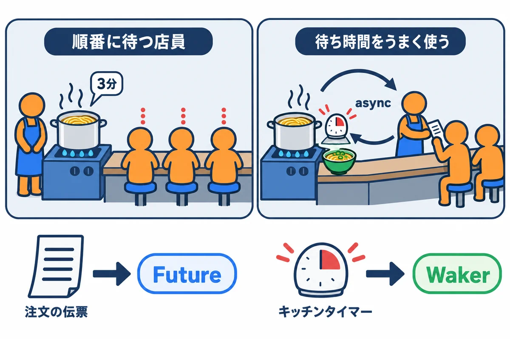
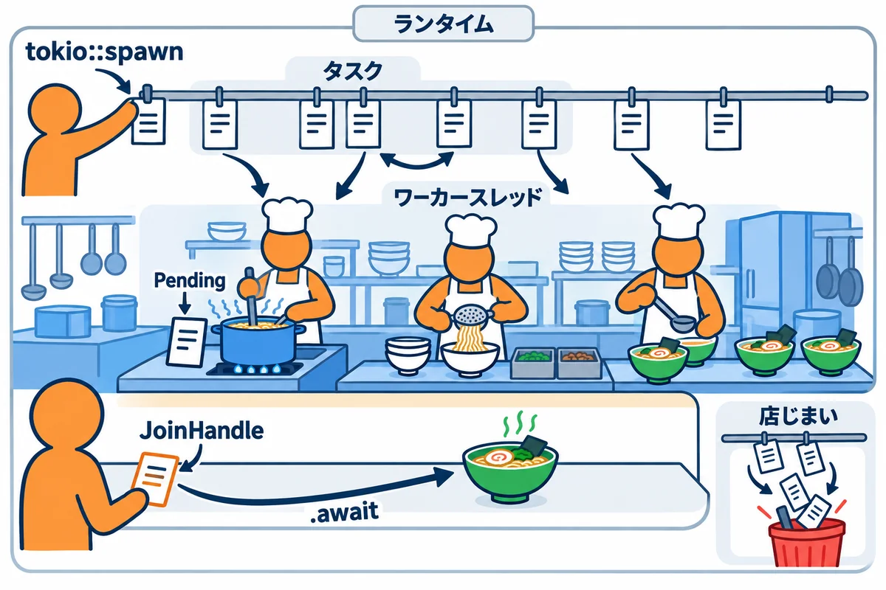
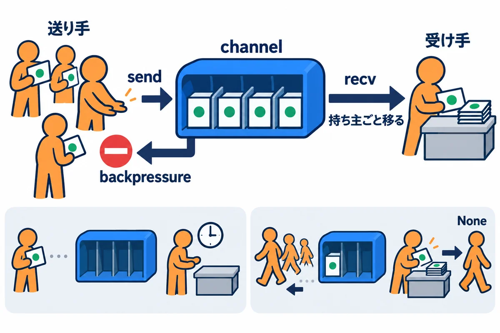
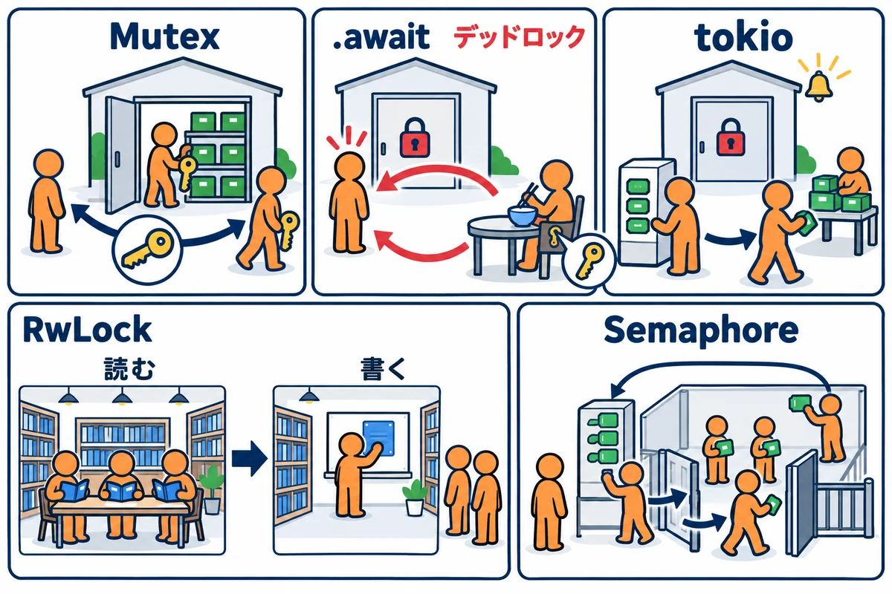
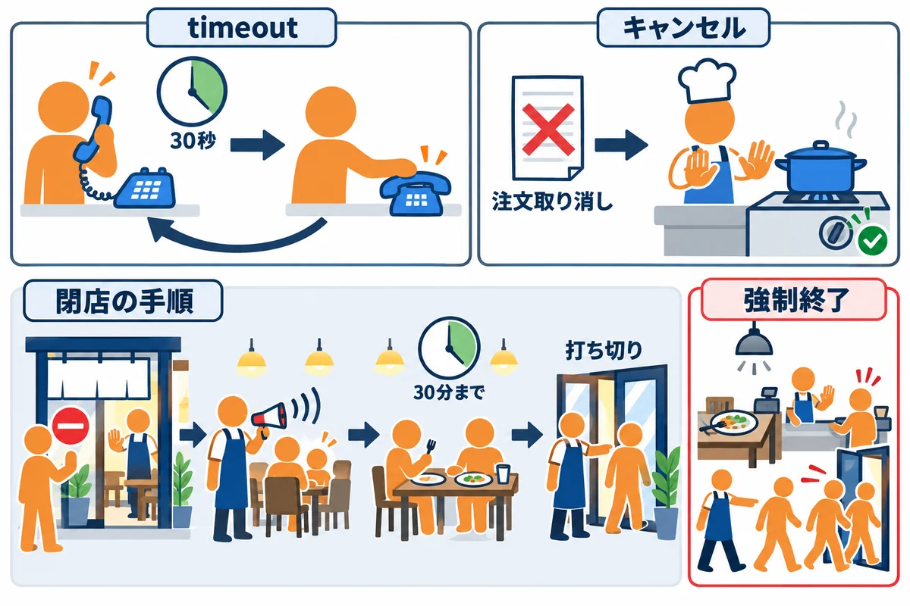
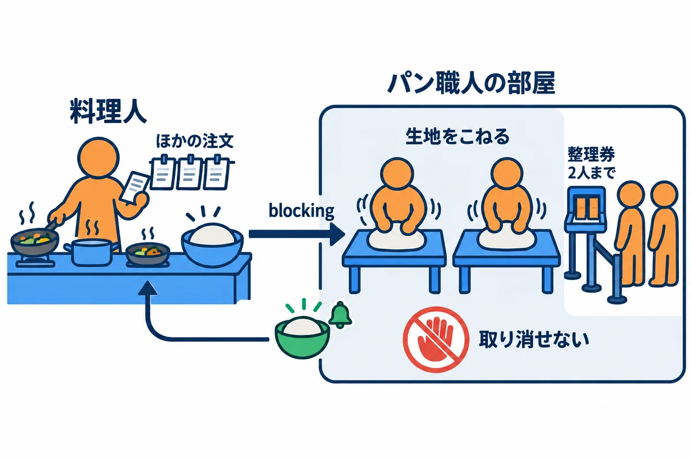
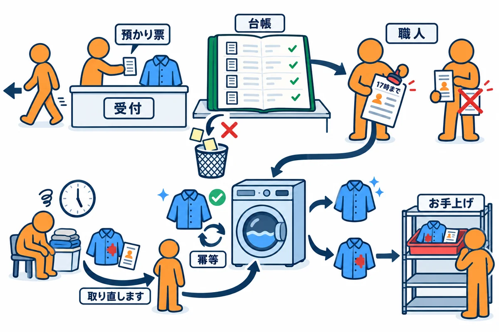

VOLUME 05 / RUST BACKEND MASTERY
Rustバックエンド — async・並行処理・ジョブ・運用
Future の仕組みから、タスク・channel・timeout・再試行・ログまで、たくさんの仕事を同時に安全にさばくサーバーの土台を身に付ける
色の付いた枠のコードの、右上の「コピー」ボタンを押してください。コピーしたら、ブラウザーの「戻る」で PDF に戻れます。
Web アプリのサーバーには、たくさんの人から同時にリクエストが届きます。ノートアプリ RustNote でも、Aさんがノートを保存している間に、Bさんは一覧を開き、Cさんはログインしようとしています。
1つのリクエストの処理時間のほとんどは、実は待ち時間です。DB の返事を待つ、外の API の返事を待つ、ネットワークの向こうからデータが届くのを待つ。待っている間、CPU はほとんど何もしていません。その待ち時間にほかの人の仕事を進めるのが、この巻で学ぶ async（エイシンク：非同期処理）です。
ただし、たくさんの仕事を同時に進めると、1つずつ順番に進めるときには起きなかった事故が起きます。
この巻のテーマは、こうした事故を、Future（フューチャー）・タスク・channel（チャネル）・Semaphore（セマフォ）・timeout（タイムアウト）・spawn_blocking（スポーン・ブロッキング）・再試行・tracing（トレーシング）という仕組みで防ぐことです。Rust では、多くの間違いをコンパイルの時点で止めてくれます。この巻では、そのエラーメッセージを読み解く力も身に付けます。
この巻を終えると、次のことができるようになります。
async fn が返す Future の正体（「まだ始まっていない仕事の札」で、poll されて少しずつ進む状態機械）を説明できるtokio::join! と tokio::try_join! で、複数の待ち時間を重ねて、全体を速くできるtokio::spawn でタスクを作って結果を受け取れる。タスクに 'static と Send が要る理由が分かるJoinSet と select! で、子のタスクをまとめて待ち、最初に終わったものを選べる。同時に動かす数に上限を付けられるMutex・RwLock・Semaphore で共有するデータと同時に入れる数を守り、「鍵を持ったまま .await しない」を守れるtimeout で待つ時間に上限を付け、Ctrl+C を受けたら処理中の仕事を片付けてから止まれる（graceful shutdown：グレースフル・シャットダウン）spawn_blocking に逃がし、ほかのリクエストを止めない| 単元 | テーマ | ひとことで言うと |
|---|---|---|
| UNIT 01 | async・Future・await の正体 | 「待つ間に、ほかの仕事を進める」仕組みを、中からのぞく |
| UNIT 02 | Tokio のランタイム・spawn・JoinHandle | 仕事（タスク）を作り、何人もの作業員で分け合う |
| UNIT 03 | JoinSet・select!・同時に動かす数の管理 | 子のタスクをまとめて待ち、最初に終わったものを選ぶ |
| UNIT 04 | channel・backpressure・所有権の移動 | タスクの間で値を受け渡し、多すぎる仕事に「待った」をかける |
| UNIT 05 | Mutex・RwLock・Semaphore と .await | 共有するデータと、同時に入れる数を守る |
| UNIT 06 | timeout・キャンセル・graceful shutdown | 待つ時間に上限を付け、止めるときは仕事を片付けてから止める |
| UNIT 07 | spawn_blocking と重い計算 | パスワードのハッシュのような重い仕事を、別の場所に逃がす |
| UNIT 08 | HTTP クライアント・再試行・冪等性 | 外の API を呼び、失敗したら賢くやり直す |
| UNIT 09 | tracing・構造化ログ・メトリクス | 何が起きたかを、あとからたどれるように記録する |
| UNIT 10 | バックグラウンドジョブと運用 | 画面の外で動く仕事を、落ちても続けられる形にする |
この巻には、Rust の言葉そのものと、クレート（部品）の名前が混ざって出てきます。最初に、どれが何なのかを分けておきましょう。
async / .await / Future: Rust の言葉と標準ライブラリにある仕組みです。「待ちながら進む仕事」を書くための道具で、どの Rust のプログラムでも使えます。ヒント: 第7巻（Turso・libSQL）では、
#[tokio::main]を「mainの中で.awaitを使えるようにするおまじない」、.awaitを「返事が来るまで待つ印」として使いました。その「おまじない」の中身を、UNIT 01 と UNIT 02 で開けて見ていきます。第7巻をまだ読んでいなくても、この巻は読み進められます。
cargo new と cargo run ができること。struct / enum / match / Option / Result / ? / Vec / String / クロージャの基本。'static（第3巻 UNIT 06）。そして特に、第3巻 UNIT 10 の Arc・Mutex・Send・Sync は、この巻で何度も使います。スレッドを作る std::thread::spawn の話を覚えていると、UNIT 02 の tokio::spawn がすっと入ります。Cargo.toml の版の書き方（第4巻 UNIT 07）。注意: この巻では、スレッド・
Arc・Mutexを「第3巻で学んだもの」として使います。SendとSyncの意味があいまいなときは、先に第3巻 UNIT 10 の「図で理解する」と「よくあるエラー」だけでも読み返しておくと、UNIT 02 のエラーメッセージがずっと読みやすくなります。
各単元では、次の順番を1サイクルとして進めてください。async は、頭の中で考えるだけでは、どの順番で何が起きるのかが想像しにくい分野です。表示の順番を予想してから動かすのが、いちばんの近道です。
.await の位置を1つだけ変えて、表示の順番と時間がどう変わるかを観察します。「よくあるエラー」の節のコードも実際にビルドして、エラーメッセージを自分の目で読みます。# コードの見た目を Rust の標準の形に整える
cargo fmt
# よくある書き間違い・もったいない書き方を指摘してもらう
cargo clippy
# テストを実行する
cargo test
ヒント: この巻の実行結果には、かかった時間（
0.5 秒など）や、スレッドの番号（ThreadId(13)など）が出てきます。時間はパソコンの速さやその時の混み具合で少し変わり、スレッドの番号は実行するたびに変わります。表示の順番が教材と入れ替わることもあります。どういうときに入れ替わるのかは、UNIT 02 で説明します。
この巻のコードは、すべて次の環境で実際にコンパイル・実行し、実行結果とエラーメッセージは実際の出力をそのまま載せています（パソコンのユーザー名などを含む部分だけ ... に置き換えています）。
| 項目 | 版・内容 |
|---|---|
| OS | Windows 11（ARM64）。コマンドは PowerShell を主に、WSL / macOS / Linux は補足で示します |
| Rust | 1.99 以上（本書シリーズの基準）。実行結果は rustc 1.99.0・tokio 1.53.3 で取り、2026-10-31 に rustc 1.99.1・tokio 1.54.1 で全部の例を動かし直して比べた（違いが出た表示は取り直した。時間・スレッドの順番など毎回変わる物は、そのまま） |
| edition | 2024（cargo new の既定値） |
| tokio | 1.54.1（full の機能つき。この巻の全単元で使う） |
| tokio-util | 0.7.20（UNIT 06。取り消しの合図と、タスクの見張り） |
| argon2 | 0.6.0（UNIT 07。パスワードのハッシュ） |
| reqwest | 0.13.5（UNIT 08。HTTP クライアント。ARM64 版の Windows では、ビルドに clang が必要） |
| serde / serde_json | 1.0.229 / 1.0.154（UNIT 08・09。JSON との変換） |
| tracing / tracing-subscriber | 0.1.44 / 0.3.23（UNIT 09。ログ） |
| libsql | 0.10.0（UNIT 10。仕事を DB に保存する。第7巻・RustNote と同じ） |
UNIT 01〜05 で使うクレートは tokio だけで、UNIT 06 で tokio-util を、UNIT 07 で argon2 を、UNIT 08 で reqwest と serde を、UNIT 09 で tracing と tracing-subscriber を、UNIT 10 で libsql を足します。ほかのクレートは、使う単元で cargo add します。
この巻では、練習用のプロジェクト async_lab を1つ作り、小さなプログラムを src/bin/ に1つずつ足していきます。
cargo new async_lab
cd async_lab
mkdir src/bin
cargo add tokio@=1.54.1 --features full
cargo new と cargo add の実際の出力は次のとおりです。
Creating binary (application) `async_lab` package
note: see more `Cargo.toml` keys and their definitions at https://doc.rust-lang.org/cargo/reference/manifest.html
Updating crates.io index
Adding tokio =1.54.1 to dependencies
Features:
+ bytes
+ fs
+ full
+ io-std
+ io-util
+ libc
+ macros
+ net
+ parking_lot
+ process
+ rt
+ rt-multi-thread
+ signal
+ signal-hook-registry
+ socket2
+ sync
+ time
+ tokio-macros
- io-uring
- mio
- schedule-latency
- taskdump
- test-util
- tracing
- windows-sys
Updating crates.io index
Locking 24 packages to highest Rust 1.99.1 compatible versions
tokio@=1.54.1 の = は「ちょうど 1.54.1」という意味です（第4巻 UNIT 07）。= を付けずに tokio@1.54.1 と書くと、Cargo は 1.x の中でいちばん新しい版を選ぶので、新しい版が出ると、それが入ります。この巻の出力と同じ結果になるように、版を固定しておきます（2026-10-31 の時点で、1.54.1 がいちばん新しい版でした）。--features full は、Tokio の機能を全部 ON にする指定です。+ が付いた機能が ON になりました。time（待つ・時間の上限）、sync（channel や Mutex）、macros（#[tokio::main]）、rt-multi-thread（何本ものスレッドで動かす）、signal（Ctrl+C を受け取る）など、この巻で使う機能が全部入っています。Cargo.toml は features = ["rt-multi-thread", "macros"] の2つだけです。機能を絞ると、ビルドが速くなり、使わない部品が入りません。最後に、Cargo.toml の [package] の中、edition = "2024" の次の行に rust-version = "1.99" を手で1行足します。できあがった Cargo.toml は次のとおりです。
[package]
name = "async_lab"
version = "0.1.0"
edition = "2024"
rust-version = "1.99"
[dependencies]
tokio = { version = "=1.54.1", features = ["full"] }
一度 cargo build しておきましょう。最初のビルドでは Tokio とその部品をコンパイルするので、少し時間がかかります（この PC では約9秒でした）。
Compiling tokio v1.54.1
Compiling async_lab v0.1.0 (...\async_lab)
Finished `dev` profile [unoptimized + debuginfo] target(s) in 9.15s
src/bin/ フォルダに置いた .rs ファイルは、1つずつが別のプログラムになります。たとえば src/bin/u01_lazy.rs を作ったら、次のように名前（拡張子なし）を指定して実行します。
cargo run -q --bin u01_lazy
--bin u01_lazy は「src/bin/u01_lazy.rs のプログラムを実行して」という指定です。-q（quiet：静かに）を付けると、Compiling ... や Running ... のような Cargo の表示が消えて、プログラムが表示した内容だけが残ります。この巻の実行結果は、特に断りがなければ -q を付けて実行したものです。-q を付けずに cargo build --bin 名前 や cargo run --bin 名前 で実行しています。ヒント: VS Code で
src/bin/のファイルを開くと、fn mainの上に「▶ Run」の文字が出ます。これをクリックしても同じように実行できます（rust-analyzer の機能です）。
async fn を呼んだだけでは中身が動かず、Future（フューチャー）という「仕事の札」が返ってくること、.await して初めて動き出すことを、実行結果で説明できる.await を順番に書いたときと、tokio::join! で同時に進めたときの時間の違いを、図で説明できるtokio::try_join! で、どれか1つが失敗したら、残りを待たずにすぐ失敗を返す処理を書けるPending（まだです）と Ready（できました）を返しながら少しずつ進む仕組みを、小さな実行係を自分で動かして確かめられるasync や .await の付け忘れで出るエラーと警告を読んで、直せる
ラーメン屋の店員にたとえます。麺をゆでるには3分かかります。
店員は1人のままなのに、後の店員のほうが、ずっとたくさんのお客さんをさばけます。待ち時間が重なっているからです。これが async（非同期処理）の考え方です。この店のしくみを、Rust の言葉に置き換えると次のようになります。
| ラーメン屋 | Rust の async |
|---|---|
| 注文の伝票 | Future。書いた（作った）だけでは、料理は始まらない |
| 店員 | ランタイム（実行係）。伝票を手に取って、進められるところまで進める |
| 伝票を手に取って進めること | poll（ポール） |
| 「まだゆでている」 | Poll::Pending。店員は伝票を置いて、ほかの伝票を進める |
| 「できあがり」 | Poll::Ready(値) |
| キッチンタイマー | Waker（ウェイカー：起こし係）。鳴ったら「あの伝票をもう一度見て」と店員に知らせる |
| 伝票に書かれた「ここで待つ」の印 | .await。待つ間、店員はほかの伝票を進めてよい |
用語: 非同期処理（async：エイシンク。待ち時間の間に、ほかの仕事を進められるように書いた処理。Rust では
async fnやasync { }で書く）
用語: Future（フューチャー：「まだ終わっていない仕事」を表す値。
async fnを呼ぶと返ってくる。.awaitされるまで、中身は動かない）
用語: poll（ポール：Future に「進められるところまで進めて」と頼むこと。答えは
Poll::Pending（まだです）かPoll::Ready(値)（できました）のどちらか）
用語: ランタイム（runtime：Future を poll して動かす係。executor（エグゼキューター：実行係）とも呼ぶ。Rust の標準ライブラリには入っていないので、この巻では Tokio を使う）
まず、「順番に待つ」と「待ち時間を重ねる」で、全体の時間がどう変わるかを見ます。0.5 秒かかる DB への問い合わせを2つ行う場合です。この後の例1-2で、実際に測ります。
.await すると、1つ目の返事が来るまで、2つ目の問い合わせは始まりもしません。全体の時間は足し算になります。tokio::join! を使うと、2つの問い合わせを両方とも始めてから、両方の返事を待ちます。全体の時間は、いちばん長いもので決まります。用語: 並行と並列（並行 concurrency：コンカレンシー は、複数の仕事を「切り替えながら」少しずつ進めること。並列 parallelism：パラレリズム は、複数の CPU で「本当に同時に」動かすこと。
tokio::join!は並行で、CPU は1つしか使わない）
次に、Future が中でどう動いているかです。ランタイムは Future を poll し、Future は「まだです」か「できました」を答えます。
Pending を返します。③ そのとき、「準備ができたら起こしてください」と Waker をタイマーやネットワークの係に預けておきます。Ready(値) が返ります。ヒント: ふだんのプログラムでは、自分で poll を呼ぶことはありません。
.awaitと書けば、ここまでの流れを Rust とランタイムが全部やってくれます。例1-4で、この流れを一度だけ自分の目で確かめます。
▼ このコードがやること（先に日本語で）: 「お湯を沸かす」非同期関数
boil_waterを作ります。mainから呼んだ直後と、.awaitした後に、それぞれ表示を出して、関数の中身がいつ動いたのかを確かめます。
use std::time::Duration;
// 「お湯を沸かす」非同期関数。呼ぶと Future（まだ始まっていない仕事の札）が返る
async fn boil_water() -> u32 {
println!(" [boil_water] 火をつけました");
// 0.3 秒待つ（この間、ほかの仕事に席を譲る）
tokio::time::sleep(Duration::from_millis(300)).await;
println!(" [boil_water] 沸きました");
100
}
#[tokio::main]
async fn main() {
println!("1. boil_water() を呼びます");
let future = boil_water();
println!("2. 呼び終わりました（まだ火はついていません）");
let temperature = future.await;
println!("3. .await が終わりました: {temperature} 度");
}
▶ ここで初めて出てくるコード
await（非同期）:asyncの関数（Future）が終わるのを待って、結果を受け取る書き方。sleep(…).awaitのように、後ろに.awaitを付けます。待っている間は、ほかの仕事に順番をゆずります。.awaitを付けないと、その仕事は始まりません。#[tokio]（非同期）:#[tokio::main]は、mainをasyncにして、tokio（非同期の仕事を回す仕組み）の上で動かす印（属性）。#[tokio::test]は、テストをasyncで書けるようにする印です。tokio::time::sleep()（非同期）: 決めた時間だけ待つ、非同期の関数。tokio::time::sleep(Duration::from_millis(300)).await。待っている間、ほかの仕事は止まりません（std::thread::sleepはスレッドごと止めてしまうので、asyncの中では使いません）。
src/bin/u01_lazy.rs として保存して実行します。
cargo run -q --bin u01_lazy
▼ 実行結果
1. boil_water() を呼びます
2. 呼び終わりました（まだ火はついていません）
[boil_water] 火をつけました
[boil_water] 沸きました
3. .await が終わりました: 100 度
boil_water() を呼んだのは「1.」と「2.」の間なのに、「火をつけました」は「2.」の後に表示されています。
async fn boil_water() -> u32 は「u32 を返す関数」ではなく、「いつか u32 ができあがる Future を返す関数」です。let future = boil_water(); の時点では、関数の中身は1行も動いていません。手元に「お湯を沸かす」と書かれた伝票ができただけです。future.await と書いたところで、ランタイムが伝票を手に取り、中身を進め始めます。「火をつけました」はここで表示されます。sleep(...).await で 0.3 秒待つ間、main も一緒に止まって待ちます。中身が最後まで進んで 100 を返すと、future.await 全体が 100 という値になり、temperature に入ります。ヒント: JavaScript の
async関数は、呼んだ瞬間に中身が動き始めます（Promise）。Rust の Future は.awaitするまで動きません。JavaScript を知っている人ほど、ここでつまずきやすいので注意しましょう。
tokio::time::sleep(時間) は、指定した時間だけ待つ Future を作ります。.await すると、待っている間、ほかの Future に席を譲ります。std::thread::sleep は、スレッドそのものを眠らせます。async の中でこれを使うと、そのスレッドで動いているほかの Future も全部止まってしまいます。注意:
async fnの中では、std::thread::sleepを使わず、tokio::time::sleep(...).awaitを使います。同じように、時間のかかる計算やファイルの読み書きも、そのまま書くとほかの仕事を止めてしまいます。その避け方は UNIT 07 で学びます。
main 関数は、ふつうは async にできません（「よくあるエラー1」で確かめます）。main を呼ぶのは OS で、OS は Future の poll のしかたを知らないからです。#[tokio::main] を付けると、「Tokio のランタイムを作って、その上で async fn main の Future を最後まで動かす」ふつうの main に書き換えてくれます。中で何をしているかは、UNIT 02 で自分の手で書いて確かめます。▼ このコードがやること（先に日本語で）: 0.5 秒かかる「DB への問い合わせ」の代わりの関数
queryを2回使います。①では1つずつ順番に.awaitし、②ではtokio::join!で2つを同時に進めて、それぞれ全体で何秒かかったかを表示します。
use std::time::{Duration, Instant};
// DB への問い合わせの代わり: 指定した時間だけ待ってから結果を返す
async fn query(name: &str, millis: u64) -> String {
tokio::time::sleep(Duration::from_millis(millis)).await;
format!("{name} の結果")
}
#[tokio::main]
async fn main() {
// ① 順番に .await する（1つ終わってから次を始める）
let start = Instant::now();
let user = query("ユーザー", 500).await;
let notes = query("ノート一覧", 500).await;
println!(
"順番に: {user} / {notes} / {:.1} 秒",
start.elapsed().as_secs_f64()
);
// ② tokio::join! で同時に進める（両方の待ち時間が重なる）
let start = Instant::now();
let (user, notes) = tokio::join!(query("ユーザー", 500), query("ノート一覧", 500));
println!(
"同時に: {user} / {notes} / {:.1} 秒",
start.elapsed().as_secs_f64()
);
}
▶ ここで初めて出てくるコード
join!（非同期）:tokio::join!(a, b)は、いくつかの非同期の仕事を同時に進めて、全部が終わるのを待つマクロ。かかる時間は、いちばん長い物の分だけです。
src/bin/u01_join.rs として保存して実行します。
cargo run -q --bin u01_join
▼ 実行結果
順番に: ユーザー の結果 / ノート一覧 の結果 / 1.0 秒
同時に: ユーザー の結果 / ノート一覧 の結果 / 0.5 秒
query("ユーザー", 500).await は、0.5 秒待って結果を受け取るまで、次の行へ進みません。2つ目の query は、1つ目が終わってから作られ、そこから 0.5 秒待ちます。Instant::now() は「今の時刻」、start.elapsed() は「start からたった時間」です。as_secs_f64() で秒の小数にし、{:.1} で小数第1位まで表示しています。tokio::join!(A, B) は、A と B の両方を進め、両方が終わったら、結果を (Aの結果, Bの結果) のタプルで返します。Pending なら B を poll し、どちらかが起こされたらまた poll し…を繰り返しています。2つの 0.5 秒の待ちが重なるので、全体で 0.5 秒です。tokio::join!(A, B, C) のように並べられます（練習問題2）。tokio::join! は、1つの流れ（1つのタスク）の中で、A と B を切り替えながら進めます。CPU は1つしか使っていません。join! にしても速くなりません。計算を本当に同時に（並列に）動かす方法は、UNIT 02 と UNIT 07 で学びます。join! にはできません。1つ目が終わらないと、2つ目を始められないからです。join! が使えるのは、お互いに関係のない待ちだけです。コードを読むときは「この2つは、どちらかの結果を使っているか？」を確かめましょう。▼ このコードがやること（先に日本語で）: 画面の上に「hanako さんのノートは 3 件」と出すダッシュボードを考えます。ユーザーを読む問い合わせ（0.3 秒）と、ノートを数える問い合わせ（0.5 秒）を同時に進めます。どちらかが失敗したら、もう片方を待たずに、すぐ失敗を返します。いるユーザー（1）と、いないユーザー（2）で試します。
use std::time::{Duration, Instant};
#[derive(Debug)]
struct User {
name: String,
}
// ユーザーを読む（DB の代わり）。0.3 秒かかる
async fn load_user(user_id: i64) -> Result<User, String> {
tokio::time::sleep(Duration::from_millis(300)).await;
if user_id == 1 {
Ok(User {
name: String::from("hanako"),
})
} else {
Err(format!("ユーザー {user_id} はいません"))
}
}
// ノートの件数を数える（DB の代わり）。0.5 秒かかる
async fn count_notes(user_id: i64) -> Result<u32, String> {
tokio::time::sleep(Duration::from_millis(500)).await;
Ok(user_id as u32 * 3)
}
// 1つのリクエストの処理: 2つの問い合わせを同時に進め、どちらかが失敗したらすぐ失敗を返す
async fn dashboard(user_id: i64) -> Result<String, String> {
let (user, count) = tokio::try_join!(load_user(user_id), count_notes(user_id))?;
Ok(format!("{} さんのノートは {count} 件", user.name))
}
#[tokio::main]
async fn main() {
for user_id in [1, 2] {
let start = Instant::now();
let result = dashboard(user_id).await;
println!("{result:?} / {:.1} 秒", start.elapsed().as_secs_f64());
}
}
▶ ここで初めて出てくるコード
try_join!（非同期）:tokio::try_join!(a, b)は、join!と同じく同時に進めますが、どれか 1 つでもErrになったら、すぐに止めてそのエラーを返すマクロ。
src/bin/u01_try_join.rs として保存して実行します。
cargo run -q --bin u01_try_join
▼ 実行結果
Ok("hanako さんのノートは 3 件") / 0.5 秒
Err("ユーザー 2 はいません") / 0.3 秒
ユーザー 2 の失敗は 0.3 秒で返ってきました。ノートを数える 0.5 秒を待っていません。
tokio::try_join!(A, B) の A と B は、どちらも Result を返す Future です。Ok なら、Ok((Aの中身, Bの中身)) を返します。どれか1つでも Err になったら、その時点でその Err を返します。? で、Err なら dashboard からそのエラーを返し、Ok なら中身のタプルを取り出して (user, count) に分けています（第2巻 UNIT 09 の ? と同じです）。load_user が Err を返しました。try_join! はすぐに Err を返し、まだ途中だった count_notes の Future は drop（ドロップ：片付け）されます。count_notes は、0.3 秒の時点で途中で止まったことになります。try_join! に渡す Future は、エラーの型が同じでなければなりません。ここでは、どちらも Result<_, String> にそろえています。AppError など）に変換してから渡します。ここは、Future の中身をのぞく発展の内容です。ふだんのアプリで、自分で Future を実装したり poll を呼んだりすることは、ほとんどありません。難しく感じたら、実行結果の流れだけ眺めて、例1-5へ進んでもかまいません。
▼ このコードがやること（先に日本語で）: 決まった回数だけ「まだです」と答える Future
Countdownを自分で作ります。それを2回.awaitするmake_teaを、Tokio を使わずに、自分で作った最小の実行係block_onで動かします。poll が何回呼ばれ、そのたびにどこまで進むかを表示します。
use std::future::Future;
use std::pin::{Pin, pin};
use std::task::{Context, Poll, Waker};
// 決まった回数だけ「まだです（Pending）」と答え、その後「できました（Ready）」と答える Future
struct Countdown {
remaining: u32,
}
impl Future for Countdown {
type Output = &'static str;
fn poll(mut self: Pin<&mut Self>, cx: &mut Context<'_>) -> Poll<Self::Output> {
if self.remaining == 0 {
println!(" Countdown: Ready を返す");
Poll::Ready("完了")
} else {
println!(
" Countdown: Pending を返す（あと {} 回）",
self.remaining
);
self.remaining -= 1;
// 「準備ができたので、もう一度 poll してください」と実行係に知らせる
cx.waker().wake_by_ref();
Poll::Pending
}
}
}
// async fn の中に .await が2つある。コンパイラはこれを状態機械に変換する
async fn make_tea() -> String {
println!(" [make_tea] 開始");
let first = Countdown { remaining: 2 }.await;
println!(" [make_tea] 1つ目の待ちが終わった: {first}");
let second = Countdown { remaining: 1 }.await;
println!(" [make_tea] 2つ目の待ちが終わった: {second}");
String::from("お茶")
}
// 最小の実行係（executor）: Ready が返るまで poll を呼び続ける
fn block_on<F: Future>(future: F) -> F::Output {
// poll するには、Future が動かない場所に固定（pin）されている必要がある
let mut future = pin!(future);
// 何もしない Waker（起こし係）。この実行係はどうせすぐ次の poll をする
let mut cx = Context::from_waker(Waker::noop());
let mut count = 0;
loop {
count += 1;
println!("実行係: {count} 回目の poll");
if let Poll::Ready(value) = future.as_mut().poll(&mut cx) {
return value;
}
}
}
fn main() {
let tea = make_tea();
println!("make_tea() を呼んだ。まだ何も表示されていないはず");
let result = block_on(tea);
println!("結果: {result}");
}
▶ ここで初めて出てくるコード
pin!（非同期）: Future を、メモリの中で動かないように「ピン留め」するマクロ。pollを自分で呼ぶ時などに必要です（ふつうは.awaitが自動でしてくれます）。.waker()（非同期）:Contextから、「準備ができたら起こしてね」と頼むための物（Waker）を取り出すメソッド。非同期の仕組みの中身を見る時の物で、ふだんは使いません。.wake_by_ref()（非同期）:Wakerを使って、「もう一度pollしてほしい」と知らせるメソッド。.as_mut()（所有権と借用）: 中身を、書きかえられる形で借りるメソッド。Pinに使うと、ピン留めしたままpollを呼べる形にします。Context::from_waker()（非同期）:Wakerから、pollに渡すContextを作る関数。非同期の仕組みの中身を確かめる時に使います。Waker::noop()（非同期）: 「起こしても何もしない」Wakerを作る関数。仕組みを試すための物です。Future（非同期）: 「いつか終わる仕事」を表す型（トレイト）。async fnを呼ぶと、すぐには動かず、この Future が返ります。.awaitするか、tokio に渡して、初めて動きます。Pin（非同期）: 中身がメモリの中で動かないことを約束する入れ物。Future の中には、自分の中の場所を指している物があるので、動かすと壊れてしまいます。それを防ぐための仕組みです。Poll（非同期）: Future に「終わった？」と聞いた答えの型。Poll::Ready(値)（終わった）かPoll::Pending（まだ）です。Waker（非同期）: 「この仕事の準備ができた」と知らせて、もう一度動かしてもらうための物。tokio が、待っている仕事を起こすのに使います。Ready（非同期）:Poll::Ready(値)は「仕事が終わった。結果はこれ」という答え。まだならPoll::Pendingです。Future のpollは、この 2 つのどちらかを返します。
src/bin/u01_mini_executor.rs として保存して実行します。このプログラムは Tokio を使っていません（#[tokio::main] もありません）。
cargo run -q --bin u01_mini_executor
▼ 実行結果
make_tea() を呼んだ。まだ何も表示されていないはず
実行係: 1 回目の poll
[make_tea] 開始
Countdown: Pending を返す（あと 2 回）
実行係: 2 回目の poll
Countdown: Pending を返す（あと 1 回）
実行係: 3 回目の poll
Countdown: Ready を返す
[make_tea] 1つ目の待ちが終わった: 完了
Countdown: Pending を返す（あと 1 回）
実行係: 4 回目の poll
Countdown: Ready を返す
[make_tea] 2つ目の待ちが終わった: 完了
結果: お茶
make_tea は、コンパイラによって次のような「状態機械」に作り変えられています。poll されるたびに、今の状態から次の Pending まで一気に進みます。
Future は標準ライブラリにある trait（第4巻 UNIT 02）で、poll という関数を1つだけ持っています。type Output は、できあがったときの値の型です。poll の答えは Poll::Pending（まだです）か Poll::Ready(値)（できました）のどちらかです。Countdown は、remaining が 0 になるまで Pending を返し、0 になったら Ready("完了") を返します。cx.waker().wake_by_ref(); は、「もう一度 poll してください」とランタイムに知らせる呼び出しです。Countdown は「すぐに準備ができる」ので、その場で起こしています。本物のタイマーなら、「時間になったら起こす」ように Waker をタイマーに預けます（図の③）。Pending を返すのに、誰も Waker で起こさないと、その Future は二度と poll されず、止まったままになります。自分で Future を実装するときに、いちばん気をつける約束です。pin!(future) は、Future をメモリの中で動かないように留めています（pin：ピン留め）。async fn が作る状態機械は、自分の中の変数を指す参照を持つことがあるので、poll の途中で場所が変わると困るからです。poll の引数が Pin<&mut Self> になっているのは、この約束のためです。Waker::noop() は、何もしない Waker です。この実行係は、Pending が返ってもすぐに次の poll をするので、起こしてもらう必要がありません。Pending を返した Future は脇に置いて、ほかの Future を進め、Waker で起こされた Future だけをもう一度 poll します。だから、待っている Future がいくつあっても CPU を無駄に使いません。Countdown が Ready を返すと、make_tea は止まらずにそのまま次の行へ進み、2つ目の Countdown が Pending を返したところで、ようやく poll から戻っています。Pending まで」進みます。.await は、そこで止まるかもしれない区切りです。.await の後でも使う変数（ここでは first）は、止まっている間も覚えておかなければならないので、状態機械の中に保存されます。次の例1-5で、それを Future の大きさで確かめます。▼ このコードがやること（先に日本語で）: 1KB（1024 バイト）の配列を、
.awaitの後でも使う関数と、.awaitの前に使い終わる関数を作ります。それぞれが返す Future の大きさをsize_of_valで測って比べます。
use std::mem::size_of_val;
use std::time::Duration;
async fn wait() {
tokio::time::sleep(Duration::from_millis(10)).await;
}
// 1KB の配列を作り、.await の「後」でも使う
async fn keeps_buffer() -> usize {
let buffer = [1u8; 1024];
wait().await;
buffer.len()
}
// 1KB の配列は .await の「前」に使い終わる
async fn uses_buffer_before_await() -> usize {
let len = {
let buffer = [1u8; 1024];
buffer.len()
};
wait().await;
len
}
#[tokio::main]
async fn main() {
let a = wait();
let b = keeps_buffer();
let c = uses_buffer_before_await();
println!(
"wait() の Future: {} バイト",
size_of_val(&a)
);
println!(
"keeps_buffer() の Future: {} バイト",
size_of_val(&b)
);
println!(
"uses_buffer_before_await() の Future: {} バイト",
size_of_val(&c)
);
println!("結果: {} {} {:?}", b.await, c.await, a.await);
}
src/bin/u01_future_size.rs として保存して実行します。
cargo run -q --bin u01_future_size
▼ 実行結果
wait() の Future: 120 バイト
keeps_buffer() の Future: 1152 バイト
uses_buffer_before_await() の Future: 136 バイト
結果: 1024 1024 ()
keeps_buffer の Future は 1152 バイトで、wait() の Future（120 バイト）より 1KB ほど大きくなっています。.await で止まっている間も、後で buffer.len() を使うために、配列を Future の中に取っておく必要があるからです。uses_buffer_before_await では、配列は { } の中で使い終わって消えます。.await のときには配列はもう無いので、Future の中には len（数字1つ）しか入らず、136 バイトで済んでいます。.await をまたいで使う変数は、Future の中にしまわれる」という一点です。.await をまたいで持っている値は、Future の一部です。UNIT 02 では、Future を別のスレッドに渡して動かします。そのとき、Future の中に「スレッドをまたげない値」（第3巻 UNIT 10 の Rc など）がしまわれていると、コンパイルエラーになります。.await すると、Future も大きくなります。大きなデータは Vec や Box にすると、本体はヒープに置かれ、Future の中には小さな「持ち手」（Vec なら 24 バイト）だけが入ります。ヒント:
size_of_valは、値がメモリの中で何バイトを使うかを返す関数です（std::mem::size_of_val）。ふだんのアプリで Future の大きさを気にすることはあまりありませんが、「.awaitをまたぐと何が起きるか」を目で見るにはちょうどよい道具です。
#[tokio::main] を書き忘れて、main に async だけを付けた場合です。
async fn main() {
println!("こんにちは");
}
Compiling async_lab v0.1.0 (...\async_lab)
error[E0752]: `main` function is not allowed to be `async`
--> src\bin\e01_async_main.rs:1:1
|
1 | async fn main() {
| ^^^^^^^^^^^^^^^ `main` function is not allowed to be `async`
For more information about this error, try `rustc --explain E0752`.
error: could not compile `async_lab` (bin "e01_async_main") due to 1 previous error
main 関数は async にできません」というエラーです。async fn main は Future を返しますが、main を呼ぶ OS は、その Future を poll する方法を知りません。main の上の行に #[tokio::main] を足します。これで、Tokio のランタイムが Future を動かしてくれる、ふつうの main に書き換わります。use std::time::Duration;
// async が付いていない、ふつうの関数
fn load_note() -> String {
tokio::time::sleep(Duration::from_millis(100)).await;
String::from("ノート")
}
#[tokio::main]
async fn main() {
println!("{}", load_note());
}
Compiling async_lab v0.1.0 (...\async_lab)
error[E0728]: `await` is only allowed inside `async` functions and blocks
--> src\bin\e01_await_in_sync.rs:5:52
|
4 | fn load_note() -> String {
| ------------------------ this is not `async`
5 | tokio::time::sleep(Duration::from_millis(100)).await;
| ^^^^^ only allowed inside `async` functions and blocks
For more information about this error, try `rustc --explain E0728`.
error: could not compile `async_lab` (bin "e01_await_in_sync") due to 1 previous error
await は async の関数かブロックの中でしか使えません」というエラーです。this is not async の線が、async が付いていない関数の行を指しています。fn load_note() を async fn load_note() にします。すると load_note() は Future を返すようになるので、呼ぶ側も load_note().await に直します。ヒント: 関数の中で
.awaitを使うと、その関数もasyncにする必要があり、その関数を呼ぶ側でも.awaitが必要になり…と、asyncは呼び出し元へ向かって広がっていきます。いちばん外側は#[tokio::main]のmainで受け止めます。同期の関数から async の処理をどうしても呼びたいときの方法と、その落とし穴は UNIT 02 で扱います。
async fn count_notes() -> u32 {
3
}
#[tokio::main]
async fn main() {
// .await を付け忘れた
let count: u32 = count_notes();
println!("ノートは {count} 件");
}
Compiling async_lab v0.1.0 (...\async_lab)
error[E0308]: mismatched types
--> src\bin\e01_forgot_await.rs:8:22
|
8 | let count: u32 = count_notes();
| --- ^^^^^^^^^^^^^ expected `u32`, found future
| |
| expected due to this
|
note: calling an async function returns a future
--> src\bin\e01_forgot_await.rs:8:22
|
8 | let count: u32 = count_notes();
| ^^^^^^^^^^^^^
help: consider `await`ing on the `Future`
|
8 | let count: u32 = count_notes().await;
| ++++++
For more information about this error, try `rustc --explain E0308`.
error: could not compile `async_lab` (bin "e01_forgot_await") due to 1 previous error
u32 が来るはずなのに、future が来ました」というエラーです。note: の行が「async 関数を呼ぶと future が返ります」と、原因をそのまま教えてくれています。help: のとおり、count_notes().await にします。++++++ の印は「ここに .await を足して」という意味です。いちばん危ないのは、エラーにならずにビルドが通ってしまう場合です。
async fn save_note() {
println!("保存しました");
}
#[tokio::main]
async fn main() {
// .await を付け忘れた（結果も使っていない）
save_note();
println!("終わり");
}
Compiling async_lab v0.1.0 (...\async_lab)
warning: unused implementer of `Future` that must be used
--> src\bin\e01_unused_future.rs:8:5
|
8 | save_note();
| ^^^^^^^^^^^
|
= note: futures do nothing unless you `.await` or poll them
= note: `#[warn(unused_must_use)]` (part of `#[warn(unused)]`) on by default
warning: `async_lab` (bin "e01_unused_future") generated 1 warning
Finished `dev` profile [unoptimized + debuginfo] target(s) in 0.70s
Running `target\debug\e01_unused_future.exe`
終わり
save_note() は Future を作っただけで、誰も .await しなかったので、中身が1行も動かずに捨てられました。note: futures do nothing unless you .await or poll them（Future は .await か poll しない限り何もしません）が、そのことを教えています。save_note().await; にします。cargo clippy -- -D warnings を使うと、警告をエラーとして扱い、ビルドを失敗させてくれます。cargo clippy --bin e01_unused_future -- -D warnings
Checking async_lab v0.1.0 (...\async_lab)
error: unused implementer of `std::future::Future` that must be used
--> src\bin\e01_unused_future.rs:8:5
|
8 | save_note();
| ^^^^^^^^^^^
|
= note: futures do nothing unless you `.await` or poll them
= note: `-D unused-must-use` implied by `-D warnings`
= help: to override `-D warnings` add `#[allow(unused_must_use)]`
error: could not compile `async_lab` (bin "e01_unused_future") due to 1 previous error
注意: 「保存したつもりで保存されていない」は、本番では気づくのがとても遅れる種類のバグです。RustNote の自動チェック（
Rust/rustnote/ci.yml）でも、cargo clippy --all-targets --locked -- -D warningsを実行して、警告が1つでもあれば失敗にしています。
RustNote の入口 Rust/rustnote/src/main.rs は、この単元で学んだ形そのものです（説明に関係する部分を抜き出しています）。
#[tokio::main]
async fn main() -> anyhow::Result<()> {
// .env が無くてもエラーにしない（本番では環境変数を直接設定する）
dotenvy::dotenv().ok();
let config = Config::from_env().context("設定を読み込めませんでした")?;
// （アセットの読み込みは省略）
let db = Db::open(&config)
.await
.with_context(|| format!("DB（{}）を開けませんでした", config.database_url))?;
let applied = db::migrate(&db)
.await
.context("マイグレーションに失敗しました")?;
// （起動のログとルーターの組み立ては省略）
topcoat::start(router)
.await
.context("サーバーを起動できませんでした（HOST / PORT を確認してください）")?;
Ok(())
}
▶ ここで初めて出てくるコード
dotenvy::dotenv()（設定）:.envファイルに書いた「名前=値」を、環境変数として読み込む関数（dotenvyの部品）。開発のパソコンで、設定をファイルにまとめておく時に使います。.envは Git に入れません。
#[tokio::main] の async fn main で、Tokio のランタイムの上でアプリ全体を動かしています。Db::open(&config).await は「DB を開き終わるまで待つ」、db::migrate(&db).await は「表の準備が終わるまで待つ」です。どちらも前の結果を次で使うので、順番に .await しています（例1-2の解説4）。.await の後に続く .context(...)? は、「待ち終わって Result が出てきたら、エラーなら説明を付けて返す」という意味です。.await が先、? が後、の順番で読みます。topcoat::start(router).await は、サーバーが止まるまで終わりません。サーバーは、ここで待ちながら、届いたリクエストを1つずつ別の仕事（タスク）として動かし続けます。そのしくみが、次の UNIT 02 のテーマです。ノートを読む処理（src/repository/notes.rs の find）も、.await の連続です。
async fn find(&self, owner: UserId, id: NoteId) -> Result<Option<Note>, RepoError> {
let conn = self.db.connect().await?;
let sql = format!("SELECT {NOTE_COLUMNS} FROM notes WHERE id = ?1 AND user_id = ?2");
let mut rows = conn
.query(&sql, libsql::params![id.get(), owner.get()])
.await?;
match rows.next().await? {
Some(row) => Ok(Some(row_to_note(&row)?)),
None => Ok(None),
}
}
▶ ここで初めて出てくるコード
params!（データベース）:libsql::params![a, b]は、SQL の?1・?2の場所に入れる値を並べるマクロ。値は SQL の文字列につながず、必ずこの形で渡します（SQL インジェクションを防ぐ。第7巻）。
DB につなぐ・SQL を送る・1行目を受け取る、の3か所で .await しています。DB の返事を待っている間、同じサーバーの中では、ほかの人のリクエストが進んでいます。これが、RustNote が1つのプログラムで大勢の利用者をさばける理由です。
問1: 次のプログラムを実行すると、何がどの順番で表示されるでしょうか。実行する前に予想してください（src/bin/u01_q1.rs）。
// 番号を受け取り、始めたことを表示して、10 倍した値を返す
async fn job(number: u32) -> u32 {
println!(" 仕事{number} を始めます");
number * 10
}
#[tokio::main]
async fn main() {
let first = job(1);
let second = job(2);
println!("札を2枚作りました");
// 2枚目の札から先に .await する
let b = second.await;
let a = first.await;
println!("結果: {a} {b}");
}
問2: 次のプログラムは、0.9 秒かかります。3つの問い合わせはお互いに関係がありません。tokio::join! を使って速くしてください。書き換えた後、全体で何秒になるかも予想してください（src/bin/u01_q2.rs）。
use std::time::{Duration, Instant};
// DB への問い合わせの代わり: 指定した時間だけ待ってから、名前を返す
async fn load(name: &str, millis: u64) -> String {
tokio::time::sleep(Duration::from_millis(millis)).await;
name.to_string()
}
#[tokio::main]
async fn main() {
let start = Instant::now();
let user = load("ユーザー", 200).await;
let notes = load("ノート", 300).await;
let tags = load("タグ", 400).await;
println!(
"{user}・{notes}・{tags} / {:.1} 秒",
start.elapsed().as_secs_f64()
);
}
ユーザー・ノート・タグ / 0.9 秒
問3: tokio::try_join! に渡した2つの Future が、両方とも失敗します。load_user は 0.3 秒後に、count_notes は 0.1 秒後に失敗します。表示される結果と時間を予想してください（src/bin/u01_q3.rs）。
use std::time::{Duration, Instant};
// 0.3 秒後に失敗する
async fn load_user() -> Result<String, String> {
tokio::time::sleep(Duration::from_millis(300)).await;
Err(String::from("ユーザーを読めません"))
}
// 0.1 秒後に失敗する
async fn count_notes() -> Result<u32, String> {
tokio::time::sleep(Duration::from_millis(100)).await;
Err(String::from("ノートを数えられません"))
}
#[tokio::main]
async fn main() {
let start = Instant::now();
let result = tokio::try_join!(load_user(), count_notes());
println!("{result:?} / {:.1} 秒", start.elapsed().as_secs_f64());
}
問1の解答:
札を2枚作りました
仕事2 を始めます
仕事1 を始めます
結果: 10 20
job(1) と job(2) を呼んだ時点では、どちらの中身も動いていません。だから「札を2枚作りました」が最初です。.await したときなので、先に .await した second（仕事2）が先に始まります。呼んだ順番ではなく、.await した順番で動く、というのがポイントです。a は first（仕事1）の結果の 10、b は second の結果の 20 です。問2の解答:
use std::time::{Duration, Instant};
// DB への問い合わせの代わり: 指定した時間だけ待ってから、名前を返す
async fn load(name: &str, millis: u64) -> String {
tokio::time::sleep(Duration::from_millis(millis)).await;
name.to_string()
}
#[tokio::main]
async fn main() {
let start = Instant::now();
// 3つの待ち時間を重ねる。全体の時間は、いちばん長い 400 ミリ秒で決まる
let (user, notes, tags) = tokio::join!(
load("ユーザー", 200),
load("ノート", 300),
load("タグ", 400)
);
println!(
"{user}・{notes}・{tags} / {:.1} 秒",
start.elapsed().as_secs_f64()
);
}
src/bin/u01_q2_answer.rs として保存して実行した結果です。
ユーザー・ノート・タグ / 0.4 秒
join! で重ねると、いちばん長い 0.4 秒です。tokio::join! の結果は、渡した順番どおりのタプル (user, notes, tags) で返ります。終わった順番（ユーザー → ノート → タグ）ではなく、書いた順番です。問3の解答:
Err("ノートを数えられません") / 0.1 秒
try_join! は、最初に起きた失敗を返します。0.1 秒の時点で count_notes が失敗したので、その Err がすぐに返りました。load_user は途中で捨てられ、0.3 秒の失敗は起きる前に終わっています。load_user が先）ではなく、時間の順番で決まる点に注意しましょう。どちらのエラーが返るかは、それぞれの待ち時間しだいで変わります。async fn を呼ぶと Future（仕事の札）が返るだけで、中身は .await したときに初めて動く。Future は poll されて Pending と Ready を返しながら進み、Waker で起こされる。tokio::join! / tokio::try_join! で重ねると、全体の時間が「足し算」から「いちばん長いもの」になる。これは並行で、CPU を2つ使う並列ではない。.await の付け忘れはエラーにならず警告だけのことがあるので、cargo clippy -- -D warnings で止める。#[tokio::main] が中でしていることを説明できるtokio::spawn でタスクを作り、JoinHandle（ジョインハンドル）で結果を受け取れる。タスクが何本ものスレッドで同時に動くことを、実行結果で確かめられるabort による取り消しを、JoinError で見分けられるtokio::spawn に渡す仕事が 'static と Send でなければならない理由を説明し、E0373 と「future cannot be sent between threads safely」のエラーを直せるblock_on を呼んではいけない理由を説明できる
UNIT 01 のラーメン屋は、店員が1人でした。今度は、料理人が何人もいる大きな厨房を考えます。
tokio::spawn です。レールに掛かった伝票1枚1枚がタスクです。JoinHandle です。引換券を出せば、できあがった料理を受け取れます（.await）。Pending）は、伝票を脇に置いて別の伝票を進めます。main の終わり）になると、レールに残った伝票は、途中でも全部捨てられます。伝票は、どの料理人が手に取るか分かりません。途中で別の料理人に渡ることもあります。だから、伝票に添える物には2つの約束があります。
Send）であること。 第3巻 UNIT 10 で学んだ Rc のように「1人の手の中でしか使えない物」は添えられません。'static）であること。 「隣の人から借りた物」を添えると、料理ができる前に貸し主が帰ってしまうかもしれません。借り物ではなく、自分の物（所有している値）を添えます。用語: タスク（task：ランタイムの上で動く、1つの独立した仕事。
tokio::spawnで作る。中身は1つの Future）
用語: ワーカースレッド（worker thread：ランタイムが用意した、タスクを poll して進めるスレッド。ふつうは CPU のコア数と同じ本数）
用語: JoinHandle（ジョインハンドル：
tokio::spawnが返す引換券。.awaitすると、タスクの戻り値をResultに包んで受け取れる）
Tokio のランタイムの中は、次のようになっています。
sleep の時間が来たときや、ネットワークの返事が届いたときに、待っていたタスクを Waker で起こします（UNIT 01 の図の④）。.await で止まるたびに、別のスレッドで続きが動くことがあります。これが、タスクに Send が要る理由です。次は、1つのタスクが作られてから、結果が届くまでの道すじです。
UNIT 01 の Future と、この単元のタスクには、大きな違いが1つあります。
.await するまで動きません（UNIT 01 の例1-1）。tokio::spawn した瞬間から動き始めます。 引換券を .await するのは「結果を受け取るため」で、「動かすため」ではありません。第3巻 UNIT 10 で学んだ std::thread::spawn（OS のスレッド）と、この単元の tokio::spawn（Tokio のタスク）を比べると、次のようになります。
std::thread::spawn（第3巻） |
tokio::spawn（この単元） |
|
|---|---|---|
| 作るもの | OS のスレッド | Tokio のタスク（中身は1つの Future） |
| 1つあたりの重さ | 重い。Rust の標準では、1本ごとに 2MB のスタックを用意する | 軽い。Future の大きさ分（UNIT 01 の例1-5）だけ |
| 待つとき | thread::sleep でスレッドごと眠る |
.await で席を譲り、スレッドはほかのタスクを進める |
| 結果の受け取り | handle.join() |
handle.await |
| たくさん作ると | 本数が増えるほど、メモリと切り替えの手間が重くなる | 10万個でも動く（例2-5） |
| 向いている仕事 | 長い計算・同期の処理 | 待ち時間の多い仕事（DB・ネットワーク） |
▼ このコードがやること（先に日本語で）: 0.3 秒・0.1 秒・0.2 秒待つタスクを3つ作ります。それぞれ、終わったときに「何秒の時点で、どのスレッドで終わったか」を表示します。その後、作った順番に引換券を
.awaitして、戻り値を受け取ります。
use std::time::{Duration, Instant};
// 1つのタスクの仕事: 指定の時間だけ待ち、終わったら「どのスレッドで動いたか」を表示する
async fn work(number: u32, millis: u64, start: Instant) -> u32 {
tokio::time::sleep(Duration::from_millis(millis)).await;
let thread = std::thread::current();
println!(
" タスク{number} が終わりました（{:.1} 秒 / {:?}）",
start.elapsed().as_secs_f64(),
thread.id()
);
number * 100
}
#[tokio::main]
async fn main() {
let start = Instant::now();
// tokio::spawn でタスクを作ると、すぐに裏で動き始める。手元には JoinHandle（引換券）が残る
let first = tokio::spawn(work(1, 300, start));
let second = tokio::spawn(work(2, 100, start));
let third = tokio::spawn(work(3, 200, start));
println!("3つのタスクを作りました");
// 引換券を .await すると、そのタスクの戻り値を受け取れる
for handle in [first, second, third] {
let value = handle.await.expect("タスクが panic しました");
println!("受け取った値: {value}");
}
println!("合計 {:.1} 秒", start.elapsed().as_secs_f64());
}
▶ ここで初めて出てくるコード
std::thread::current()（スレッドと共有）: 今動いているスレッドの情報（名前・番号）を返す関数。どのスレッドで動いたかを表示する時に使います。tokio::spawn()（非同期）: 非同期の仕事を、別のタスクとしてすぐ動かし始める関数。tokio::spawn(async move { … })。返ってくる物（JoinHandle）を.awaitすると、結果を受け取れます。
src/bin/u02_spawn.rs として保存して実行します。
cargo run -q --bin u02_spawn
▼ 実行結果
3つのタスクを作りました
タスク2 が終わりました（0.1 秒 / ThreadId(13)）
タスク3 が終わりました（0.2 秒 / ThreadId(13)）
タスク1 が終わりました（0.3 秒 / ThreadId(13)）
受け取った値: 100
受け取った値: 200
受け取った値: 300
合計 0.3 秒
tokio::spawn(work(1, 300, start)) は、work(...) が作った Future をタスクとして待ち行列に入れ、引換券（JoinHandle<u32>）をすぐに返します。spawn そのものは待ちません。.await する前から動いています。「タスク2が終わりました」が 0.1 秒の時点で表示されているのは、そのためです。終わった順番は、待ち時間の短い順（2 → 3 → 1）です。join! と同じく、3つの待ちが重なりました。for handle in [first, second, third] で、作った順番に .await しています。タスク1（0.3 秒）を待っている間に、タスク2と3はとっくに終わっていますが、その結果はタスクの中に取っておかれます。.await した順番（100 → 200 → 300）で表示されます。handle.await の結果は Result<u32, JoinError> です。タスクが panic していなければ Ok、panic していたら Err です。ここでは expect で中身を取り出しています（Err のときの例は例2-3）。std::thread::current().id() は、今このコードを動かしているスレッドの番号です。ThreadId(13) で終わりました。3つのタスクはほとんど「待っているだけ」なので、1本のスレッドで十分にさばけたのです。実行するたびに番号は変わり、別々のスレッドに分かれることもあります。ヒント: 同じ時刻に起こされたタスクが複数あると、それらは別々のスレッドで本当に同時に（並列に）動くことがあります。そのとき、どちらの
println!が先に表示されるかは決まっていません。この巻の実行結果で、同じ待ち時間のタスクの表示の順番が教材と入れ替わるのは、このためです。
▼ このコードがやること（先に日本語で）:
#[tokio::main]を使わずに、ワーカースレッドが2本のランタイムを自分で作ります。その上で 0.1 秒待つタスクを4つ動かし、それぞれがどのスレッドで終わったかを表示します。最後に、4つの戻り値の合計を表示します。
use std::time::Duration;
// #[tokio::main] を使わずに、ランタイムを自分で組み立てる
fn main() -> std::io::Result<()> {
let runtime = tokio::runtime::Builder::new_multi_thread()
// ワーカースレッドを2本にする（既定は CPU のコア数）
.worker_threads(2)
// 時間（sleep・timeout）と I/O（ネットワーク）の機能を有効にする
.enable_all()
.build()?;
// block_on: ここで渡した async ブロックが終わるまで、main のスレッドは待つ
let total = runtime.block_on(async {
let mut handles = Vec::new();
for number in 1..=4 {
handles.push(tokio::spawn(async move {
tokio::time::sleep(Duration::from_millis(100)).await;
let thread = std::thread::current();
println!(
"タスク{number}: {} {:?}",
thread.name().unwrap_or("?"),
thread.id()
);
number * 10
}));
}
let mut total = 0;
for handle in handles {
total += handle.await.unwrap();
}
total
});
println!("合計: {total}");
Ok(())
}
▶ ここで初めて出てくるコード
.worker_threads()（非同期）: tokio の組み立て係で、仕事を回すスレッドの数を決めるメソッド。.enable_all()（非同期）: tokio の組み立て係で、時間（タイマー）やネットワークなど、全部の機能を使えるようにするメソッド。tokio::runtime::Builder::new_multi_thread()（非同期）: いくつものスレッドで仕事を回す tokio の仕組み（ランタイム）を、組み立て始める関数。.worker_threads(2).enable_all().build()のように設定してから作ります。Builder（型とメソッド）: 「組み立て係」（ビルダー）の型。設定をメソッドでつなげて決め、最後の.build()ででき上がりを作ります。tokio のランタイム・HTTP のクライアント・データベースの接続などで使われます。
src/bin/u02_runtime.rs として保存して実行します。
cargo run -q --bin u02_runtime
▼ 実行結果
タスク3: tokio-rt-worker ThreadId(3)
タスク2: tokio-rt-worker ThreadId(3)
タスク1: tokio-rt-worker ThreadId(3)
タスク4: tokio-rt-worker ThreadId(2)
合計: 100
tokio::runtime::Builder::new_multi_thread() は、「ワーカースレッドを何本も使うランタイム」を作る準備です。.worker_threads(2) で、ワーカースレッドの本数を2本にしています。実行結果に ThreadId(3) と ThreadId(2) の2種類しか出てこないのは、そのためです。指定しなければ、CPU のコア数と同じ本数になります。.enable_all() は、タイマー（sleep など）と I/O（ネットワーク）の係を有効にします。これを忘れると、sleep を使ったところで A Tokio 1.x context was found, but timers are disabled.（タイマーが有効になっていません）という panic になります。.build()? でランタイムができあがります。作るのに失敗することもあるので Result が返り、? で main のエラーとして返しています。runtime.block_on(Future) は、「この Future が終わるまで、今のスレッドで待ち続ける」関数です。main はふつうの関数（同期の世界）なので、ここで async の世界に入ります。block_on が返した値（ここでは合計の 100）は、ふつうの値として main で使えます。#[tokio::main] は、ちょうどこの形を自動で書いてくれる印です。#[tokio::main] async fn main() { 中身 } は、おおよそ次のように書き換えられます。fn main() {
tokio::runtime::Builder::new_multi_thread()
.enable_all()
.build()
.unwrap()
.block_on(async { /* 中身 */ })
}
thread.name() は、スレッドの名前です。Tokio のワーカースレッドには tokio-rt-worker という名前が付いています。panic したときのメッセージにも、この名前が出てきます（例2-3）。ヒント:
#[tokio::main(flavor = "current_thread")]と書くと、ワーカースレッドを作らず、mainのスレッド1本だけでタスクを動かすランタイムになります。テスト用の#[tokio::test]は、何も指定しなければこの1本の形です。並行には動きますが、並列にはなりません。
▼ このコードがやること（先に日本語で）: ①では、タスクの中で panic を起こします。②では、10 秒かかるタスクを作ってすぐに
abort（取り消し）します。どちらも引換券を.awaitして、返ってきたJoinErrorが panic なのか取り消しなのかを調べます。最後に、mainが最後まで動いたことを表示します。
use std::time::Duration;
#[tokio::main]
async fn main() {
// ① タスクの中で panic する
let panicking = tokio::spawn(async {
let notes: Vec<&str> = Vec::new();
// 空の Vec の 0 番目を読もうとして panic する
notes[0].to_string()
});
match panicking.await {
Ok(value) => println!("① 成功: {value}"),
Err(error) => println!("① 失敗: {error} / is_panic = {}", error.is_panic()),
}
// ② 終わる前に abort（取り消し）する
let slow = tokio::spawn(async {
tokio::time::sleep(Duration::from_secs(10)).await;
"10 秒の仕事が終わった"
});
slow.abort();
match slow.await {
Ok(value) => println!("② 成功: {value}"),
Err(error) => println!("② 失敗: {error} / is_cancelled = {}", error.is_cancelled()),
}
println!("main は最後まで動きました");
}
▶ ここで初めて出てくるコード
.is_panic()（非同期）:tokio::spawnした仕事の失敗（JoinError）が、パニック（止まった）のせいならtrueを返すメソッド。.abort()（非同期）:tokio::spawnした仕事を、途中で取り消すメソッド。.is_cancelled()（非同期）:tokio::spawnした仕事の失敗が、取り消し（abort）のせいならtrueを返すメソッド。Duration::from_secs()（時間）: 秒から、時間の長さ（Duration）を作る関数。Duration::from_secs(10)は 10 秒。
src/bin/u02_join_error.rs として保存して実行します。
cargo run -q --bin u02_join_error
▼ 実行結果
thread 'tokio-rt-worker' (18992) panicked at src\bin\u02_join_error.rs:9:14:
index out of bounds: the len is 0 but the index is 0
note: run with `RUST_BACKTRACE=1` environment variable to display a backtrace
① 失敗: task 13 panicked with message "index out of bounds: the len is 0 but the index is 0" / is_panic = true
② 失敗: task 14 was cancelled / is_cancelled = true
main は最後まで動きました
thread 'tokio-rt-worker' (18992) panicked at ...:9:14: は「ワーカースレッドの1本が、9行目14文字目で panic しました」という意味です。かっこの中の数字は OS のスレッドの番号で、実行するたびに変わります。main が動き続けていることです。Tokio は、タスクの中の panic を受け止めて、そのタスクだけを終わらせ、引換券に「panic しました」という JoinError を渡します。handle.await が Err(error) を返したら、error.is_panic() で「panic したのか」、error.is_cancelled() で「取り消されたのか」を調べられます。{error} で表示すると、task 13 panicked with message "..." や task 14 was cancelled のように、タスクの番号と理由が出ます。この番号も、実行するたびに変わることがあります。slow.abort() は、タスクに「取り消し」を伝えます。タスクは、次に poll されるとき（.await の区切り）で止まり、中の Future は drop されます。10 秒待たずに、すぐ is_cancelled = true が返りました。.await の区切りでしか起きません。.await の無い長い計算の途中では止まらないことに注意しましょう（UNIT 06 と UNIT 07 でくわしく扱います）。注意: panic が「サーバー全体は落ちない」からといって、panic に頼ってエラーを扱うのはやめましょう。panic したタスクで途中まで書き換えていたデータは、そのまま残ります。予想できる失敗（入力の間違い・ノートが無いなど）は、
Resultで返すのが基本です（第4巻 UNIT 05）。
▼ このコードがやること（先に日本語で）: 0.1 秒ごとに5回表示する「裏のタスク」を作り、引換券は受け取らずに捨てます。
mainは 0.25 秒だけ待ってから終わります。裏のタスクが最後まで動くかどうかを確かめます。
use std::time::Duration;
#[tokio::main]
async fn main() {
// JoinHandle を捨てて、結果を待たないタスク（切り離されたタスク）を作る
tokio::spawn(async {
for step in 1..=5 {
println!(" 裏のタスク: {step} 回目");
tokio::time::sleep(Duration::from_millis(100)).await;
}
println!(" 裏のタスク: 最後まで終わりました");
});
tokio::time::sleep(Duration::from_millis(250)).await;
println!("main が終わります");
}
src/bin/u02_detached.rs として保存して実行します。
cargo run -q --bin u02_detached
▼ 実行結果
裏のタスク: 1 回目
裏のタスク: 2 回目
裏のタスク: 3 回目
main が終わります
tokio::spawn(...) の戻り値（引換券）を変数に入れずに捨てています。それでもタスクは、裏で動き続けます。引換券を捨てても、タスクは取り消されません（abort とは違います）。main が終わると、ランタイムが片付けられ、残っていたタスクは途中でも全部捨てられます。だから「4 回目」以降も、「最後まで終わりました」も表示されていません。注意: 「最後までやり遂げてほしい仕事」を、引換券を捨てた
tokio::spawnに任せてはいけません。終わるまで待つ方法は練習問題2で、サーバーを止めるときに処理中の仕事を待つ方法は UNIT 06 で、サーバーが落ちても仕事を失わない方法は UNIT 10 で学びます。
▼ このコードがやること（先に日本語で）: 1 秒待つだけのタスクを10万個作り、作るのにかかった時間を表示します。その後、全部の引換券を
.awaitして戻り値を足し合わせ、全体でかかった時間を表示します。
use std::time::{Duration, Instant};
#[tokio::main]
async fn main() {
let start = Instant::now();
let mut handles = Vec::new();
// 1 秒待つだけのタスクを 10 万個作る
for number in 0..100_000u64 {
handles.push(tokio::spawn(async move {
tokio::time::sleep(Duration::from_secs(1)).await;
number
}));
}
println!(
"{} 個のタスクを作りました（{:.2} 秒）",
handles.len(),
start.elapsed().as_secs_f64()
);
// 全部のタスクの結果を受け取って、足し合わせる
let mut total = 0;
for handle in handles {
total += handle.await.expect("タスクが panic しました");
}
println!(
"全部終わりました: 合計 {total}（{:.2} 秒）",
start.elapsed().as_secs_f64()
);
}
src/bin/u02_many_tasks.rs として保存して実行します。
cargo run -q --bin u02_many_tasks
▼ 実行結果
100000 個のタスクを作りました（0.19 秒）
全部終わりました: 合計 4999950000（1.20 秒）
std::thread::spawn）で10万本作ろうとすると、スタックの予約だけで 2MB × 10万 = 約200GB になります。OS のスレッドは、こんなに大量に作るための仕組みではありません。待ち時間の多い仕事を大量にさばくなら、タスクが向いています。async move { ... } の move は、「ブロックの中で使う外の変数を、借りるのではなく、タスクへ移す（所有権ごと渡す）」という意味です。number はループのたびに変わる変数なので、借りたままではタスクより先に消えてしまいます。move を付け忘れたときのエラーは、この後の「よくあるエラー1」で読みます。注意: 「タスクは軽い」とはいえ、外から来たリクエストの数だけ無制限にタスクを作ると、メモリや DB の接続が足りなくなります。同時に動かす数に上限を付ける方法は、UNIT 03 と UNIT 05 で学びます。
#[tokio::main]
async fn main() {
let title = String::from("買い物メモ");
// move を付けずに、外の変数 title を借りて使う
let handle = tokio::spawn(async {
println!("保存: {title}");
});
handle.await.unwrap();
}
Compiling async_lab v0.1.0 (...\async_lab)
error[E0373]: async block may outlive the current function, but it borrows `title`, which is owned by the current function
--> src\bin\e02_spawn_borrow.rs:5:31
|
5 | let handle = tokio::spawn(async {
| ^^^^^ may outlive borrowed value `title`
6 | println!("保存: {title}");
| ----- `title` is borrowed here
|
= note: async blocks are not executed immediately and must either take a reference or ownership of outside variables they use
help: to force the async block to take ownership of `title` (and any other referenced variables), use the `move` keyword
|
5 | let handle = tokio::spawn(async move {
| ++++
For more information about this error, try `rustc --explain E0373`.
error: could not compile `async_lab` (bin "e02_spawn_borrow") due to 1 previous error
title を借りています」というエラーです。タスクは main とは別に動くので、main の title が先に消えても動き続けるかもしれません。借り物を持ったまま貸し主より長生きするのは、第3巻で学んだ借用のルールに反します。tokio::spawn は、渡す仕事に 'static（「借り物を持っていない」、つまり、いつまででも使える）を求めます。エラー2の出力にある F: Future + Send + 'static が、その条件です。help: のとおり async move にして、title の持ち主をタスクへ移します。#[tokio::main]
async fn main() {
let title = String::from("買い物メモ");
// move を付けて、title の持ち主をタスクへ移す
let handle = tokio::spawn(async move {
println!("保存: {title}");
});
handle.await.unwrap();
}
保存: 買い物メモ
（src/bin/u02_fix_move.rs として実行した結果です。）
use std::rc::Rc;
use std::time::Duration;
#[tokio::main]
async fn main() {
let handle = tokio::spawn(async {
// Rc はスレッドをまたいで渡せない（Send ではない）型
let title = Rc::new(String::from("買い物メモ"));
// Rc を持ったまま .await する
tokio::time::sleep(Duration::from_millis(10)).await;
println!("保存: {title}");
});
handle.await.unwrap();
}
Compiling async_lab v0.1.0 (...\async_lab)
error: future cannot be sent between threads safely
--> src\bin\e02_spawn_rc.rs:6:18
|
6 | let handle = tokio::spawn(async {
| __________________^
7 | | // Rc はスレッドをまたいで渡せない（Send ではない）型
8 | | let title = Rc::new(String::from("買い物メモ"));
... |
11 | | println!("保存: {title}");
12 | | });
| |______^ future created by async block is not `Send`
|
= help: within `{async block@src\bin\e02_spawn_rc.rs:6:31: 6:36}`, the trait `Send` is not implemented for `Rc<String>`
note: future is not `Send` as this value is used across an await
--> src\bin\e02_spawn_rc.rs:10:55
|
8 | let title = Rc::new(String::from("買い物メモ"));
| ----- has type `Rc<String>` which is not `Send`
9 | // Rc を持ったまま .await する
10 | tokio::time::sleep(Duration::from_millis(10)).await;
| ^^^^^ await occurs here, with `title` maybe used later
note: required by a bound in `tokio::spawn`
--> ...\tokio-1.54.1\src\task\spawn.rs:176:21
|
174 | pub fn spawn<F>(future: F) -> JoinHandle<F::Output>
| ----- required by a bound in this function
175 | where
176 | F: Future + Send + 'static,
| ^^^^ required by this bound in `spawn`
error: could not compile `async_lab` (bin "e02_spawn_rc") due to 1 previous error
エラーが長いので、上から順に区切って読みます。
future cannot be sent between threads safely / future created by async block is not Send: 「この Future は、スレッドの間で安全に受け渡せません。async ブロックが作った Future が Send ではありません」。the trait Send is not implemented for Rc<String>: 原因の型は Rc<String> です。第3巻 UNIT 10 で学んだとおり、Rc は Send ではありません。future is not Send as this value is used across an await: 「この値が .await をまたいで使われているので、Future が Send になりません」。title が8行目で作られ、10行目の .await の後（11行目）でも使われています。UNIT 01 の例1-5で見たとおり、.await をまたぐ変数は Future の中にしまわれるので、Future 全体が Send でなくなりました。required by a bound in tokio::spawn / F: Future + Send + 'static: tokio::spawn の定義で、渡す Future に Send が求められている、という出どころの説明です。タスクは .await のたびに別のスレッドで続きが動くかもしれないので、この条件があります。直し方: スレッドをまたいで共有したいなら、Rc の代わりに Arc を使います（第3巻 UNIT 10）。
use std::sync::Arc;
use std::time::Duration;
#[tokio::main]
async fn main() {
let handle = tokio::spawn(async {
// Arc はスレッドをまたいで渡せる（Send な）型
let title = Arc::new(String::from("買い物メモ"));
tokio::time::sleep(Duration::from_millis(10)).await;
println!("保存: {title}");
});
handle.await.unwrap();
}
保存: 買い物メモ
（src/bin/u02_fix_rc.rs として実行した結果です。）
ヒント: そもそも共有する必要がないなら、ふつうの
Stringで十分です。また、Rcを.awaitの前に使い終わって{ }の中で消しておけば、Future の中にしまわれないので、Sendのエラーは出ません。「.awaitをまたいで持っている値は何か？」を確かめるのが、このエラーを読むコツです。UNIT 05 では、同じ形のエラーがMutexGuard（鍵）で起きます。
コンパイルは通るのに、動かすと panic する例です。
// 同期の関数の中で、非同期の処理を「待ちきろう」とする
fn load_title() -> String {
let runtime = tokio::runtime::Runtime::new().unwrap();
runtime.block_on(async { String::from("買い物メモ") })
}
#[tokio::main]
async fn main() {
// すでにランタイムの中（async fn main の中）から呼んでしまう
let title = load_title();
println!("{title}");
}
▶ ここで初めて出てくるコード
tokio::runtime::Runtime::new()（非同期）: tokio の、非同期の仕事を回す仕組み（ランタイム）を、おすすめの設定で作る関数。Runtime（非同期）: tokio の、非同期の仕事を回す仕組み（ランタイム）の型。#[tokio::main]は、中でこれを作っています。runtime.block_on(future)で、ふつうの関数から async の仕事を動かせます。
Compiling async_lab v0.1.0 (...\async_lab)
Finished `dev` profile [unoptimized + debuginfo] target(s) in 0.72s
Running `target\debug\e02_block_on.exe`
thread 'main' (47444) panicked at ...\tokio-1.54.1\src\runtime\scheduler\multi_thread\mod.rs:89:9:
Cannot start a runtime from within a runtime. This happens because a function (like `block_on`) attempted to block the current thread while the thread is being used to drive asynchronous tasks. If you are in an async function, use `.await` on the future instead of blocking on it.
note: run with `RUST_BACKTRACE=1` environment variable to display a backtrace
error: process didn't exit successfully: `target\debug\e02_block_on.exe` (exit code: 101)
block_on のような関数が、async のタスクを動かしているスレッドを止めて待とうとしました。async の関数の中なら、止めて待つのではなく、Future に .await を使ってください」という panic です（最後の一文は、tokio 1.54 で足されました）。block_on は「終わるまでこのスレッドで待ち続ける」関数でした（例2-2）。ワーカースレッドがそこで待ち続けると、そのスレッドで動くはずのほかのタスクが全部止まってしまいます。Tokio はそれを防ぐために、わざと panic して知らせています。tokio::runtime::Handle::current().block_on(...) に書き換えても、同じ panic になります（e02_block_on_handle.rs で確かめた結果も、同じメッセージでした）。async fn にして、呼ぶ側で .await します。async の世界の中では、block_on を使いません。// 待つ処理を含む関数は、async fn にして .await で待つ
async fn load_title() -> String {
String::from("買い物メモ")
}
#[tokio::main]
async fn main() {
let title = load_title().await;
println!("{title}");
}
買い物メモ
（src/bin/u02_fix_block_on.rs として実行した結果です。）
ヒント:
block_onを使ってよいのは、mainの入口（例2-2）のように「まだ async の世界の外にいる」場所だけです。逆に、async の世界から、時間のかかる同期の処理を呼びたいときは、tokio::task::spawn_blockingを使います（UNIT 07）。
RustNote が使う Web フレームワーク Topcoat は、topcoat::start(router).await の中で、ブラウザからの接続を1つ受け付けるたびに、タスクを1つ作っています。Topcoat 0.11.0 のソース（topcoat-router-0.11.0/src/service.rs の internal_serve）から、その部分を抜き出すと次のとおりです（コメントは日本語に置き換え、関係の無い部分は省略しています）。
loop {
// 新しい接続を待つ。止める合図（Ctrl+C）が来たら、ループを抜ける
let accepted = tokio::select! {
accepted = listener.accept() => accepted,
() = &mut shutdown => break,
};
let (stream, remote_addr) = accepted?;
// （省略）
// 1つの接続を、1つのタスクで処理する
tokio::spawn(async move {
// （この接続のリクエストを読み、ルーターに渡して、答えを書き戻す。省略）
});
}
▶ ここで初めて出てくるコード
select!（非同期）:tokio::select!は、いくつかの非同期の仕事のうち、先に終わった 1 つだけを使い、残りは取り消すマクロ。「時間切れ」や「止めての合図」と組み合わせて使います。.accept()（ネットワーク）: サーバーが待ち受けている所に来た接続を、1 つ受け取るメソッド（listener.accept().await）。来るまで待ちます。
tokio::spawn するので、Aさんのリクエストが DB の返事を待っている間も、Bさん・Cさんのリクエストは別のタスクとして進みます。どれかのタスクで panic が起きても、ほかの接続は影響を受けません（例2-3）。tokio::select! は「どちらか先に起きたほうを選ぶ」書き方で、UNIT 03 で学びます。止める合図を受けたときに、処理中の接続を待ってから終わる部分は、UNIT 06 で読みます。タスクは、どのワーカースレッドで動くか分かりません。そのため、リクエストを処理するコードが使う共有の部品は、スレッドをまたいで使えなければなりません。RustNote の AppState（src/state.rs）が、保存先を次のように持っているのはそのためです。
#[derive(Clone)]
pub struct AppState {
/// DB そのもの（GET /health の確認に使う）
pub db: Db,
pub users: Arc<dyn UserRepository + Send + Sync>,
pub notes: Arc<dyn NoteRepository + Send + Sync>,
pub sessions: Arc<dyn SessionRepository + Send + Sync>,
}
Arc は、たくさんのタスクで同じものを共有するための入れ物です（第3巻 UNIT 10）。Rc では、エラー2と同じエラーになります。dyn NoteRepository + Send + Sync は、「中身は NoteRepository を実装した何かで、別のスレッドへ渡してよく（Send）、何本ものスレッドから同時に使ってよい（Sync）もの」という意味です（第4巻 UNIT 04 の dyn）。もう1つ、パスワードを確かめる src/auth.rs の verify_password も、引換券の結果を受け取る形をしています。
let joined = tokio::task::spawn_blocking(move || {
// （パスワードとハッシュを照らし合わせる。省略）
})
.await;
match joined {
Ok(Ok(matches)) => Ok(matches),
Ok(Err(error)) => Err(AppError::internal(error)),
Err(error) => Err(AppError::internal(error)),
}
spawn_blocking は UNIT 07 で学ぶ「重い計算用の spawn」です。引換券を .await した結果が Result で、その中身もまた Result なので、Ok(Ok(..))・Ok(Err(..))・Err(..) の3つに分けています。この形は、練習問題3で自分でも書きます。
問1: 次のプログラムは、コンパイルエラー（E0373）になります。「hanako さんのノート1」〜「3」を表示し、最後に「持ち主: hanako」と表示するように直してください（src/bin/u02_q1.rs）。
#[tokio::main]
async fn main() {
let owner = String::from("hanako");
let mut handles = Vec::new();
for number in 1..=3 {
handles.push(tokio::spawn(async {
format!("{owner} さんのノート{number}")
}));
}
for handle in handles {
println!("{}", handle.await.unwrap());
}
}
ヒント:
async moveにするだけでは、別のエラー（E0382）になります。ループの1回目でownerがタスクへ移ってしまい、2回目に使えなくなるからです。
問2: 例2-4の u02_detached.rs を書き換えて、裏のタスクが「最後まで終わりました」と表示してから、main が終わるようにしてください（src/bin/u02_q2.rs）。
問3: 次の load_user を、ユーザー 1・2・3 のそれぞれについて tokio::spawn で動かします。引換券を .await した結果を、「成功」「アプリのエラー」「タスクが失敗（panic）」の3つに分けて表示してください。handle.await の型が何になるかも考えましょう（src/bin/u02_q3.rs）。
use std::time::Duration;
// 1 なら成功、2 ならアプリのエラー、それ以外は panic する
async fn load_user(user_id: i64) -> Result<String, String> {
tokio::time::sleep(Duration::from_millis(100)).await;
match user_id {
1 => Ok(String::from("hanako")),
2 => Err(format!("ユーザー {user_id} はいません")),
_ => panic!("ユーザー {user_id} で想定外のことが起きました"),
}
}
▶ ここで初めて出てくるコード
panic!（エラー処理）: その場でプログラム（今のスレッド）を止めるマクロ。panic!("起きるはずのないことが起きました")。直しようのない、プログラムのまちがいを知らせる時に使います。ふつうの失敗にはResultを使います。
問1の解答:
#[tokio::main]
async fn main() {
let owner = String::from("hanako");
let mut handles = Vec::new();
for number in 1..=3 {
// タスクごとに自分用の写しを作り、それを move で持っていく
let owner = owner.clone();
handles.push(tokio::spawn(async move {
format!("{owner} さんのノート{number}")
}));
}
for handle in handles {
println!("{}", handle.await.unwrap());
}
// 元の owner は、まだ main で使える
println!("持ち主: {owner}");
}
hanako さんのノート1
hanako さんのノート2
hanako さんのノート3
持ち主: hanako
owner と number の2つについて E0373 が出ます（どちらも借りているため）。async move にするだけだと、次のエラーになります。 Compiling async_lab v0.1.0 (...\async_lab)
error[E0382]: use of moved value: `owner`
--> src\bin\e02_q1_move_only.rs:6:35
|
3 | let owner = String::from("hanako");
| ----- move occurs because `owner` has type `String`, which does not implement the `Copy` trait
4 | let mut handles = Vec::new();
5 | for number in 1..=3 {
| ------------------- inside of this loop
6 | handles.push(tokio::spawn(async move {
| ^^^^^^^^^^ value moved here, in previous iteration of loop
7 | format!("{owner} さんのノート{number}")
| ----- use occurs due to use in coroutine
|
help: consider cloning the value before moving it into the closure
|
6 ~ let value = owner.clone();
7 ~ handles.push(tokio::spawn(async move {
8 ~ format!("{value} さんのノート{number}")
|
For more information about this error, try `rustc --explain E0382`.
error: could not compile `async_lab` (bin "e02_q1_move_only") due to 1 previous error
value moved here, in previous iteration of loop は「ループの前の回で、もう移してしまいました」という意味です。coroutine（コルーチン）は、async ブロックのコンパイラの中での呼び名です。help: のとおり、move の前に clone() で写しを作り、写しのほうをタスクへ移します。解答では、写しにも同じ owner という名前を付けて（シャドーイング：第2巻 UNIT 01）、format! の中を書き換えずに済ませています。number は Copy な整数なので、move だけで写されます。clone で毎回写す代わりに、Arc<String> にして Arc::clone で「持ち手」だけを増やす方法もあります（第3巻 UNIT 10）。問2の解答:
use std::time::Duration;
#[tokio::main]
async fn main() {
// JoinHandle を変数に取っておく
let background = tokio::spawn(async {
for step in 1..=5 {
println!(" 裏のタスク: {step} 回目");
tokio::time::sleep(Duration::from_millis(100)).await;
}
println!(" 裏のタスク: 最後まで終わりました");
});
tokio::time::sleep(Duration::from_millis(250)).await;
// main を終える前に、裏のタスクが終わるのを待つ
background.await.expect("裏のタスクが panic しました");
println!("main が終わります");
}
裏のタスク: 1 回目
裏のタスク: 2 回目
裏のタスク: 3 回目
裏のタスク: 4 回目
裏のタスク: 5 回目
裏のタスク: 最後まで終わりました
main が終わります
background に取っておき、main の最後で .await しました。main は、裏のタスクが終わるまでそこで待つので、5回目まで表示されます。.await の位置が 0.25 秒の sleep の後でも、裏のタスクはその間ずっと動いています。引換券の .await は「結果を受け取るため」（解説2）だからです。問3の解答:
use std::time::Duration;
// 1 なら成功、2 ならアプリのエラー、それ以外は panic する
async fn load_user(user_id: i64) -> Result<String, String> {
tokio::time::sleep(Duration::from_millis(100)).await;
match user_id {
1 => Ok(String::from("hanako")),
2 => Err(format!("ユーザー {user_id} はいません")),
_ => panic!("ユーザー {user_id} で想定外のことが起きました"),
}
}
#[tokio::main]
async fn main() {
for user_id in 1..=3 {
let handle = tokio::spawn(load_user(user_id));
// handle.await の型は Result<Result<String, String>, JoinError>
match handle.await {
Ok(Ok(name)) => println!("{user_id}: 成功 {name}"),
Ok(Err(message)) => println!("{user_id}: アプリのエラー {message}"),
Err(join_error) => println!("{user_id}: タスクが失敗 {join_error}"),
}
}
}
1: 成功 hanako
2: アプリのエラー ユーザー 2 はいません
thread 'tokio-rt-worker' (29704) panicked at src\bin\u02_q3.rs:9:14:
ユーザー 3 で想定外のことが起きました
note: run with `RUST_BACKTRACE=1` environment variable to display a backtrace
3: タスクが失敗 task 15 panicked with message "ユーザー 3 で想定外のことが起きました"
handle.await の型は Result<Result<String, String>, JoinError> です。外側の Result は「タスクが最後まで動いたか」、内側の Result は「load_user の処理が成功したか」を表します。match で Ok(Ok(name))・Ok(Err(message))・Err(join_error) の3つに分けると、「アプリのエラー」と「タスクそのものの失敗」を区別できます。RustNote の verify_password と同じ形です。load_user(user_id) はそれ自体が Future なので、async move { ... } で包まずに、そのまま tokio::spawn に渡せます。user_id は関数の引数として Future の中に移されています。#[tokio::main] は、ランタイムを作って block_on で main の中身を動かす形の書き換え。tokio::spawn したタスクは、.await しなくてもすぐ動き、引換券（JoinHandle）の .await で Result<戻り値, JoinError> を受け取る。引換券を捨てたタスクは、main が終わると途中で捨てられる。Send + 'static でなければならない。外の変数は move で移し、共有は Arc、.await をまたいで Rc を持たない。ランタイムの中で block_on は使わない。JoinSet（ジョインセット）で子のタスクをまとめて作り、終わった順に結果を受け取れる? などで先に抜けると、JoinSet に残った子のタスクが取り消されることを、実行結果で確かめられるtokio::select! で、先に終わったほうの結果だけを使い、負けたほうが捨てられることを説明できるselect! で Future を pin! で留めて使い回せる。E0271・E0277（Unpin）のエラーと、「仕事がいつまでも終わらない」間違いを直せるこの単元では、3つの場面を使います。
join_next）。先生が帰ると決めたら、まだ遊んでいる子も全員連れて帰ります（取り消し）。だれかを置き去りにすることはありません。用語: JoinSet（ジョインセット：子のタスクをまとめて持つ袋。
spawnで入れ、join_nextで終わった順に1つずつ取り出す。袋を捨てると、残った子は取り消される）
用語: 構造化された並行処理（structured concurrency：子のタスクが親より長生きしないように、親が子の始まりと終わりを責任を持って管理する書き方）
用語: select!（セレクト：複数の Future を同時に進め、最初に終わったものの枝だけを実行するマクロ。残りの Future は捨てる）
まず、JoinSet です。親のタスクが袋を持ち、子のタスクを入れて、終わった順に受け取ります。
tokio::spawn だけで作ったタスクは、引換券を捨てると、親とは関係なく動き続けました（例2-4）。親が先に終わっても、子は残ります。return や ? で抜けると、関数の中の変数として持っていた袋も片付けられるので、「親が終わったのに、子だけが裏で動き続ける」ことが起きません。次に、select! です。2つの Future を同時に進め、先に終わったほうを選びます。
select! は、渡した Future を同じタスクの中で同時に進めます（join! と同じく並行で、並列ではありません）。=> の後ろだけを実行し、ほかの Future は drop します。drop された Future は二度と poll されないので、途中で止まります（UNIT 01 の例1-3と同じキャンセルです）。▼ このコードがやること（先に日本語で）: 画像を縮小する仕事の代わりに、0.3 秒・0.1 秒・0.2 秒かかる3つの子のタスクを JoinSet に入れます。
join_nextで、終わった順に結果を1つずつ受け取り、そのときの時刻を表示します。
use std::time::{Duration, Instant};
use tokio::task::JoinSet;
// 画像の縮小などの仕事の代わり: 指定の時間だけ待ってから結果を返す
async fn make_thumbnail(name: &'static str, millis: u64) -> String {
tokio::time::sleep(Duration::from_millis(millis)).await;
format!("{name} の縮小画像")
}
#[tokio::main]
async fn main() {
let start = Instant::now();
// JoinSet: 子タスクをまとめて持つ「親の袋」
let mut set = JoinSet::new();
set.spawn(make_thumbnail("a.png", 300));
set.spawn(make_thumbnail("b.png", 100));
set.spawn(make_thumbnail("c.png", 200));
println!("子タスクの数: {}", set.len());
// join_next: 「終わった順に」1つずつ結果を受け取る。全部受け取ると None
while let Some(joined) = set.join_next().await {
let thumbnail = joined.expect("子タスクが panic しました");
println!("{:.1} 秒: {thumbnail}", start.elapsed().as_secs_f64());
}
println!("全部終わりました（残り {} 個）", set.len());
}
▶ ここで初めて出てくるコード
.join_next()（非同期）:JoinSetに入れた仕事のうち、終わった順に 1 つずつ結果を受け取るメソッド。全部受け取るとNoneを返します。JoinSet::new()（非同期）: 空のJoinSet（いくつもの非同期の仕事をまとめて持つ入れ物）を作る関数。JoinSet（非同期）: いくつもの非同期の仕事をまとめて持ち、終わった順に結果を受け取れる入れ物（tokio の部品）。
src/bin/u03_joinset.rs として保存して実行します。
cargo run -q --bin u03_joinset
▼ 実行結果
子タスクの数: 3
0.1 秒: b.png の縮小画像
0.2 秒: c.png の縮小画像
0.3 秒: a.png の縮小画像
全部終わりました（残り 0 個）
JoinSet::new() で空の袋を作り、set.spawn(Future) で子のタスクを作って袋に入れます。tokio::spawn と同じく、入れた瞬間から動き始めます。set.len() は、袋の中に残っている（まだ受け取っていない）タスクの数です。.await したので、結果も作った順に受け取りました。JoinSet の join_next() は、いちばん早く終わったものから返します。実行結果が b → c → a の順になっているのはそのためです。Option<Result<T, JoinError>> です。袋が空になると None が返るので、while let Some(joined) = ... で「袋が空になるまで繰り返す」と書けます。中の Result は、UNIT 02 と同じく「panic したかどうか」です。JoinSet<String> のように、袋には「何の型を返すタスクの袋か」が決まっています。ここでは make_thumbnail が String を返すので、JoinSet<String> になりました（型は Rust が推論しています）。ヒント: 全部の結果を一度にまとめて受け取ればよいときは、
set.join_all().awaitも使えます。全部が終わるのを待ち、結果をVecで返します（例3-4で使います）。ただし、join_allは子のどれかが panic すると、自分も panic します（tokio 1.54.1 のソースで、panic をそのまま投げ直す作りになっていることを確かめました）。1つずつ確かめたいときはjoin_nextを使います。
▼ このコードがやること（先に日本語で）: 遅い「本命の DB」と速い「予備のキャッシュ」に、同時に問い合わせます。
select!で先に終わったほうの結果を使い、負けたほうが途中で片付けられることを、Dropで表示して確かめます。①は キャッシュが速い場合、②は DB が速い場合です。
use std::time::{Duration, Instant};
struct Announce(&'static str);
impl Drop for Announce {
fn drop(&mut self) {
println!(" 片付け: {}", self.0);
}
}
// 本命の DB（遅い）
async fn primary_db(millis: u64) -> &'static str {
let _announce = Announce("primary_db");
tokio::time::sleep(Duration::from_millis(millis)).await;
println!(" primary_db: 最後まで終わりました");
"本命の DB の結果"
}
// 予備のキャッシュ（速い）
async fn cache(millis: u64) -> &'static str {
let _announce = Announce("cache");
tokio::time::sleep(Duration::from_millis(millis)).await;
println!(" cache: 最後まで終わりました");
"キャッシュの結果"
}
async fn race(db_millis: u64, cache_millis: u64) {
let start = Instant::now();
// 2つの Future を同時に進め、先に終わったほうの枝だけを実行する
let winner = tokio::select! {
value = primary_db(db_millis) => format!("DB が勝ち: {value}"),
value = cache(cache_millis) => format!("キャッシュが勝ち: {value}"),
};
println!("{winner}（{:.1} 秒）", start.elapsed().as_secs_f64());
}
#[tokio::main]
async fn main() {
println!("① DB 500ms / キャッシュ 100ms");
race(500, 100).await;
println!("② DB 100ms / キャッシュ 500ms");
race(100, 500).await;
}
src/bin/u03_select.rs として保存して実行します。
cargo run -q --bin u03_select
▼ 実行結果
① DB 500ms / キャッシュ 100ms
cache: 最後まで終わりました
片付け: cache
片付け: primary_db
キャッシュが勝ち: キャッシュの結果（0.1 秒）
② DB 100ms / キャッシュ 500ms
primary_db: 最後まで終わりました
片付け: primary_db
片付け: cache
DB が勝ち: 本命の DB の結果（0.1 秒）
select! の中の1行1行を枝と呼びます。value = primary_db(db_millis) => format!(...) は、「primary_db(...) が終わったら、その結果を value に入れて、=> の後ろの式を実行する」という意味です。select! 全体の値になります。ここでは、どちらの枝も String を返すので、winner は String です。すべての枝の式は、同じ型でなければなりません。片付け: cache はキャッシュの関数が最後まで動いて自然に片付いた印、片付け: primary_db は、負けた DB の Future が途中で捨てられた印です。「primary_db: 最後まで終わりました」は表示されていません。Announce は、片付けられるときに表示するだけの小さな struct です。第3巻 UNIT 01 で学んだ Drop trait を実装しています。let _announce = Announce("cache"); のように関数の最初で作っておくと、関数が最後まで動いて終わったときも、途中で Future ごと捨てられたときも、必ず drop が呼ばれます。キャンセルされたかどうかを調べるときに便利な道具です。_announce にしているのは、「使わないけれど、関数の終わりまで持っておく」ためです。_ 1文字だけにすると、その場ですぐに片付けられてしまうので注意しましょう。注意:
select!で負けた Future は、途中のどこで止まるか分かりません。「ファイルに半分だけ書いた」「お金を引き落としたのに、記録を書く前に止まった」のように、途中で止まると困る処理を、そのままselect!の枝に入れないようにしましょう。途中で捨てられても困らない性質をキャンセル安全（cancel safety）と呼びます。tokio のドキュメントには、関数ごとに「この関数はキャンセル安全です（This method is cancel safe）」のような説明が書いてあります。
▼ このコードがやること（先に日本語で）: 3つの外部サービス（A は 0.1 秒、B は 0.2 秒、C は 1.0 秒）に同時に問い合わせます。B だけが失敗します。1つでも失敗したら全体を失敗にし、まだ終わっていない C は待たずに取り消します。C が本当に途中で取り消されたかを、片付けの表示と時刻で確かめます。
use std::time::{Duration, Instant};
use tokio::task::JoinSet;
// 片付けのときに表示する印。タスクが途中で取り消されると、ここで分かる
struct Announce(&'static str);
impl Drop for Announce {
fn drop(&mut self) {
println!(" 片付け: {}", self.0);
}
}
// 外部サービスへの問い合わせの代わり。name が "B" のときだけ失敗する
async fn fetch(name: &'static str, millis: u64) -> Result<String, String> {
let _announce = Announce(name);
tokio::time::sleep(Duration::from_millis(millis)).await;
if name == "B" {
return Err(format!("{name} は応答しませんでした"));
}
Ok(format!("{name} の結果"))
}
async fn fetch_all() -> Result<Vec<String>, String> {
let mut set = JoinSet::new();
set.spawn(fetch("A", 100));
set.spawn(fetch("B", 200));
set.spawn(fetch("C", 1000));
let mut results = Vec::new();
while let Some(joined) = set.join_next().await {
// 1つ目の ? は「panic したか」、2つ目の ? は「Err を返したか」
let value = joined.map_err(|e| e.to_string())??;
results.push(value);
}
Ok(results)
// 途中で return Err した場合も、ここで set が片付けられ、残りの子タスクは取り消される
}
#[tokio::main]
async fn main() {
let start = Instant::now();
let result = fetch_all().await;
println!("{result:?}（{:.1} 秒）", start.elapsed().as_secs_f64());
// 取り消された子タスクの片付けが表示される時間を少しだけ待つ
tokio::time::sleep(Duration::from_millis(50)).await;
println!(
"main が終わります（{:.1} 秒）",
start.elapsed().as_secs_f64()
);
}
src/bin/u03_joinset_fail.rs として保存して実行します。
cargo run -q --bin u03_joinset_fail
▼ 実行結果
片付け: A
片付け: B
Err("B は応答しませんでした")（0.2 秒）
片付け: C
main が終わります（0.3 秒）
joined の型は Result<Result<String, String>, JoinError> です（UNIT 02 の練習問題3と同じ形）。joined.map_err(|e| e.to_string()) で、外側のエラー（JoinError）を String に変えています。これで外側も内側もエラーの型が String にそろうので、? を2回続けて書けます。1つ目の ? で panic を、2つ目の ? で fetch の Err を、fetch_all のエラーとして返します。Err を受け取ると、2つ目の ? で fetch_all から抜けます。そのとき、関数の中の変数 set が片付けられ、JoinSet は中に残っていた子（C）を全部取り消します。片付け: C は、main が終わります（0.3 秒） より前に表示されています。C は 1.0 秒かかるはずだったのに、0.3 秒より前に片付けられました。プログラムが終わったからではなく、JoinSet が捨てられたことで取り消されたのです。tokio 1.54.1 のソースでも、JoinSet が片付けられるときに、中のタスクを1つずつ abort する作りになっていることを確かめました。片付け: C が結果の行より後に表示されるのは、取り消しの合図を受けた C が、ランタイムの上で少し遅れて片付けられるからです。main の最後で 0.05 秒待っているのは、その表示を見るためだけです。▼ このコードがやること（先に日本語で）: 0.2 秒かかるダウンロードを6つ行います。ただし、同時に動かすのは2つまでにします。袋に2つ入っているときは、どれか1つが終わるまで待ってから、次を入れます。それぞれを始めた時刻と、全体の時間を表示します。
use std::time::{Duration, Instant};
use tokio::task::JoinSet;
// 外部へのリクエストの代わり。どれも 200ms かかる
async fn download(id: u32) -> u32 {
tokio::time::sleep(Duration::from_millis(200)).await;
id
}
#[tokio::main]
async fn main() {
// 同時に動かすのは最大 2 個まで
const LIMIT: usize = 2;
let start = Instant::now();
let mut set = JoinSet::new();
let mut done = Vec::new();
for id in 1..=6 {
// 袋がいっぱいなら、どれか1つ終わるまで待ってから次を入れる
if set.len() >= LIMIT {
// 袋には LIMIT 個入っているので、join_next は必ず Some を返す
let joined = set.join_next().await.expect("袋は空ではない");
done.push(joined.expect("子タスクが panic しました"));
}
println!("{:.2} 秒: {id} 番を開始", start.elapsed().as_secs_f64());
set.spawn(download(id));
}
// 残りを全部受け取る。join_all は全部終わるのを待って Vec で返す
done.extend(set.join_all().await);
done.sort();
println!("{done:?}（{:.2} 秒）", start.elapsed().as_secs_f64());
}
▶ ここで初めて出てくるコード
.join_all()（非同期）:JoinSetの仕事が全部終わるのを待って、結果をVecで返すメソッド。LIMIT（SQL）:LIMIT 件数で、取り出す行の数の上限を決める書き方。ORDER BY … LIMIT 20は「並べて、先頭の 20 件だけ」。
src/bin/u03_limited.rs として保存して実行します。
cargo run -q --bin u03_limited
▼ 実行結果
0.00 秒: 1 番を開始
0.00 秒: 2 番を開始
0.21 秒: 3 番を開始
0.21 秒: 4 番を開始
0.41 秒: 5 番を開始
0.41 秒: 6 番を開始
[1, 2, 3, 4, 5, 6]（0.63 秒）
set.len()（袋の中の、動いているタスクの数）を見ます。LIMIT（2）以上なら、join_next().await で1つ終わるのを待ってから、次を入れます。袋の中は、いつも2つ以下に保たれます。set.join_all().await は、残りの全部が終わるのを待ち、結果を Vec で返します。join_next も join_all も、結果は終わった順に並びます。番号の順に並べたいので、最後に done.sort() で並べ替えています。ヒント: 同時に動かす数の上限は、
Semaphore（セマフォ）という道具を使っても作れます。たくさんのタスクが、それぞれ別の場所から「入ってよいか」を確かめたいときは、そちらが便利です。UNIT 05 で学びます。
▼ このコードがやること（先に日本語で）: 1 秒後の締め切りを1つ作り、それまでの間、0.3 秒かかる仕事を繰り返します。ループのたびに
select!で「締め切り」と「次の仕事」を競争させ、締め切りが来たらループを抜けます。
use std::pin::pin;
use std::time::{Duration, Instant};
#[tokio::main]
async fn main() {
let start = Instant::now();
// 全体の締め切り（1 秒後）。pin! で留めておくと、&mut で何度でも見張れる
let mut deadline = pin!(tokio::time::sleep(Duration::from_secs(1)));
let mut ticks = 0;
loop {
tokio::select! {
_ = &mut deadline => {
println!("{:.1} 秒: 締め切りです", start.elapsed().as_secs_f64());
break;
}
_ = tokio::time::sleep(Duration::from_millis(300)) => {
ticks += 1;
println!("{:.1} 秒: {ticks} 回目の仕事", start.elapsed().as_secs_f64());
}
}
}
}
src/bin/u03_deadline.rs として保存して実行します。
cargo run -q --bin u03_deadline
▼ 実行結果
0.3 秒: 1 回目の仕事
0.6 秒: 2 回目の仕事
0.9 秒: 3 回目の仕事
1.0 秒: 締め切りです
sleep は、ループの外で1回だけ作っています。もしループの中で sleep(Duration::from_secs(1)) を毎回作ると、毎回「今から1秒」になってしまい、締め切りがいつまでも来ません。&mut deadline で締め切りを借りて見張ります。select! の別の枝が勝っても、借りていただけなので、締め切りの Future そのものは捨てられず、次のループで続きから見張れます。pin!(...) は、UNIT 01 の例1-4で使ったのと同じ「動かないように留める」マクロです（std::pin::pin）。tokio::time::sleep が作る Future（Sleep）は、poll している途中で場所が動くと困る種類の Future です。&mut で借りて何度も poll するには、先に留めておく必要があります。留めずに書くとどうなるかは、「よくあるエラー2」で見ます。sleep(300ms) は捨てられ、表示されていません。use tokio::task::JoinSet;
#[tokio::main]
async fn main() {
let mut set = JoinSet::new();
set.spawn(async { 42 });
// 1つ目と違う型の値を返すタスクを入れる
set.spawn(async { String::from("文字列") });
while let Some(joined) = set.join_next().await {
println!("{:?}", joined);
}
}
Compiling async_lab v0.1.0 (...\async_lab)
error[E0271]: expected `{async block@e03_joinset_types.rs:8:15}` to be a future that resolves to `{integer}`, but it resolves to `String`
--> src\bin\e03_joinset_types.rs:8:15
|
8 | set.spawn(async { String::from("文字列") });
| ----- ^^^^^^^^^^^^^^^^^^^^^^^^^^^^^^^^ expected integer, found `String`
| |
| required by a bound introduced by this call
|
note: required by a bound in `JoinSet::<T>::spawn`
--> ...\tokio-1.54.1\src\task\join_set.rs:144:19
|
142 | pub fn spawn<F>(&mut self, task: F) -> AbortHandle
| ----- required by a bound in this associated function
143 | where
144 | F: Future<Output = T>,
| ^^^^^^^^^^ required by this bound in `JoinSet::<T>::spawn`
For more information about this error, try `rustc --explain E0271`.
error: could not compile `async_lab` (bin "e03_joinset_types") due to 1 previous error
{integer}）を返す Future のはずなのに、String を返しています」というエラーです。1つ目の set.spawn(async { 42 }) で、Rust は「これは整数を返すタスクの袋だ」と決めました。そこに String を返すタスクを入れようとしたので、型が合いません。F: Future<Output = T> は、「入れるタスクの戻り値の型（Output）は、袋の型 T と同じでなければならない」という条件です。enum を作って包みます（第2巻 UNIT 08）。たとえば enum Answer { Count(i32), Title(String) } を作り、async { Answer::Count(42) } と async { Answer::Title(String::from("文字列")) } のように入れます。例3-5の pin! を付け忘れた場合です。
use std::time::Duration;
#[tokio::main]
async fn main() {
// 全体の締め切り（1 秒後）
let deadline = tokio::time::sleep(Duration::from_secs(1));
let mut ticks = 0;
loop {
tokio::select! {
// 同じ締め切りを、ループのたびに見張りたい
_ = &mut deadline => {
println!("締め切りです");
break;
}
_ = tokio::time::sleep(Duration::from_millis(300)) => {
ticks += 1;
println!("{ticks} 回目の仕事");
}
}
}
}
同じ形のエラーが3つ出ます。1つ目だけを載せます。
Compiling async_lab v0.1.0 (...\async_lab)
error[E0277]: `PhantomPinned` cannot be unpinned
--> src\bin\e03_select_unpin.rs:9:9
|
9 | / tokio::select! {
10 | | // 同じ締め切りを、ループのたびに見張りたい
11 | | _ = &mut deadline => {
12 | | println!("締め切りです");
... |
19 | | }
| | ^
| | |
| |_________within `(PhantomData<&()>, PhantomPinned)`, the trait `Unpin` is not implemented for `PhantomPinned`
| required by a bound introduced by this call
|
= note: consider using the `pin!` macro
consider using `Box::pin` if you need to access the pinned value outside of the current scope
= note: required because it appears within the type `(PhantomData<&()>, PhantomPinned)`
= note: required for `Sleep` to implement `Unpin`
= note: required for `&mut Sleep` to implement `Future`
= note: required for `&mut Sleep` to implement `IntoFuture`
= note: this error originates in the macro `$crate::select` which comes from the expansion of the macro `tokio::select` (in Nightly builds, run with -Z macro-backtrace for more info)
難しそうな言葉が並んでいますが、下から順に読むと筋が通ります。
required for &mut Sleep to implement Future: 「&mut Sleep（借りた締め切り）を Future として使うには、条件があります」。required for Sleep to implement Unpin: その条件は「Sleep が Unpin（動かしても平気）であること」です。the trait Unpin is not implemented for PhantomPinned: でも Sleep の中には「動かしてはいけない」という印（PhantomPinned）が入っているので、Unpin ではありません。note: consider using the pin! macro: だから「pin! マクロを使ってください」。これが直し方です。
直し方: 例3-5のとおり、let mut deadline = pin!(tokio::time::sleep(...)); のように、作るときに pin! で留めます。留めた Future は、&mut deadline で借りて何度でも poll できます。
Unpin は「poll の途中で場所を動かしても平気な型」に付く印です。多くの型は自動で Unpin ですが、Sleep や async fn が作る Future の多くは Unpin ではありません。「&mut で借りて select! に渡すときは、pin! が要る」と覚えておけば十分です。コンパイルは通り、panic もしないのに、仕事がいつまでも終わらない例です。0.5 秒かかる仕事を進めながら、0.2 秒ごとに見回りの表示を出すつもりで書きました。
use std::time::{Duration, Instant};
// 0.5 秒かかる仕事
async fn long_job() -> &'static str {
println!(" long_job: 始めます");
tokio::time::sleep(Duration::from_millis(500)).await;
"仕事の結果"
}
#[tokio::main]
async fn main() {
let start = Instant::now();
for round in 1..=4 {
tokio::select! {
// ループのたびに、新しい long_job() を作ってしまう
result = long_job() => {
println!("{:.1} 秒: {result}", start.elapsed().as_secs_f64());
return;
}
_ = tokio::time::sleep(Duration::from_millis(200)) => {
println!("{:.1} 秒: 見回り {round} 回目", start.elapsed().as_secs_f64());
}
}
}
println!(
"{:.1} 秒: 仕事は一度も終わりませんでした",
start.elapsed().as_secs_f64()
);
}
src/bin/u03_select_restart.rs として実行した結果です（終わらないと困るので、ループは4回までにしています）。
long_job: 始めます
0.2 秒: 見回り 1 回目
long_job: 始めます
0.4 秒: 見回り 2 回目
long_job: 始めます
0.6 秒: 見回り 3 回目
long_job: 始めます
0.8 秒: 見回り 4 回目
0.8 秒: 仕事は一度も終わりませんでした
select! の枝に long_job() と書いたので、ループのたびに新しい long_job の Future が作られ、0.2 秒で見回りの枝が勝つたびに、途中まで進んだ仕事が捨てられていました。0.5 秒かかる仕事は、0.2 秒より長く続けてもらえないので、永遠に終わりません。pin! で留めて &mut で借ります。use std::pin::pin;
use std::time::{Duration, Instant};
// 0.5 秒かかる仕事
async fn long_job() -> &'static str {
println!(" long_job: 始めます");
tokio::time::sleep(Duration::from_millis(500)).await;
"仕事の結果"
}
#[tokio::main]
async fn main() {
let start = Instant::now();
// 仕事の Future はループの外で1回だけ作り、pin! で留める
let mut job = pin!(long_job());
for round in 1..=4 {
tokio::select! {
// &mut で借りて進める。負けても捨てられず、次のループで続きから進む
result = &mut job => {
println!("{:.1} 秒: {result}", start.elapsed().as_secs_f64());
return;
}
_ = tokio::time::sleep(Duration::from_millis(200)) => {
println!("{:.1} 秒: 見回り {round} 回目", start.elapsed().as_secs_f64());
}
}
}
println!(
"{:.1} 秒: 仕事は一度も終わりませんでした",
start.elapsed().as_secs_f64()
);
}
src/bin/u03_select_resume.rs として実行した結果です。
long_job: 始めます
0.2 秒: 見回り 1 回目
0.4 秒: 見回り 2 回目
0.5 秒: 仕事の結果
&mut job で借りているので、見回りの枝が勝っても job は捨てられず、次のループでは続きから進みます。select! をループの中で使うときは、「この枝の Future は、ループのたびに作り直されていないか？」を必ず確かめましょう。作り直してよいのは、例3-5の sleep(300ms) のように、毎回最初からでかまわない Future だけです。RustNote のコードそのものには、JoinSet も select! も出てきません。1つのリクエストの処理は、DB に順番に問い合わせるだけで済んでいるからです。一方で、RustNote を動かしている Topcoat の中では、この単元の形がそのまま使われています。UNIT 02 で読んだ Topcoat 0.11.0 の internal_serve（topcoat-router-0.11.0/src/service.rs）を、もう少し詳しく見てみましょう（コメントは日本語に置き換え、関係の無い部分は省略しています）。
// 止める合図の Future を、ループの外で1回だけ留める
let mut shutdown = pin!(shutdown);
loop {
let accepted = tokio::select! {
// 新しい接続を受け付ける
accepted = listener.accept() => accepted,
// 止める合図（Ctrl+C）が来たら、ループを抜ける
() = &mut shutdown => break,
};
let (stream, remote_addr) = accepted?;
// （1つの接続を、1つのタスクで処理する。UNIT 02 で読んだ部分。省略）
}
shutdown は、ループの外で pin! で留め、ループの中では &mut shutdown で借りています。例3-5の締め切りと、まったく同じ形です。もし枝の中で毎回作り直していたら、エラー3のように、合図を見逃し続けるかもしれません。listener.accept() は、ループのたびに新しく作っています。これが許されるのは、tokio の TcpListener::accept がキャンセル安全だからです。tokio 1.54.1 のソースには「このメソッドはキャンセル安全です。select! の枝で使い、ほかの枝が先に終わったときは、新しい接続を受け付けていないことが保証されます」と書かれています。途中で捨てても、接続を取りこぼしません。ヒント: 自分のアプリで「1つの画面のために、関係の無い3つの問い合わせをする」ようになったら、UNIT 01 の
try_join!か、この単元の JoinSet を思い出しましょう。問い合わせの数が決まっているならtry_join!、数が実行するまで分からないなら JoinSet が向いています。
問1: 例3-4の u03_limited.rs で、LIMIT を 2 から 3 に変えると、それぞれの番号が始まる時刻と、全体の時間はどうなるでしょうか。予想してから実行してください（src/bin/u03_q1.rs）。
問2: 0.8 秒かかる問い合わせ slow_query に、「指定した時間を過ぎたら時間切れ」のエラーを返す仕組みを、select! で作ってください。300 ミリ秒と 1000 ミリ秒の2通りで試します（src/bin/u03_q2.rs）。
// 遅い問い合わせ（0.8 秒かかる）
async fn slow_query() -> &'static str {
tokio::time::sleep(Duration::from_millis(800)).await;
"問い合わせの結果"
}
問3: 例3-3の fetch_all を書き換えて、B が失敗しても止めずに、A・B・C の全部の結果（成功も失敗も）を Vec<Result<String, String>> で返すようにしてください。全体で何秒かかるかも予想しましょう（src/bin/u03_q3.rs）。
問1の解答: const LIMIT: usize = 3; に変えて実行した結果です（コメントの「最大 2 個まで」も「最大 3 個まで」に直しました。ほかは例3-4と同じです）。
0.00 秒: 1 番を開始
0.00 秒: 2 番を開始
0.00 秒: 3 番を開始
0.21 秒: 4 番を開始
0.21 秒: 5 番を開始
0.21 秒: 6 番を開始
[1, 2, 3, 4, 5, 6]（0.43 秒）
問2の解答:
use std::time::{Duration, Instant};
// 遅い問い合わせ（0.8 秒かかる）
async fn slow_query() -> &'static str {
tokio::time::sleep(Duration::from_millis(800)).await;
"問い合わせの結果"
}
// 問い合わせと limit のタイマーを競争させ、タイマーが勝ったら時間切れにする
async fn query_with_limit(limit: Duration) -> Result<&'static str, String> {
tokio::select! {
value = slow_query() => Ok(value),
_ = tokio::time::sleep(limit) => Err(format!("{} ミリ秒で時間切れ", limit.as_millis())),
}
}
#[tokio::main]
async fn main() {
for millis in [300, 1000] {
let start = Instant::now();
let result = query_with_limit(Duration::from_millis(millis)).await;
println!("{result:?}（{:.1} 秒）", start.elapsed().as_secs_f64());
}
}
▶ ここで初めて出てくるコード
.as_millis()（時間）: 時間の長さ（Duration）を、ミリ秒の整数で返すメソッド。
Err("300 ミリ秒で時間切れ")（0.3 秒）
Ok("問い合わせの結果")（0.8 秒）
Err を返します。300 ミリ秒ではタイマーが勝ち、0.3 秒で時間切れになりました。1000 ミリ秒では問い合わせが先に終わり、0.8 秒で結果が返りました。slow_query の Future は途中で捨てられます（例3-2と同じです）。tokio::time::timeout が用意されています。UNIT 06 で学びます。中でやっていることは、この解答とほぼ同じです。問3の解答:
use std::time::{Duration, Instant};
use tokio::task::JoinSet;
// 外部サービスへの問い合わせの代わり。name が "B" のときだけ失敗する
async fn fetch(name: &'static str, millis: u64) -> Result<String, String> {
tokio::time::sleep(Duration::from_millis(millis)).await;
if name == "B" {
return Err(format!("{name} は応答しませんでした"));
}
Ok(format!("{name} の結果"))
}
// 失敗があっても止めずに、全部の結果を集める
async fn fetch_all() -> Vec<Result<String, String>> {
let mut set = JoinSet::new();
set.spawn(fetch("A", 100));
set.spawn(fetch("B", 200));
set.spawn(fetch("C", 1000));
let mut results = Vec::new();
while let Some(joined) = set.join_next().await {
// panic は Err に変えて、アプリのエラーと同じように集める
let result = joined.unwrap_or_else(|e| Err(e.to_string()));
results.push(result);
}
results
}
#[tokio::main]
async fn main() {
let start = Instant::now();
for result in fetch_all().await {
println!("{result:?}");
}
println!("{:.1} 秒", start.elapsed().as_secs_f64());
}
Ok("A の結果")
Err("B は応答しませんでした")
Ok("C の結果")
1.0 秒
? を使わずに、Result をそのまま results に入れていきます。B の Err も1つの結果として集めるので、ループは止まらず、C（1.0 秒）まで待ちます。全体は、いちばん長い C の 1.0 秒です。joined.unwrap_or_else(|e| Err(e.to_string())) は、「panic していなければ中身の Result をそのまま使い、panic していたら（JoinError なら）それを Err の文字列に変える」という意味です。panic した子も、1つの失敗として数えられます。join_next で終わった順に受け取れる。袋が捨てられると残った子は取り消されるので、子が親より長生きしない。同時に動かす数の上限も、袋の中の数で作れる。select! は、先に終わった枝だけを実行し、負けた Future をその場で捨てる。途中で捨てられて困る処理（キャンセル安全でない処理）は、枝に入れない。select! で同じ Future を使い続けるときは、ループの外で作って pin! で留め、&mut で借りる。留め忘れは E0277（Unpin）、作り直しは「いつまでも終わらない」間違いになる。mpsc（エムピーエスシー）の channel で、何人もの送り手から1人の受け手へ値を渡せる。値が持ち主ごと受け手へ移ることを説明できるSender）が全部片付くと、受け取りのループが終わるしくみを説明し、drop(tx) の書き忘れで処理が終わらなくなる間違いを直せるtry_send ですぐ断れるoneshot で返事を1回だけ受け取り、「依頼を受ける係」のタスク（アクター）を作れるbroadcast（全員に配る）と watch（最新の値だけを共有する）を、目的に合わせて選べるSendError（受け手がいない）・Lagged（読み飛ばし）を読んで直せる
channel は、郵便受け付きの仕事の受付箱です。
send）。紙は箱に入れた瞬間に、送り手の手元からなくなります。コピーが残るわけではありません。これが「持ち主ごと移る」です。recv）。箱が空なら、次の紙が来るまで待ちます。recv が None を返す）。だれか1人でも「まだ入れるかもしれない人」が残っていると、受け手はいつまでも待ち続けます。用語: channel（チャネル：タスクの間で値を渡すための通り道。送る口
Senderと受け取る口Receiverの2つで1組）
用語: mpsc（multi-producer, single-consumer：送り手は何人でもよく、受け手は1人の channel）
用語: backpressure（バックプレッシャー：受け手が追いつかないとき、送り手を待たせたり断ったりして、入ってくる仕事の速さを抑えるしくみ）
まず、mpsc の channel です。送る口は clone で何人にも配れますが、受け取る口は1つだけです。
tx（transmitter）は clone で増やせます。どの送り手が送った値も、同じ箱に入ります。rx（receiver）は1つだけです。箱に入った順に、1件ずつ受け取ります。main が最初に作った tx も、送る口の1つに数えられます。使わないなら drop(tx) で片付けないと、受け取り係は「まだ送ってくる人がいる」と思って待ち続けます（「よくあるエラー4」）。次は、受け取り係が遅いときに、送り係がどう待たされるかです。容量 2 の箱に、送り係が5件を一気に入れようとし、受け取り係は1件に 0.3 秒かかります（例4-2）。
最後に、tokio にある4種類の channel を並べておきます。この単元で、全部を1回ずつ使います。
▼ このコードがやること（先に日本語で）: 「このノートを保存して」という依頼
SaveRequestを運ぶ channel を作ります。送り係のタスクを2つ（A と B）作り、それぞれ2件ずつ依頼を送ります。受け取り係のタスクは、箱から1件ずつ受け取って表示し、送る口が全部閉じたら、受け取った件数を返して終わります。
use tokio::sync::mpsc;
// 送るもの: 「このノートを保存して」という依頼
struct SaveRequest {
title: String,
}
#[tokio::main]
async fn main() {
// 箱に入るのは最大 8 件（bounded = 上限つき）。tx が送る口、rx が受け取る口
let (tx, mut rx) = mpsc::channel::<SaveRequest>(8);
// 受け取る側のタスク（1つだけ）
let worker = tokio::spawn(async move {
let mut saved = 0;
// recv は「次の1件」を待つ。送る口が全部片付けられると None が返ってループが終わる
while let Some(request) = rx.recv().await {
println!(" 受け取り: {}", request.title);
saved += 1;
}
println!(" 送る口がすべて閉じたので終わります");
saved
});
// 送る側のタスクを2つ作る。送る口は clone して1つずつ渡す
let mut senders = Vec::new();
for who in ["A", "B"] {
let tx = tx.clone();
senders.push(tokio::spawn(async move {
for n in 1..=2 {
let title = format!("{who}-{n}");
// send に渡した値は、受け取る側へ「持ち主ごと」移る
tx.send(SaveRequest { title }).await.unwrap();
}
}));
}
// main が持っている元の送る口も片付ける（忘れると recv が永遠に待つ）
drop(tx);
for sender in senders {
sender.await.unwrap();
}
let saved = worker.await.unwrap();
println!("保存した件数: {saved}");
}
▶ ここで初めて出てくるコード
.recv()（非同期）: チャンネル（仕事どうしで値を渡す管）から、次の 1 つを受け取るメソッド。届くまで待ちます。送る口が全部無くなるとNoneを返します。
src/bin/u04_mpsc.rs として保存して実行します。
cargo run -q --bin u04_mpsc
▼ 実行結果
受け取り: B-1
受け取り: A-1
受け取り: A-2
受け取り: B-2
送る口がすべて閉じたので終わります
保存した件数: 4
mpsc::channel::<SaveRequest>(8) は、「SaveRequest を最大8件まで入れておける箱」を作り、送る口 tx と受け取る口 rx を組で返します。::<SaveRequest> は運ぶ値の型の指定です。mpsc::unbounded_channel もありますが、送り係が待たされないので、受け取り係が遅いと箱が際限なく大きくなり、メモリを使い果たすおそれがあります。この巻では、上限つきを使います。let tx = tx.clone(); で送る口を増やし、async move でそれぞれの送り係のタスクへ移しています（UNIT 02 の練習問題1と同じ形）。rx は clone できません。受け取り係のタスクに async move で移して、そのタスクだけが受け取ります。tx.send(SaveRequest { title }) に渡した値は、箱を通って受け取り係へ移動します。送った後の送り係の手元には、もう残っていません（送った後に使おうとすると E0382: 「よくあるエラー1」）。request の持ち主になります。だから、自由に読んだり書き換えたり、別の場所へ渡したりできます。コピーではないので、大きな値でも送るのは速く、2つのタスクが同じ値を同時にさわることもありません。send は、箱に空きがあればすぐに終わり、いっぱいなら空くまで待つ async 関数です（例4-2）。受け取り係がもういなければ Err を返します（「よくあるエラー2」）。rx.recv().await は、次の1件が来るまで待ち、来たら Some(値) を返します。None を返します。while let Some(request) = ... のループは、これで自然に終わります。tx は、それぞれのタスクが終わるときに片付けられます。main の元の tx は、drop(tx) で明示的に片付けています。▼ このコードがやること（先に日本語で）: 容量 2 の箱を作ります。受け取り係は1件の処理に 0.3 秒かかります。送り係は5件を一気に送ろうとします。送り係が箱に入れられた時刻と、受け取り係が処理を終えた時刻を表示して、送り係がどこで待たされたかを確かめます。
use std::time::{Duration, Instant};
use tokio::sync::mpsc;
#[tokio::main]
async fn main() {
let start = Instant::now();
// 箱の容量は 2 件だけ
let (tx, mut rx) = mpsc::channel::<u32>(2);
// 遅い受け取り係: 1件の処理に 300ms かかる
let consumer = tokio::spawn(async move {
while let Some(job) = rx.recv().await {
tokio::time::sleep(Duration::from_millis(300)).await;
println!(
"{:.1} 秒: 受け取り係 {job} 番を処理した",
start.elapsed().as_secs_f64()
);
}
});
// 速い送り係: 5件を一気に送ろうとする
for job in 1..=5 {
// 箱がいっぱいなら、空きができるまでここで待たされる（= バックプレッシャー）
tx.send(job).await.unwrap();
println!(
"{:.1} 秒: 送り係 {job} 番を箱に入れた",
start.elapsed().as_secs_f64()
);
}
drop(tx);
consumer.await.unwrap();
}
src/bin/u04_backpressure.rs として保存して実行します。
cargo run -q --bin u04_backpressure
▼ 実行結果
0.0 秒: 送り係 1 番を箱に入れた
0.0 秒: 送り係 2 番を箱に入れた
0.0 秒: 送り係 3 番を箱に入れた
0.3 秒: 受け取り係 1 番を処理した
0.3 秒: 送り係 4 番を箱に入れた
0.6 秒: 受け取り係 2 番を処理した
0.6 秒: 送り係 5 番を箱に入れた
0.9 秒: 受け取り係 3 番を処理した
1.2 秒: 受け取り係 4 番を処理した
1.5 秒: 受け取り係 5 番を処理した
recv で取り出し、処理を始めました。箱の中には残っていません。tx.send(4).await は、箱がいっぱいなので、そこで止まって待ちます。0.3 秒に受け取り係が1番を終えて2番を取り出すと、箱に空きが1つでき、4番が入りました。5番も同じように 0.6 秒まで待たされています。▼ このコードがやること（先に日本語で）: 容量 2 の箱に、受け取り係が動き出す前に5件の依頼が一気に来たとします。
try_sendで入れようとし、箱がいっぱいなら待たずに「混んでいるので断りました」と表示します。最後に、受け付けた分だけを処理します。
use tokio::sync::mpsc::{self, error::TrySendError};
#[tokio::main]
async fn main() {
// 箱の容量は 2 件
let (tx, mut rx) = mpsc::channel::<u32>(2);
// 受け取り係が動き出す前に、5 件の依頼が一気に来たとする
for job in 1..=5 {
// try_send は待たない。箱がいっぱいなら、すぐに Full のエラーを返す
match tx.try_send(job) {
Ok(()) => println!("{job} 番: 受け付けました"),
Err(TrySendError::Full(job)) => {
println!("{job} 番: 混んでいるので断りました（503 を返す）");
}
Err(TrySendError::Closed(job)) => println!("{job} 番: 受け取り係がいません"),
}
}
drop(tx);
// 受け付けた分だけを処理する
while let Some(job) = rx.recv().await {
println!("受け取り係: {job} 番を処理しました");
}
}
▶ ここで初めて出てくるコード
.try_send()（非同期）: チャンネルに値を送るメソッド。待たずにすぐ試し、箱がいっぱいならFull、受け取る側がいなければClosedのエラーを返します。TrySendError（非同期）:try_sendが失敗した時のエラーの型。Full（いっぱい）とClosed（受け取り係がいない）の 2 種類があります。Full（非同期）:TrySendError::Fullは、「チャンネルの箱がいっぱいで、今は送れない」というエラーの種類です。Closed（非同期）:TrySendError::Closedは、「受け取り係がもういないので、送れない」というエラーの種類です。
src/bin/u04_try_send.rs として保存して実行します。
cargo run -q --bin u04_try_send
▼ 実行結果
1 番: 受け付けました
2 番: 受け付けました
3 番: 混んでいるので断りました（503 を返す）
4 番: 混んでいるので断りました（503 を返す）
5 番: 混んでいるので断りました（503 を返す）
受け取り係: 1 番を処理しました
受け取り係: 2 番を処理しました
tx.try_send(値) は .await を付けません。箱に空きがあれば入れて Ok(())、いっぱいなら待たずに Err(TrySendError::Full(値)) を返します。受け取り係がもういなければ Err(TrySendError::Closed(値)) です。Full(job) の job）。値は持ち主ごと移る約束なので、失敗したときに値が消えてしまわないよう、送り手に戻ってくるのです。try_send の Full は、その判断のきっかけになります。send(...).await で待たせて、確実に受け付けるほうが向いています。注意:
select!の枝でtx.send(値)を使い、ほかの枝が先に終わると、送るはずだった値は捨てられて失われます（tokio 1.54.1 のソースに「the message is dropped and will be lost」と書かれています）。UNIT 03 のキャンセル安全の話です。一方、rx.recv()はキャンセル安全で、負けても箱の中の値は失われません。
▼ このコードがやること（先に日本語で）: 合計の数字を1つだけ持つ「カウンター係」のタスクを作ります。ほかのタスクは、mpsc の channel で「足して」「今の合計を教えて」と依頼を送ります。依頼には、返事を入れてもらう封筒（
oneshotの送る口）を同封します。10・20・30 を順に足し、最後に合計を聞きます。
use tokio::sync::{mpsc, oneshot};
// 係（アクター）への依頼。返事を入れてもらう封筒（oneshot の送る口）を同封する
enum Command {
Add {
amount: u64,
reply: oneshot::Sender<u64>,
},
Get {
reply: oneshot::Sender<u64>,
},
}
// カウンター係: 数字はこのタスクだけが持つので、Mutex がいらない
async fn counter_actor(mut rx: mpsc::Receiver<Command>) {
let mut total = 0;
while let Some(command) = rx.recv().await {
match command {
Command::Add { amount, reply } => {
total += amount;
// 返事は1回だけ送れる。依頼した側がもういなければ Err になるが、無視してよい
let _ = reply.send(total);
}
Command::Get { reply } => {
let _ = reply.send(total);
}
}
}
}
#[tokio::main]
async fn main() {
let (tx, rx) = mpsc::channel(16);
tokio::spawn(counter_actor(rx));
for amount in [10, 20, 30] {
let (reply_tx, reply_rx) = oneshot::channel();
tx.send(Command::Add {
amount,
reply: reply_tx,
})
.await
.unwrap();
// 返事が届くまで待つ
let total = reply_rx.await.unwrap();
println!("{amount} を足した → 合計 {total}");
}
let (reply_tx, reply_rx) = oneshot::channel();
tx.send(Command::Get { reply: reply_tx }).await.unwrap();
println!("最終的な合計: {}", reply_rx.await.unwrap());
}
▶ ここで初めて出てくるコード
mpsc::channel()（非同期）: 「送る口がいくつあってもよく、受ける口は 1 つ」のチャンネル（仕事どうしで値を渡す管）を作る関数。mpsc::channel(16)の 16 は、ためておける数です。(送る口, 受ける口)の組が返ります。oneshot::channel()（非同期）: 1 回だけ値を送れるチャンネルを作る関数。「頼んだ仕事の答えを 1 つだけ返してもらう」時に使います。Sender（非同期）: チャンネルの「送る口」の型。.send(値).awaitで送ります。.clone()で送る口を増やせます（mpscの場合）。Receiver（非同期）: チャンネルの「受ける口」の型。.recv().awaitで受け取ります。
src/bin/u04_oneshot.rs として保存して実行します。
cargo run -q --bin u04_oneshot
▼ 実行結果
10 を足した → 合計 10
20 を足した → 合計 30
30 を足した → 合計 60
最終的な合計: 60
oneshot::channel() は、値を1回だけ運べる channel の組（送る口と受け取る口）を作ります。送る口の send は1回しか呼べません（send が送る口を持ち主ごと受け取るので、2回目は書けない作りになっています）。reply_rx は、それ自体を .await すると、返事が届くまで待って Result を返します。係が返事をせずに封筒（送る口）を捨てたら Err です。Command::Add { amount, reply: reply_tx } のように、依頼そのものに返事用の送る口を入れて送ります。係は、受け取った依頼の reply に返事を入れるだけで、正しい依頼主に届きます。何人が同時に依頼しても、返事が入れ違うことはありません。let _ = reply.send(total); の let _ = は、「依頼主がもう待っていなくて送れなかった（Err）としても、気にしない」という意味です。total を持っているのは、カウンター係のタスクだけです。ほかのタスクは、直接さわらずに、依頼を送って係にやってもらいます。依頼は channel の列に並ぶので、係は1つずつ順番に処理します。Arc<Mutex<…>> の鍵が要りません。「データを持つ係を1人決めて、メッセージで頼む」このやり方をアクター（actor）と呼びます。共有のデータを守るもう1つの方法（鍵を使う方法）は、UNIT 05 で学びます。用語: アクター（actor：自分だけのデータを持ち、メッセージで届いた依頼を1つずつ処理するタスク。データを共有せずに済むので、鍵がいらない）
▼ このコードがやること（先に日本語で）: 前半では、broadcast の channel で「ノートが作られました」「削除されました」の2つのお知らせを送り、メール係とログ係の両方が受け取ることを確かめます。後半では、watch の channel で「ログの細かさ」の設定を
info→debug→warn→errorと変え、見張り役のタスクが受け取った値を表示します。
use std::time::Duration;
use tokio::sync::{broadcast, watch};
#[tokio::main]
async fn main() {
// ---- broadcast: 送った1件を、受け取り手「全員」が受け取る ----
let (news_tx, _) = broadcast::channel::<String>(16);
let mut handles = Vec::new();
for name in ["メール係", "ログ係"] {
// 受け取り口は subscribe で増やす（送る前に増やしておく）
let mut news_rx = news_tx.subscribe();
handles.push(tokio::spawn(async move {
while let Ok(news) = news_rx.recv().await {
println!(" {name} が受け取り: {news}");
}
println!(" {name}: 送り手がいなくなったので終わり");
}));
}
news_tx
.send(String::from("ノート 1 が作られました"))
.unwrap();
news_tx
.send(String::from("ノート 1 が削除されました"))
.unwrap();
drop(news_tx);
for handle in handles {
handle.await.unwrap();
}
// ---- watch: 「最新の値」だけを共有する。途中の値は飛ばされてもよい ----
let (level_tx, mut level_rx) = watch::channel("info");
let watcher = tokio::spawn(async move {
// changed: 値が変わるまで待つ。送り手がいなくなると Err
while level_rx.changed().await.is_ok() {
println!(" ログの細かさが変わった: {}", *level_rx.borrow());
}
});
level_tx.send("debug").unwrap();
tokio::time::sleep(Duration::from_millis(50)).await;
// 立て続けに2回変えると、見張り役が見るのは最新の "error" だけのことが多い
level_tx.send("warn").unwrap();
level_tx.send("error").unwrap();
tokio::time::sleep(Duration::from_millis(50)).await;
drop(level_tx);
watcher.await.unwrap();
}
▶ ここで初めて出てくるコード
.subscribe()（非同期）:broadcast（1 つの送り手から、全員に配る）チャンネルで、受け取る口を新しく増やすメソッド。.changed()（非同期）:watchチャンネルの受け取り口で、値が変わるまで待つメソッド。送り手がいなくなるとErrです。watch::channel()（非同期）: 「いちばん新しい値だけ」を全員に見せるチャンネルを作る関数。設定の値（ログの細かさなど）を、動いている仕事に伝える時に使います。
src/bin/u04_broadcast_watch.rs として保存して実行します。
cargo run -q --bin u04_broadcast_watch
▼ 実行結果
メール係 が受け取り: ノート 1 が作られました
メール係 が受け取り: ノート 1 が削除されました
ログ係 が受け取り: ノート 1 が作られました
メール係: 送り手がいなくなったので終わり
ログ係 が受け取り: ノート 1 が削除されました
ログ係: 送り手がいなくなったので終わり
ログの細かさが変わった: debug
ログの細かさが変わった: error
broadcast::channel::<String>(16) は、最大16件まで覚えておけるお知らせの channel です。受け取り口は news_tx.subscribe() で、受け手の数だけ作ります。最初に返ってくる受け取り口（_）は使わないので、すぐ捨てています。Clone できる型でなければなりません（受け手ごとに写しが渡されます）。subscribe で作った受け取り口には、作った後に送られたお知らせだけが届きます。お知らせを送る前に、受け取り口を作っておく必要があります。watch::channel("info") は、最初の値 "info" を持った channel を作ります。level_tx.send("debug") で値を書き換えると、見張り役の level_rx.changed().await が「変わったよ」と知らせてくれます。*level_rx.borrow() で今の値を読みます。"warn" と "error" を立て続けに送ったので、見張り役が起きたときには、値はもう "error" になっていました。"warn" は表示されていません。watch は「途中の値は飛ばしてもよいから、最新の値を知りたい」ときのための channel です。ログの細かさのような設定や、「止めて」という合図（練習問題3）に向いています。注意:
level_rx.borrow()が返すものを持ったまま.awaitしないようにしましょう。borrowは、値を読んでいる間、中で読み込み用の鍵をかけています。持ったまま待つと、送り手が値を書き換えられずに待たされます。UNIT 05 の「鍵を持ったまま.awaitしない」と同じ注意です。
use tokio::sync::mpsc;
#[tokio::main]
async fn main() {
let (tx, mut rx) = mpsc::channel::<String>(8);
let title = String::from("買い物メモ");
tx.send(title).await.unwrap();
// 送ったあとで、もう一度 title を使おうとする
println!("送ったもの: {title}");
println!("受け取ったもの: {:?}", rx.recv().await);
}
Compiling async_lab v0.1.0 (...\async_lab)
error[E0382]: borrow of moved value: `title`
--> src\bin\e04_send_moved.rs:9:23
|
6 | let title = String::from("買い物メモ");
| ----- move occurs because `title` has type `String`, which does not implement the `Copy` trait
7 | tx.send(title).await.unwrap();
| ----- value moved here
8 | // 送ったあとで、もう一度 title を使おうとする
9 | println!("送ったもの: {title}");
| ^^^^^ value borrowed here after move
|
help: consider cloning the value if the performance cost is acceptable
|
7 | tx.send(title.clone()).await.unwrap();
| ++++++++
For more information about this error, try `rustc --explain E0382`.
error: could not compile `async_lab` (bin "e04_send_moved") due to 1 previous error
title を借りようとしています」というエラーです。value moved here の線が、tx.send(title) で値が箱へ移ったことを示しています。第3巻 UNIT 02 で学んだ「移動」が、channel でもそのまま起きています。help: のとおり tx.send(title.clone()) で写しを送ります。ただ、多くの場合は、送る前に表示などを済ませて、送った後は使わないように順番を入れ替えるのが自然です。「送ったら、もう自分の物ではない」と考えましょう。コンパイルは通り、実行すると panic する例です。
use tokio::sync::mpsc;
#[tokio::main]
async fn main() {
let (tx, rx) = mpsc::channel::<String>(8);
// 受け取る側が先にいなくなった（たとえば受け取り係のタスクが panic して終わった）
drop(rx);
// ① エラーを確かめる書き方
match tx.send(String::from("ノート1")).await {
Ok(()) => println!("送れました"),
Err(error) => println!("送れません: {error} / 戻ってきた値: {}", error.0),
}
// ② unwrap してしまう書き方
tx.send(String::from("ノート2")).await.unwrap();
}
Compiling async_lab v0.1.0 (...\async_lab)
Finished `dev` profile [unoptimized + debuginfo] target(s) in 0.72s
Running `target\debug\e04_send_closed.exe`
送れません: channel closed / 戻ってきた値: ノート1
thread 'main' (25592) panicked at src\bin\e04_send_closed.rs:15:44:
called `Result::unwrap()` on an `Err` value: SendError { .. }
note: run with `RUST_BACKTRACE=1` environment variable to display a backtrace
error: process didn't exit successfully: `target\debug\e04_send_closed.exe` (exit code: 101)
rx が片付けられた後なので、send は Err(SendError) を返しました。①では channel closed（channel は閉じています）と表示し、送れなかった値（error.0 の「ノート1」）も戻ってきています。②では、その Err を unwrap したので panic しました。send の結果は unwrap せず、Err なら「受け取り係がいない」として扱います。サーバーなら、ログに残して 500（サーバーの中の問題）を返すのがふつうです。unwrap は、受け取り係が送り手より先に終わらない作りなので、練習のために省略していました。実際のアプリでは、expect("…") で理由を書くか、エラーとして返しましょう。use tokio::sync::broadcast;
#[tokio::main]
async fn main() {
// 容量 2 の broadcast
let (tx, mut rx) = broadcast::channel::<u32>(2);
// 受け取り手が読む前に 5 件送ってしまう
for n in 1..=5 {
tx.send(n).unwrap();
}
// 読み始める
loop {
match rx.recv().await {
Ok(n) => println!("受け取り: {n}"),
Err(broadcast::error::RecvError::Lagged(skipped)) => {
println!("追いつけず {skipped} 件を読み飛ばしました");
}
Err(broadcast::error::RecvError::Closed) => break,
}
// 箱の中に読むものが残っていなければ終わる
if rx.is_empty() {
break;
}
}
}
▶ ここで初めて出てくるコード
RecvError（非同期）: チャンネルから受け取る時のエラーの型。broadcastでは、受け取るのが遅すぎて取りこぼした時のLaggedなどがあります。Lagged（非同期）:RecvError::Lagged(数)は、「受け取るのが遅れて、その数だけ値を取りこぼした」というエラーの種類です。
追いつけず 3 件を読み飛ばしました
受け取り: 4
受け取り: 5
（cargo run の Compiling ... などの行は省いています。）
recv すると、まず Err(RecvError::Lagged(3))（3件を読み飛ばしました）が返り、その後で残っている新しい2件（4 と 5）を受け取れます。Lagged を受け取ったらログに残して続けます。1件も落としてはいけない仕事なら、broadcast ではなく、受け手ごとに mpsc の channel を用意するなど、別の作りにします。容量を大きくすると、読み飛ばしは起きにくくなります。use std::time::Duration;
use tokio::sync::mpsc;
#[tokio::main]
async fn main() {
let (tx, mut rx) = mpsc::channel::<String>(8);
let worker = tokio::spawn(async move {
let mut saved = 0;
while let Some(title) = rx.recv().await {
println!(" 受け取り: {title}");
saved += 1;
}
saved
});
let sender = {
let tx = tx.clone();
tokio::spawn(async move {
for n in 1..=2 {
tx.send(format!("A-{n}")).await.unwrap();
}
})
};
sender.await.unwrap();
// drop(tx) を書き忘れた。main の tx が残っているので、箱は閉じない
// 受け取り係の終わりを、1 秒だけ待ってみる
tokio::select! {
saved = worker => println!("保存した件数: {}", saved.unwrap()),
_ = tokio::time::sleep(Duration::from_secs(1)) => {
println!("1 秒待っても、受け取り係が終わりません");
}
}
}
src/bin/u04_forgot_drop.rs として実行した結果です（そのままだと永遠に終わらないので、UNIT 03 の select! で1秒だけ待つようにしています）。
受け取り: A-1
受け取り: A-2
1 秒待っても、受け取り係が終わりません
tx は片付けられましたが、main が最初に作った tx が残っているので、受け取り係の recv は「まだ送ってくるかもしれない」と待ち続けています。エラーも panic も出ず、プログラムが止まったように見えます。clone を配り終えたら、main の元の tx を drop(tx) で片付けます（例4-1）。あるいは、clone せずに元の tx をそのまま最後の送り係へ移す書き方もあります。select! の枝に worker（JoinHandle）をそのまま書けたのは、JoinHandle が Unpin な Future だからです（UNIT 03 のエラー2のような pin! は要りません）。ヒント: 「受け取りのループが終わらない」ときは、まず「送る口（
tx）をまだ持っている人はだれか？」を数えましょう。cloneした数と、片付けた数が合っていないことがほとんどです。
RustNote のコードそのものには、channel は出てきません。1つのリクエストの中で、ほかのタスクへ仕事を渡す場面がまだ無いからです（UNIT 10 のバックグラウンドジョブで、仕事を渡すときに使います）。
一方、RustNote を動かしている Topcoat の internal_serve（topcoat-router-0.11.0/src/service.rs）では、watch の channel が「止める合図」として使われています。Topcoat 0.11.0 のソースから、channel を作る部分と、合図を出す部分を抜き出します（コメントは日本語に置き換え、関係の無い部分は省略しています）。
// どの channel も「値を送る」のではなく「閉じる」ことで合図する。
// 接続のタスクは受け取り口の写しを持ち、送り口が片付くと changed() が終わる。
// 止め始めの合図
let (drain_tx, drain_rx) = watch::channel(());
// 猶予の終わりの合図
let (cutoff_tx, cutoff_rx) = watch::channel(());
// 生きているタスクを数える。各タスクが受け取り口の写しを持ち、
// 最後の1つが片付くと done_tx.closed() が終わる
let (done_tx, done_rx) = watch::channel(());
// （接続を受け付けるループ。接続ごとに drain_rx などの clone をタスクへ渡す。省略）
// 止め始めの合図を出す: 送り口を片付ける
drop(drain_rx);
drop(drain_tx);
drop(done_rx);
// 全部のタスクが終わるか、猶予の時間が過ぎるまで待つ
tokio::select! {
() = done_tx.closed() => {}
() = tokio::time::sleep(service.shutdown_timeout) => {}
}
▶ ここで初めて出てくるコード
.closed()（非同期）: チャンネルの受ける口が全部無くなるまで待つメソッド（送る口に使う）。「全員の片づけが終わった」ことを知る時に使います。
recv が None を返したのと同じく、watch でも送り口が片付くと、受け取り口の changed() が Err を返して終わります。値（ここでは中身の無い ()）を送る必要さえありません。done_rx の写しを1つずつ持ち、タスクが終わると写しが片付きます。最後の1つが片付くと、done_tx.closed() が終わります。「全部の接続が終わるまで待つ」が、channel の受け取り口の数だけで書けています。shutdown_timeout）と select! で競争させて、待ちすぎないようにしています。この止め方の全体は、UNIT 06 の graceful shutdown で読みます。問1: 例4-2の u04_backpressure.rs で、箱の容量を 2 から 5 に変えると、送り係が箱に入れる時刻と、受け取り係が最後の5番を処理し終える時刻はどう変わるでしょうか。予想してから実行してください（src/bin/u04_q1.rs）。
問2: 例4-4のカウンター係に、「合計を 0 に戻し、戻す前の合計を返事する」依頼 Reset を足してください。10 を足す → 20 を足す → リセット → 5 を足す、の順に依頼し、それぞれの返事を表示します（src/bin/u04_q2.rs）。返事の封筒を作って送って待つ、の3行は、毎回同じなので関数にまとめてみましょう。
問3: watch::channel(false) を「止める合図」に使います。仕事係のタスクは、0.1 秒ごとに「仕事 N 回目」と表示し、合図の値が true になったら止まって、仕事をした回数を返します。main は 0.35 秒たったら合図を送り、仕事係が止まるのを待ってください。UNIT 03 の select! を使います（src/bin/u04_q3.rs）。
問1の解答: mpsc::channel::<u32>(5) に変えて実行した結果です（コメントも「箱の容量を 5 件に増やす」に直しました。ほかは例4-2と同じです）。
0.0 秒: 送り係 1 番を箱に入れた
0.0 秒: 送り係 2 番を箱に入れた
0.0 秒: 送り係 3 番を箱に入れた
0.0 秒: 送り係 4 番を箱に入れた
0.0 秒: 送り係 5 番を箱に入れた
0.3 秒: 受け取り係 1 番を処理した
0.6 秒: 受け取り係 2 番を処理した
0.9 秒: 受け取り係 3 番を処理した
1.2 秒: 受け取り係 4 番を処理した
1.6 秒: 受け取り係 5 番を処理した
問2の解答:
use tokio::sync::{mpsc, oneshot};
// 係（アクター）への依頼
enum Command {
Add {
amount: u64,
reply: oneshot::Sender<u64>,
},
// 合計を 0 に戻し、戻す前の合計を返事する
Reset {
reply: oneshot::Sender<u64>,
},
}
async fn counter_actor(mut rx: mpsc::Receiver<Command>) {
let mut total = 0;
while let Some(command) = rx.recv().await {
match command {
Command::Add { amount, reply } => {
total += amount;
let _ = reply.send(total);
}
Command::Reset { reply } => {
let old = total;
total = 0;
let _ = reply.send(old);
}
}
}
}
// 依頼を送り、返事を待つ。返事の封筒は、依頼を作る関数 make で中に入れてもらう
async fn ask(
tx: &mpsc::Sender<Command>,
make: impl FnOnce(oneshot::Sender<u64>) -> Command,
) -> u64 {
let (reply_tx, reply_rx) = oneshot::channel();
tx.send(make(reply_tx)).await.expect("係がいません");
reply_rx.await.expect("係が返事をしませんでした")
}
#[tokio::main]
async fn main() {
let (tx, rx) = mpsc::channel(16);
tokio::spawn(counter_actor(rx));
let total = ask(&tx, |reply| Command::Add { amount: 10, reply }).await;
println!("10 を足した → 合計 {total}");
let total = ask(&tx, |reply| Command::Add { amount: 20, reply }).await;
println!("20 を足した → 合計 {total}");
let old = ask(&tx, |reply| Command::Reset { reply }).await;
println!("リセットした（それまでの合計 {old}）");
let total = ask(&tx, |reply| Command::Add { amount: 5, reply }).await;
println!("5 を足した → 合計 {total}");
}
▶ ここで初めて出てくるコード
FnOnce（関数）: 「1 回だけ呼べる関数（クロージャ）」を表す型の書き方。中で値を使い切る（moveした値を渡してしまう）クロージャは、この形になります。
10 を足した → 合計 10
20 を足した → 合計 30
リセットした（それまでの合計 30）
5 を足した → 合計 5
Command に Reset を足し、係の match に「old に今の合計を取っておき、0 に戻して、old を返事する」枝を足しました。match は全部の場合を書かないとコンパイルエラーになるので、依頼の種類を足したのに係の処理を書き忘れる、ということが起きません（第2巻 UNIT 08）。ask 関数は、「封筒を作る → 依頼に入れて送る → 返事を待つ」をまとめたものです。依頼の種類ごとに中身が違うので、「封筒を受け取って Command を作る関数」（クロージャ）を make として渡しています。|reply| Command::Reset { reply } は、「封筒 reply を受け取って、Command::Reset { reply } を作る」クロージャです（第2巻 UNIT 10）。&mpsc::Sender<Command> で借りているのは、send が &self（借りるだけ）で呼べるからです。問3の解答:
use std::time::{Duration, Instant};
use tokio::sync::watch;
// 止める合図（true）が来るまで、0.1 秒ごとに仕事をする
async fn worker(mut stop: watch::Receiver<bool>, start: Instant) -> u32 {
let mut count = 0;
loop {
tokio::select! {
changed = stop.changed() => {
// 送り手がいなくなった（Err）か、値が true になったら止まる
if changed.is_err() || *stop.borrow() {
break;
}
}
_ = tokio::time::sleep(Duration::from_millis(100)) => {
count += 1;
println!("{:.1} 秒: 仕事 {count} 回目", start.elapsed().as_secs_f64());
}
}
}
count
}
#[tokio::main]
async fn main() {
let start = Instant::now();
let (stop_tx, stop_rx) = watch::channel(false);
let handle = tokio::spawn(worker(stop_rx, start));
tokio::time::sleep(Duration::from_millis(350)).await;
println!(
"{:.2} 秒: 止める合図を送ります",
start.elapsed().as_secs_f64()
);
stop_tx.send(true).unwrap();
let count = handle.await.unwrap();
println!(
"{:.2} 秒: 止まりました（仕事は {count} 回）",
start.elapsed().as_secs_f64()
);
}
▶ ここで初めて出てくるコード
.is_err()（エラー処理）:ResultがErr（失敗）ならtrueを返すメソッド。
0.1 秒: 仕事 1 回目
0.2 秒: 仕事 2 回目
0.3 秒: 仕事 3 回目
0.36 秒: 止める合図を送ります
0.36 秒: 止まりました（仕事は 3 回）
select! で「合図が変わった」と「0.1 秒たった」を競争させています。合図を受けると、すぐに（0.36 秒のうちに）止まりました。4回目の仕事の sleep は、途中で捨てられています（UNIT 03 の例3-5と同じです）。stop.changed() を毎回のループで作り直してよいのは、tokio のソースで「changed はキャンセル安全です」と明記されているからです。負けても、合図を見逃すことはありません。changed.is_err() も確かめているのは、送り手 stop_tx が片付けられたときに、changed() がすぐ Err を返し続けるからです。これを確かめないと、ループが空回りし続けます。送り手がいなくなったことも、「止まれ」の合図として扱います。recv が None を返して受け取りのループが終わるので、main の tx の drop を忘れない。try_send なら待たずに断れる。容量を増やしても全体は速くならない。Lagged）、最新の値や止める合図は watch を使う。std::sync::Mutex を async の中で使うときの決まり「鍵を持ったまま .await しない」を守り、{ } のブロックか、async でない関数で、鍵を持つ範囲を区切れるMutexGuard）を持ったまま .await したときのエラー「future cannot be sent between threads safely」を読み、drop(guard) を書いても直らない理由と、本当の直し方を説明できるawait_holding_lock で見つけられる.await する必要があるときに、tokio::sync::Mutex を選べるRwLock（読み書き鍵）で読む人を同時に通し、Semaphore（セマフォ）で同時に入れる数に上限を付けられる
Mutex は、1人ずつしか入れない倉庫の鍵です（第3巻 UNIT 10 と同じたとえです）。鍵を持っている人だけが倉庫に入り、中の品物（データ）を数えたり並べ替えたりできます。用が済んだら鍵を返し、次の人が入ります。
async の世界では、ここに1つ、気をつけることが加わります。
.await は「待つ間、ほかの仕事に席を譲る」印でした（UNIT 01）。鍵を持ったまま .await するのは、倉庫の鍵をポケットに入れたまま、昼ごはんを食べに出かけるようなものです。その間、だれも倉庫に入れません。std::sync::Mutex で鍵を待つ人は、扉の前に立ったまま、一歩も動きません（スレッドごと止まる）。その人が、昼ごはんから戻ってくるはずの店員本人だったら、もう二度と鍵は返ってきません。これがデッドロックです。tokio::sync::Mutex で鍵を待つ人は、番号札を取って、別の仕事をしに行きます（.await で席を譲る）。鍵が空いたら呼び出してもらえます。ほかに2つの道具を使います。
用語: Mutex（ミューテックス：mutual exclusion＝相互排除。中のデータを、同時に1つのスレッドやタスクだけがさわれるようにする鍵）
用語: ガード（guard：
lock()が返す「鍵を持っている証拠」。ガードを通して中のデータをさわり、ガードが片付けられると鍵が返る）
用語: デッドロック（deadlock：お互いに相手が鍵を返すのを待っていて、だれも先へ進めなくなった状態。エラーも出ずに、プログラムが止まったように見える）
用語: Semaphore（セマフォ：決まった枚数の許可証（permit）を配る道具。許可証を持っている数だけが、同時に中に入れる）
まず、鍵とガードの関係をおさらいします。
次に、標準の Mutex の鍵を持ったまま .await すると何が起きるかです。スレッドが1本だけのランタイムで、タスク A と B が同じ鍵を使う場合を考えます（「よくあるエラー4」で実際に動かします）。
std::sync::Mutex の lock() は、鍵が空くまでスレッドそのものを止めて待ちます。第3巻のように、1つのスレッドで1つの仕事をしていたときは、それで困りませんでした。.await の前に必ず返す。 鍵を持ったまま .await したいときだけ、tokio::sync::Mutex を使います。▼ このコードがやること（先に日本語で）: ページごとのアクセス数を数える表（
HashMap）を、標準のMutexで守って、100個のタスクで共有します。それぞれのタスクは、鍵を取って数を1足し、鍵を返してから、時間のかかる処理（DB の代わりの 10 ミリ秒の待ち）を.awaitします。最後に、ページごとの数を表示します。
use std::collections::HashMap;
use std::sync::{Arc, Mutex};
use std::time::Duration;
// ページごとのアクセス数を数える（標準ライブラリの Mutex で守る）
type Counter = Arc<Mutex<HashMap<String, u64>>>;
async fn handle_request(counter: Counter, path: &str) {
// 鍵を取って数を足す。{ } を抜けた所でガードが片付けられ、鍵が返る
{
let mut map = counter.lock().unwrap();
*map.entry(path.to_string()).or_insert(0) += 1;
}
// 鍵を返してから、時間のかかる処理（DB や外部 API の代わり）を待つ
tokio::time::sleep(Duration::from_millis(10)).await;
}
#[tokio::main]
async fn main() {
let counter: Counter = Arc::new(Mutex::new(HashMap::new()));
let mut handles = Vec::new();
for i in 0..100 {
let counter = Arc::clone(&counter);
let path = if i % 4 == 0 { "/login" } else { "/notes" };
handles.push(tokio::spawn(async move {
handle_request(counter, path).await;
}));
}
for handle in handles {
handle.await.unwrap();
}
let map = counter.lock().unwrap();
let mut paths: Vec<_> = map.iter().collect();
paths.sort();
println!("{paths:?}");
}
src/bin/u05_std_mutex.rs として保存して実行します。
cargo run -q --bin u05_std_mutex
▼ 実行結果
[("/login", 25), ("/notes", 75)]
type Counter = Arc<Mutex<HashMap<String, u64>>>; は、長い型に Counter という別名を付けています（type の別名）。Arc は「何人もで同じものを持つ」ための入れ物、Mutex は「同時に1人だけがさわれる」ようにする鍵です。100個のタスクに Arc::clone で持ち手を配り、全員が同じ表を数えます。counter.lock().unwrap() の unwrap は、第3巻 UNIT 10 で学んだポイズニング（鍵を持った人が panic した）のときだけ Err になる部分です。この例では panic しないので unwrap で済ませています。/login、残りの75個が /notes です。数え漏れなく、ぴったり合っています。{ } で囲んでいます。map（ガード）は { } の中で作った変数なので、} を抜けたところで片付けられ、鍵が返ります。sleep(...).await しています。待っている間、鍵はだれも持っていないので、ほかのタスクは自由に数を足せます。{ } で囲まずに、鍵を持ったまま .await すると、コンパイルエラーになります（「よくあるエラー1」）。sync/mutex.rs）。.await しないこと。数を足す・表を書き換えるのように、鍵の中の仕事が短く、.await を含まないなら、標準の Mutex で十分です。注意: この例のように、アクセス数をメモリの中の表で数えると、サーバーを再起動したときに0に戻ります。Fly.io などで同じアプリを2台以上動かすと、台ごとに別々の表になり、合計も合いません。消えてはいけないデータや、台をまたいで共有したいデータは、DB に置きます（第7巻）。
▼ このコードがやること（先に日本語で）: 数を1足して、足した後の数を返す処理を、async でないふつうの関数
bumpに分けます。async の関数handle_requestは、bumpを呼んでから.awaitで待ち、何回目かを表示します。2回呼んで確かめます。
use std::sync::{Arc, Mutex};
use std::time::Duration;
// 鍵を使う部分だけを、async でないふつうの関数に分ける。
// この関数の中には .await が書けないので、「鍵を持ったまま待つ」ことが起きようがない
fn bump(counter: &Mutex<u64>) -> u64 {
let mut count = counter.lock().unwrap();
*count += 1;
*count
}
async fn handle_request(counter: Arc<Mutex<u64>>) {
let now = bump(&counter);
tokio::time::sleep(Duration::from_millis(10)).await;
println!("{now} 回目");
}
#[tokio::main]
async fn main() {
let counter = Arc::new(Mutex::new(0));
tokio::spawn(handle_request(Arc::clone(&counter)))
.await
.unwrap();
tokio::spawn(handle_request(Arc::clone(&counter)))
.await
.unwrap();
}
src/bin/u05_sync_helper.rs として保存して実行します。
cargo run -q --bin u05_sync_helper
▼ 実行結果
1 回目
2 回目
bump は async の付いていない関数です。UNIT 01 の「よくあるエラー2」（E0728）のとおり、この中には .await を書けません。bump の中で取った鍵は、bump が戻るときに必ず返されます。「鍵を持ったまま待つ」ことが、書こうとしても書けない形になりました。bump は、足した後の数 *count（u64 の値）を返しています。ガードそのものではなく、中の値の写しを返すので、handle_request に戻ったときには鍵はもう返っています。String や Vec なら、必要な分だけ clone して取り出します（第3巻 UNIT 10 の「第5巻への橋渡し」で予告した形です）。{ } で囲む書き方（例5-1）と、関数に分ける書き方（この例）は、どちらも正解です。鍵を使う処理が数行なら { }、何か所からも使うなら関数にするとよいでしょう。▼ このコードがやること（先に日本語で）: 「同時に1人しか使えない接続」を
tokio::sync::Mutexで守り、3つのタスクで共有します。それぞれのタスクは鍵を取り、鍵を持ったまま、送るのに 0.1 秒かかるメッセージの送信を.awaitします。鍵を取った時刻と、送った順番、全体の時間を表示します。
use std::sync::Arc;
use std::time::{Duration, Instant};
use tokio::sync::Mutex;
// 「1本しかない接続」の代わり。同時に1人しか使えない
struct Connection {
sent: Vec<String>,
}
impl Connection {
// 送るのに 100ms かかる（.await を含む）
async fn send(&mut self, message: String) {
tokio::time::sleep(Duration::from_millis(100)).await;
self.sent.push(message);
}
}
#[tokio::main]
async fn main() {
let start = Instant::now();
let connection = Arc::new(Mutex::new(Connection { sent: Vec::new() }));
let mut handles = Vec::new();
for n in 1..=3 {
let connection = Arc::clone(&connection);
handles.push(tokio::spawn(async move {
// tokio の Mutex は lock も .await で待つ。待っている間、スレッドは他の仕事をする
let mut conn = connection.lock().await;
println!(
"{:.1} 秒: {n} 番が鍵を取った",
start.elapsed().as_secs_f64()
);
// ガードを持ったまま .await してもよい（そのための Mutex）
conn.send(format!("メッセージ{n}")).await;
}));
}
for handle in handles {
handle.await.unwrap();
}
println!("送った順: {:?}", connection.lock().await.sent);
println!("合計 {:.1} 秒", start.elapsed().as_secs_f64());
}
src/bin/u05_tokio_mutex.rs として保存して実行します。
cargo run -q --bin u05_tokio_mutex
▼ 実行結果
0.0 秒: 1 番が鍵を取った
0.1 秒: 2 番が鍵を取った
0.2 秒: 3 番が鍵を取った
送った順: ["メッセージ1", "メッセージ2", "メッセージ3"]
合計 0.3 秒
tokio::sync::Mutex の lock() は async 関数で、connection.lock().await のように .await を付けます。鍵が空いていなければ、Pending を返して席を譲り、鍵が空いたら起こしてもらえます。待っている間も、スレッドはほかのタスクを進められます。Result ではなく、ガードそのものです。tokio の Mutex にはポイズニングが無いので、unwrap が要りません。conn.send(...).await は、鍵（ガード conn）を持ったまま 0.1 秒待っています。tokio の Mutex のガードは、.await をまたいでも Send なので、tokio::spawn に渡してもコンパイルエラーになりません。.await をはさむ一続きの仕事を、まとめて1人でやりたいときに使います。.await する必要が本当にあるときだけ使いましょう。共有の接続のようなものは、UNIT 04 のアクター（係のタスクに依頼する形）で作るほうがすっきりすることも多いです。▼ このコードがやること（先に日本語で）: 画面の設定（テーマ）を
tokio::sync::RwLockで守ります。読む人のタスクを3つ作り、それぞれ読み込みの鍵を取って 0.2 秒持ちます。少し遅れて書く人のタスクを作り、書き込みの鍵でテーマを書き換えます。それぞれが鍵を取れた時刻を表示します。
use std::sync::Arc;
use std::time::{Duration, Instant};
use tokio::sync::RwLock;
#[tokio::main]
async fn main() {
let start = Instant::now();
// 読む人は何人でも同時に、書く人は1人だけ
let settings = Arc::new(RwLock::new(String::from("テーマ: ライト")));
let mut handles = Vec::new();
for n in 1..=3 {
let settings = Arc::clone(&settings);
handles.push(tokio::spawn(async move {
let value = settings.read().await;
println!(
"{:.1} 秒: 読む人{n}: {}",
start.elapsed().as_secs_f64(),
*value
);
tokio::time::sleep(Duration::from_millis(200)).await;
}));
}
// 読む人たちが先に鍵を取れるよう、少しだけ遅れて書く人を始める
tokio::time::sleep(Duration::from_millis(10)).await;
let writer = {
let settings = Arc::clone(&settings);
tokio::spawn(async move {
let mut value = settings.write().await;
*value = String::from("テーマ: ダーク");
println!(
"{:.1} 秒: 書く人: 書き換えた",
start.elapsed().as_secs_f64()
);
})
};
for handle in handles {
handle.await.unwrap();
}
writer.await.unwrap();
println!("最後の値: {}", settings.read().await);
}
src/bin/u05_rwlock.rs として保存して実行します。
cargo run -q --bin u05_rwlock
▼ 実行結果
0.0 秒: 読む人1: テーマ: ライト
0.0 秒: 読む人3: テーマ: ライト
0.0 秒: 読む人2: テーマ: ライト
0.2 秒: 書く人: 書き換えた
最後の値: テーマ: ダーク
settings.read().await は読み込みの鍵です。ほかに読んでいる人がいても、同時に取れます。3人の読む人は、全員 0 秒で鍵を取れました。settings.write().await は書き込みの鍵です。読んでいる人も書いている人も1人もいないときにだけ取れます。書く人は 0.01 秒に来ましたが、読む人が全員 0.2 秒まで鍵を持っていたので、0.2 秒まで待たされました。value）を通しては読むことしかできず、書き込みの鍵（mut value）を通すと書き換えられます。*value = ... で中身を入れ替えています。std::sync::RwLock があり、.await をまたがないなら、標準のものを使えます（Mutex と同じ考え方です）。▼ このコードがやること（先に日本語で）: 許可証が2枚の
Semaphoreを作り、5つのタスクで共有します。それぞれのタスクは許可証を1枚もらってから 0.3 秒の仕事をし、終わったら許可証を返します。開始と終了の時刻を表示して、同時に動いているのが2つまでになっていることを確かめます。
use std::sync::Arc;
use std::time::{Duration, Instant};
use tokio::sync::Semaphore;
#[tokio::main]
async fn main() {
let start = Instant::now();
// 許可証（permit）は 2 枚。同時に動けるのは 2 つまで
let permits = Arc::new(Semaphore::new(2));
let mut handles = Vec::new();
for n in 1..=5 {
let permits = Arc::clone(&permits);
handles.push(tokio::spawn(async move {
// 許可証が空くまで待つ。手に入れた許可証は _permit が片付けられるときに返る
let _permit = permits.acquire_owned().await.unwrap();
println!("{:.1} 秒: {n} 番 開始", start.elapsed().as_secs_f64());
tokio::time::sleep(Duration::from_millis(300)).await;
println!("{:.1} 秒: {n} 番 終了", start.elapsed().as_secs_f64());
}));
}
for handle in handles {
handle.await.unwrap();
}
}
▶ ここで初めて出てくるコード
.acquire_owned()（非同期）:Semaphore（同時に使える数を決めた札の入れ物）から、札を 1 枚もらうメソッド。札が無ければ、空くまで待ちます。もらった札は、片づけられると自動で返されます。Semaphore::new()（非同期）: 同時に動いてよい数（札の数）を決めてSemaphoreを作る関数。Semaphore（非同期）: 「同時にいくつまで動いてよいか」を、札の数で決める仕組み。同時に外へ出す要求を 3 つまでに絞る、などに使います。
src/bin/u05_semaphore.rs として保存して実行します。
cargo run -q --bin u05_semaphore
▼ 実行結果
0.0 秒: 1 番 開始
0.0 秒: 2 番 開始
0.3 秒: 1 番 終了
0.3 秒: 3 番 開始
0.3 秒: 2 番 終了
0.3 秒: 5 番 開始
0.6 秒: 3 番 終了
0.6 秒: 4 番 開始
0.6 秒: 5 番 終了
0.9 秒: 4 番 終了
Semaphore::new(2) は、許可証が2枚の Semaphore を作ります。Arc で包んで、全部のタスクで共有しています。permits.acquire_owned().await は、許可証が残っていればすぐに1枚もらい、無ければ、だれかが返すまで待ちます。戻り値の _permit が許可証で、_permit が片付けられるときに自動で返されます（ガードと同じ形です）。返し忘れが起きません。_owned が付いた版は、Arc<Semaphore> から、借り物ではない許可証を作ります。タスクの中で使うときは、この版が扱いやすいです。unwrap は、Semaphore が閉じられたとき（close()）にだけ Err になる部分です。acquire_owned を呼んで、列に並んだからです。tokio の Semaphore は公平で、許可証を求めた順番に配ります（tokio 1.54.1 のドキュメントより）。どのタスクが先に列に並ぶかは、実行するたびに変わります。最後に、この単元の道具の選び方を図にまとめます。
例5-1の { } を外して、鍵を持ったまま .await した場合です。
use std::collections::HashMap;
use std::sync::{Arc, Mutex};
use std::time::Duration;
type Counter = Arc<Mutex<HashMap<String, u64>>>;
async fn handle_request(counter: Counter, path: &str) {
let mut map = counter.lock().unwrap();
*map.entry(path.to_string()).or_insert(0) += 1;
// 鍵（ガード map）を持ったまま .await してしまう
tokio::time::sleep(Duration::from_millis(10)).await;
println!("{path}: {} 回目", map[path]);
}
#[tokio::main]
async fn main() {
let counter: Counter = Arc::new(Mutex::new(HashMap::new()));
let handle = tokio::spawn(handle_request(Arc::clone(&counter), "/notes"));
handle.await.unwrap();
}
Compiling async_lab v0.1.0 (...\async_lab)
error: future cannot be sent between threads safely
--> src\bin\e05_guard_await.rs:18:31
|
18 | let handle = tokio::spawn(handle_request(Arc::clone(&counter), "/notes"));
| ^^^^^^^^^^^^^^^^^^^^^^^^^^^^^^^^^^^^^^^^^^^^^^ future returned by `handle_request` is not `Send`
|
= help: within `impl Future<Output = ()>`, the trait `Send` is not implemented for `std::sync::MutexGuard<'_, HashMap<String, u64>>`
note: future is not `Send` as this value is used across an await
--> src\bin\e05_guard_await.rs:11:51
|
8 | let mut map = counter.lock().unwrap();
| ------- has type `std::sync::MutexGuard<'_, HashMap<String, u64>>` which is not `Send`
...
11 | tokio::time::sleep(Duration::from_millis(10)).await;
| ^^^^^ await occurs here, with `mut map` maybe used later
note: required by a bound in `tokio::spawn`
--> ...\tokio-1.54.1\src\task\spawn.rs:176:21
|
174 | pub fn spawn<F>(future: F) -> JoinHandle<F::Output>
| ----- required by a bound in this function
175 | where
176 | F: Future + Send + 'static,
| ^^^^ required by this bound in `spawn`
error: could not compile `async_lab` (bin "e05_guard_await") due to 1 previous error
Rc を持ったまま .await）と、まったく同じ形のエラーです。今度の原因の型は std::sync::MutexGuard（標準の Mutex のガード）です。標準の Mutex のガードは Send ではありません。鍵は「取ったスレッドで返す」約束になっているので、.await の後で別のスレッドに移ってから返されては困るからです。note: future is not Send as this value is used across an await の下で、8行目で作ったガード map が、11行目の .await の後（12行目）でも使われていることが示されています。{ } で囲んで、ガードを .await の前に片付けます。.await の後で使いたい値（ここでは何回目か）は、{ } の中で取り出しておきます。「ガードを .await の前に片付ければよい」と聞いて、drop を足した場合です。
use std::sync::{Arc, Mutex};
use std::time::Duration;
async fn handle_request(counter: Arc<Mutex<u64>>) {
let mut count = counter.lock().unwrap();
*count += 1;
let now = *count;
// .await の前に、ガードを明示的に片付ける
drop(count);
tokio::time::sleep(Duration::from_millis(10)).await;
println!("{now} 回目");
}
#[tokio::main]
async fn main() {
let counter = Arc::new(Mutex::new(0));
tokio::spawn(handle_request(Arc::clone(&counter))).await.unwrap();
}
Compiling async_lab v0.1.0 (...\async_lab)
error: future cannot be sent between threads safely
--> src\bin\e05_drop_guard.rs:17:18
|
17 | tokio::spawn(handle_request(Arc::clone(&counter))).await.unwrap();
| ^^^^^^^^^^^^^^^^^^^^^^^^^^^^^^^^^^^^ future returned by `handle_request` is not `Send`
|
= help: within `impl Future<Output = ()>`, the trait `Send` is not implemented for `std::sync::MutexGuard<'_, u64>`
note: future is not `Send` as this value is used across an await
--> src\bin\e05_drop_guard.rs:10:51
|
5 | let mut count = counter.lock().unwrap();
| --------- has type `std::sync::MutexGuard<'_, u64>` which is not `Send`
...
10 | tokio::time::sleep(Duration::from_millis(10)).await;
| ^^^^^ await occurs here, with `mut count` maybe used later
note: required by a bound in `tokio::spawn`
--> ...\tokio-1.54.1\src\task\spawn.rs:176:21
|
174 | pub fn spawn<F>(future: F) -> JoinHandle<F::Output>
| ----- required by a bound in this function
175 | where
176 | F: Future + Send + 'static,
| ^^^^ required by this bound in `spawn`
error: could not compile `async_lab` (bin "e05_drop_guard") due to 1 previous error
drop(count) しているのに、「count が .await の後で使われるかもしれない（maybe used later）」と言われています。Rust 1.99.0 でも、このとおりのエラーになりました。drop を呼んだかどうかまでは見ずに、変数の有効範囲（{ } のどこで作られ、どこで終わるか）で判断しています。count は関数の最後まで有効な変数なので、.await をまたいでいる、と扱われるのです。drop ではなく、変数の有効範囲そのものを .await の前で終わらせます。{ } のブロックで囲むか（例5-1）、async でない関数に分けます（例5-2）。実際に直すのは、練習問題1で自分の手でやってみましょう。同じ「鍵を持ったまま .await」でも、tokio::spawn に渡さずに直接 .await すると、Send が求められないので、コンパイルが通ってしまいます。
use std::sync::{Arc, Mutex};
use std::time::Duration;
async fn handle_request(counter: Arc<Mutex<u64>>) {
let mut count = counter.lock().unwrap();
*count += 1;
// 鍵を持ったまま .await する
tokio::time::sleep(Duration::from_millis(10)).await;
println!("{} 回目", *count);
}
#[tokio::main]
async fn main() {
let counter = Arc::new(Mutex::new(0));
// spawn せずに、main の中で直接 .await する
handle_request(Arc::clone(&counter)).await;
}
実行すると、何事もなかったように動きます。
1 回目
この見落としを見つけてくれるのが clippy です。cargo clippy --bin e05_guard_no_spawn の結果です。
Checking async_lab v0.1.0 (...\async_lab)
warning: this `MutexGuard` is held across an await point
--> src\bin\e05_guard_no_spawn.rs:5:9
|
5 | let mut count = counter.lock().unwrap();
| ^^^^^^^^^
|
= help: consider using an async-aware `Mutex` type or ensuring the `MutexGuard` is dropped before calling `await`
note: these are all the await points this lock is held through
--> src\bin\e05_guard_no_spawn.rs:8:51
|
8 | tokio::time::sleep(Duration::from_millis(10)).await;
| ^^^^^
= help: for further information visit https://rust-lang.github.io/rust-clippy/rust-1.99.0/index.html#await_holding_lock
= note: `#[warn(clippy::await_holding_lock)]` on by default
warning: `async_lab` (bin "e05_guard_no_spawn") generated 1 warning
Finished `dev` profile [unoptimized + debuginfo] target(s) in 0.55s
MutexGuard は、.await の地点をまたいで持たれています」と警告しています。help: は「async 用の Mutex を使うか、.await の前にガードを片付けてください」、note: は、鍵を持ったまままたいでいる .await の場所（8行目）です。.await の前に片付けます。「spawn していないからエラーにならない」は、安全という意味ではありません。cargo clippy -- -D warnings（UNIT 01）で、警告も残さないようにしましょう。スレッドが1本だけのランタイム（flavor = "current_thread"、UNIT 02 のヒント）で、タスク A と B が同じ標準の Mutex を使い、どちらも鍵を持ったまま .await します。tokio::join! で同時に進めるので、Send は求められず、コンパイルは通ります（clippy は、エラー3と同じ await_holding_lock の警告を出します）。
use std::sync::Mutex;
use std::time::Duration;
async fn task(name: &str, counter: &Mutex<u64>) {
println!("{name}: 鍵を取りに行きます");
let mut count = counter.lock().unwrap();
println!("{name}: 鍵を取りました");
*count += 1;
// 標準の Mutex の鍵を持ったまま .await して、スレッドを手放してしまう
tokio::time::sleep(Duration::from_millis(100)).await;
println!("{name}: 終わりました（{}）", *count);
}
// スレッドが1本だけのランタイムで動かす
#[tokio::main(flavor = "current_thread")]
async fn main() {
let counter = Mutex::new(0);
// spawn せずに join! で2つを同時に進めるので、Send は求められずコンパイルが通る
tokio::join!(task("A", &counter), task("B", &counter));
println!("全部終わりました");
}
このプログラムは終わらないので、Git Bash の timeout 5（5 秒たったら止める）を付けて実行しました。
A: 鍵を取りに行きます
A: 鍵を取りました
B: 鍵を取りに行きます
5 秒たっても続きが表示されず、timeout に止められました（終了コード 124 は「時間切れで止めた」という意味です）。
.await で席を譲りました。同じスレッドで B が動き出し、counter.lock() で鍵を待ちます。標準の Mutex の lock はスレッドごと止めて待つので、A を進めるスレッドがもうありません。A は鍵を返せず、B は鍵を待ち続けます。エラーも panic も出ずに、ただ止まりました。.await の前に片付けることです。どうしても鍵を持ったまま待つ必要があるなら、tokio の Mutex に変えます。use tokio::sync::Mutex; にして、counter.lock().unwrap() を counter.lock().await に変えたものが次のコードです。use std::time::Duration;
use tokio::sync::Mutex;
async fn task(name: &str, counter: &Mutex<u64>) {
println!("{name}: 鍵を取りに行きます");
// tokio の Mutex は、鍵が空くのを .await で待つ。待つ間、スレッドはほかの仕事をする
let mut count = counter.lock().await;
println!("{name}: 鍵を取りました");
*count += 1;
tokio::time::sleep(Duration::from_millis(100)).await;
println!("{name}: 終わりました（{}）", *count);
}
// スレッドが1本だけのランタイムで動かす
#[tokio::main(flavor = "current_thread")]
async fn main() {
let counter = Mutex::new(0);
tokio::join!(task("A", &counter), task("B", &counter));
println!("全部終わりました");
}
src/bin/u05_fix_deadlock.rs として実行した結果です。
A: 鍵を取りに行きます
A: 鍵を取りました
B: 鍵を取りに行きます
A: 終わりました（1）
B: 鍵を取りました
B: 終わりました（2）
全部終わりました
B は鍵を待つ間も席を譲ったので、A が戻ってきて鍵を返し、その後で B が鍵を取れました（図の下の段）。
tokio の Mutex でも、自分が持っている鍵を、自分でもう一度取ろうとすると、永遠に待ちます。
use std::sync::Arc;
use std::time::Duration;
use tokio::sync::Mutex;
#[tokio::main]
async fn main() {
let notes = Arc::new(Mutex::new(vec![String::from("ノート1")]));
let first = notes.lock().await;
println!("1回目の lock: 取れた（{} 件）", first.len());
// first を返さないまま、同じタスクでもう一度 lock する
let second = tokio::time::timeout(Duration::from_secs(1), notes.lock()).await;
match second {
Ok(_) => println!("2回目の lock: 取れた"),
Err(_) => println!("2回目の lock: 1 秒待っても取れない（自分が持っている鍵を待っている）"),
}
}
▶ ここで初めて出てくるコード
tokio::time::timeout()（非同期）: 非同期の仕事に時間の制限を付ける関数。timeout(Duration::from_secs(1), 仕事).awaitは、1 秒で終わらなければErrを返します。
1回目の lock: 取れた（1 件）
2回目の lock: 1 秒待っても取れない（自分が持っている鍵を待っている）
（cargo run の Compiling ... などの行は省いています。）
tokio::time::timeout(時間, Future) は、「この時間までに終わらなければ Err を返す」関数です。UNIT 03 の練習問題2で select! を使って作ったものと同じで、UNIT 06 でくわしく学びます。ここでは、永遠に待たないように1秒で区切っています。first が鍵を持ったままなので、2回目の lock は、first が鍵を返すのを待ちます。ところが first を持っているのは自分自身なので、返されることはありません。RustNote のコードには、Mutex も RwLock も Semaphore も出てきません。これは偶然ではなく、設計で避けています。
notes・users・sessions の表にあります。メモリの中で共有して書き換えるデータが無いので、鍵が要りません。同時に書き込んだときの食い違いは、DB の transaction と version 列が防ぎます（第7巻 UNIT 05）。AppState は、作った後に書き換えません。 UNIT 02 で見たとおり、AppState は Arc<dyn NoteRepository + Send + Sync> などを持っているだけです。だれも書き換えないものは、Arc で配るだけで、鍵なしに何人でも同時に読めます。唯一、標準ライブラリの「1回だけ作る」道具が使われています。src/auth.rs の、ログインに使うダミーのハッシュです。
/// 登録されていないメールでも同じくらい時間をかけるための、ダミーのハッシュ。
/// （すぐ返すと「このメールは未登録だ」と応答時間から推測されてしまう）
static DUMMY_HASH: LazyLock<String> = LazyLock::new(|| {
Argon2::default()
.hash_password(b"rustnote-dummy-password")
.expect("ダミーのハッシュを作れません")
.to_string()
});
▶ ここで初めて出てくるコード
LazyLock::new()（スレッドと共有）: 初めて使われた時に 1 回だけ作る値を、作り方の関数と一緒に用意する関数。LazyLock（スレッドと共有）: 初めて使われた時に 1 回だけ作られ、その後はずっと同じ値を使う入れ物。static DUMMY: LazyLock<String> = LazyLock::new(|| { … });のように、作るのに手間がかかる物を、プログラム全体で共有する時に使います。
std::sync::LazyLock は、最初に使われたときに1回だけ中のクロージャを実行して値を作り、それ以降は作った値を何人にでも読ませる道具です。2つのリクエストが同時に初めて使っても、作られるのは1回だけです。中では鍵のようなしくみで「1回だけ」を守っていますが、作り終わった後は、読むだけなので待ち合いません。問1: 「よくあるエラー2」の e05_drop_guard.rs を、drop を使わずに直して、tokio::spawn に渡せるようにしてください。表示は「1 回目」になります（src/bin/u05_q1.rs）。
問2: 同時に使える DB の接続が3本しかないとします。300 ミリ秒かかる問い合わせを6つのタスクから行い、Semaphore で同時に3つまでにしてください。それぞれの問い合わせを始めた時刻と、全体の時間を表示します。全体で何秒になるか予想してから実行しましょう（src/bin/u05_q2.rs）。
問3: 次の4つの場面で、この単元の道具（標準の Mutex・tokio の Mutex・RwLock・Semaphore）とアクター（UNIT 04）、DB（第7巻）のどれを使うのがよいか、理由と一緒に答えてください。
.await はしない。問1の解答:
use std::sync::{Arc, Mutex};
use std::time::Duration;
async fn handle_request(counter: Arc<Mutex<u64>>) {
// 鍵を使う部分を { } で囲み、ガードが .await より前に片付くことを形で示す
let now = {
let mut count = counter.lock().unwrap();
*count += 1;
*count
};
tokio::time::sleep(Duration::from_millis(10)).await;
println!("{now} 回目");
}
#[tokio::main]
async fn main() {
let counter = Arc::new(Mutex::new(0));
tokio::spawn(handle_request(Arc::clone(&counter)))
.await
.unwrap();
}
1 回目
{ } のブロックの中でガード count を作り、ブロックの最後の式 *count で、足した後の数をブロックの値として外へ出しています（第2巻 UNIT 03 の「ブロックも式」）。count の有効範囲は } で終わるので、.await をまたぎません。コンパイラにも、それが形で伝わります。fn bump(counter: &Mutex<u64>) -> u64 という async でない関数に分けても正解です。問2の解答:
use std::sync::Arc;
use std::time::{Duration, Instant};
use tokio::sync::Semaphore;
// DB への問い合わせの代わり。300ms かかる
async fn query(n: u32, start: Instant) {
println!(
"{:.1} 秒: {n} 番 問い合わせ開始",
start.elapsed().as_secs_f64()
);
tokio::time::sleep(Duration::from_millis(300)).await;
}
#[tokio::main]
async fn main() {
let start = Instant::now();
// 同時に使える DB の接続は 3 本まで
let connections = Arc::new(Semaphore::new(3));
let mut handles = Vec::new();
for n in 1..=6 {
let connections = Arc::clone(&connections);
handles.push(tokio::spawn(async move {
let _permit = connections.acquire_owned().await.unwrap();
query(n, start).await;
}));
}
for handle in handles {
handle.await.unwrap();
}
println!(
"全部終わりました（{:.1} 秒）",
start.elapsed().as_secs_f64()
);
}
0.0 秒: 1 番 問い合わせ開始
0.0 秒: 2 番 問い合わせ開始
0.0 秒: 3 番 問い合わせ開始
0.3 秒: 4 番 問い合わせ開始
0.3 秒: 5 番 問い合わせ開始
0.3 秒: 6 番 問い合わせ開始
全部終わりました（0.6 秒）
_permit は query(n, start).await が終わるまで持たれ、タスクの最後で片付けられて許可証が返ります。もし let _ = connections.acquire_owned()... と _ 1文字にすると、その場ですぐに許可証が返ってしまい、上限が効かなくなります（UNIT 03 の例3-2の解説3と同じ注意です）。問3の解答:
AtomicU64）。1台の中だけの、.await をはさまない短い書き換えなので、軽い標準の Mutex で十分です。再起動で0に戻ってもかまわない「今の様子」の数なので、メモリに置いてよい例です。Arc で全部のリクエストの処理に配ります。地図 API を呼ぶ前に許可証をもらい、終わったら返します（例5-5）。.await をはさまないなら、標準の std::sync::RwLock で十分です。ヒント: 問3の1で出てきた atomic 型（
std::sync::atomic::AtomicU64など）は、数を足す・引く・読むだけなら、鍵を使わずに、割り込まれない1回の操作で書き換えられる型です。第3巻 UNIT 10 の表に出てきたArcの数え方も、この仕組みを使っています。
std::sync::Mutex が基本。決まりは「鍵を持ったまま .await しない」で、{ } のブロックか async でない関数で鍵の範囲を区切る。drop(guard) では、コンパイラに伝わらない。await_holding_lock で見つける。鍵を持ったまま待つ必要があるときだけ tokio の Mutex を使う。tokio::time::timeout で待つ時間に上限を付け、時間切れ（Elapsed）を自分のエラーの型に変えて返せるselect! で Future が途中で捨てられるキャンセルによって、データが中途半端に壊れる場所を見つけ、.await をはさまない形や、別のタスクに任せる形で守れるCancellationToken（キャンセレーション・トークン）で停止の合図を全員に配り、TaskTracker（タスク・トラッカー）で全員が終わるのを待てる
これに対して、いきなり店の電気を消して全員を追い出すのが、強制終了です。食べかけの料理も、会計の途中のお客さんも、そのまま放り出されます。
用語: timeout（タイムアウト：待つ時間の上限。上限までに終わらなければ、待つのをやめて「時間切れ」として扱う）
用語: キャンセル（cancellation：Future が途中で drop され、二度と poll されなくなること。UNIT 01 の
try_join!、UNIT 03 のselect!、この単元のtimeoutで起きる）
用語: graceful shutdown（グレースフル・シャットダウン：処理中の仕事をできるだけ終わらせてから止まる、行儀のよい止め方。強制終了の反対）
まず、timeout です。中身は UNIT 03 の練習問題2で作った「仕事とタイマーの select!」と同じです。
次に、graceful shutdown の順番です。この単元のコード（例6-4）と、RustNote を動かしている Topcoat の中の止め方を並べました。
▼ このコードがやること（先に日本語で）: 外のサービスの代わりに、決まった時間たってから答える関数
call_serviceを作ります。100 ミリ秒で答える場合と、800 ミリ秒かかる場合のそれぞれに、timeoutで 500 ミリ秒の上限を付けて呼び、結果と、かかった時間を表示します。
use std::time::{Duration, Instant};
use tokio::time::timeout;
// 外部サービスの代わり: millis ミリ秒たってから答える
async fn call_service(millis: u64) -> String {
tokio::time::sleep(Duration::from_millis(millis)).await;
format!("{millis}ms で応答")
}
#[tokio::main]
async fn main() {
for millis in [100, 800] {
let start = Instant::now();
// 最大 500ms だけ待つ。間に合えば Ok(結果)、間に合わなければ Err(Elapsed)
match timeout(Duration::from_millis(500), call_service(millis)).await {
Ok(answer) => println!("成功: {answer}（{:.1} 秒）", start.elapsed().as_secs_f64()),
Err(elapsed) => println!(
"時間切れ: {elapsed} / {elapsed:?}（{:.1} 秒）",
start.elapsed().as_secs_f64()
),
}
}
}
src/bin/u06_timeout.rs として保存して実行します。
cargo run -q --bin u06_timeout
▼ 実行結果
成功: 100ms で応答（0.1 秒）
時間切れ: deadline has elapsed / Elapsed(())（0.5 秒）
tokio::time::timeout(Duration::from_millis(500), call_service(millis)) は、「call_service の Future を、最大 500 ミリ秒だけ待つ」という新しい Future を作ります。これも Future なので、.await して初めて動きます（UNIT 01）。Result<中身の結果, Elapsed> です。上限までに終われば Ok(答え)、終わらなければ Err(Elapsed) になります。Elapsed は、時間切れを表すエラーの型です。{elapsed}（Display）で表示すると deadline has elapsed（締め切りが過ぎました）、{elapsed:?}（Debug）で表示すると Elapsed(()) になります。Elapsed には、「どれだけ待ったか」や「何を待っていたか」は入っていません。ログやエラーメッセージには、自分で「何を、何ミリ秒待ったか」を書き足しましょう（次の例6-2）。call_service(800) の Future は、その場で drop されます（UNIT 03 の select! で負けた枝と同じ）。800 ミリ秒の sleep の残りは動きません。ヒント: 外のサービスや DB を呼ぶときは、基本的に、必ず上限を付けます。上限の長さは「利用者が待てる時間」から決めます。画面の表示に使う問い合わせなら、数百ミリ秒〜数秒が目安です。HTTP クライアントの reqwest には、上限の設定が最初から用意されています（UNIT 08）。
▼ このコードがやること（先に日本語で）: エラーを
Stringで返す関数fetchの中で、800 ミリ秒かかるサービスをtimeoutで呼びます。時間切れなら「500 ミリ秒で時間切れ」という文字列のエラーに変えて、?で返します。上限 500 ミリ秒と 1000 ミリ秒の2通りで試します。
use std::time::Duration;
use tokio::time::timeout;
async fn call_service() -> String {
tokio::time::sleep(Duration::from_millis(800)).await;
String::from("応答")
}
async fn fetch(limit: Duration) -> Result<String, String> {
// 時間切れ（Elapsed）を、この関数のエラーの型（String）に変えてから ? で返す
let answer = timeout(limit, call_service())
.await
.map_err(|_| format!("{} ミリ秒で時間切れ", limit.as_millis()))?;
Ok(answer)
}
#[tokio::main]
async fn main() {
println!("{:?}", fetch(Duration::from_millis(500)).await);
println!("{:?}", fetch(Duration::from_millis(1000)).await);
}
src/bin/u06_fix_elapsed.rs として保存して実行します。
cargo run -q --bin u06_fix_elapsed
▼ 実行結果
Err("500 ミリ秒で時間切れ")
Ok("応答")
timeout(...).await の型は Result<String, Elapsed> です。fetch のエラーの型は String なので、そのまま ? を付けるとコンパイルエラーになります（「よくあるエラー1」）。.map_err(|_| format!(...)) は、「Err のときだけ、中身を別の値に変える」メソッドです（第2巻 UNIT 09）。Elapsed を捨てて、「何ミリ秒で時間切れか」を書いた String に変えています。これで型がそろい、? で返せます。String ではなく、第4巻 UNIT 05 で作ったようなアプリのエラー型を使います。たとえば、エラーの enum に「外のサービスが時間内に答えなかった」という種類を1つ足し、map_err でその種類に変えます。そうすると、画面には「時間をおいてもう一度お試しください」を出し、ログには何を何ミリ秒待ったかを残す、という使い分けができます。▼ このコードがやること（先に日本語で）: 2つの口座の残高（どちらも 1000）を
Mutexで守り、0番から1番へ 300 を移す「振り込み」を2通りの書き方で作ります。①は「引く → 相手の銀行への連絡（0.3 秒）を.await→ 足す」、②は「連絡を先に.await→ 引くと足すを一気に」です。どちらもtimeoutで 0.1 秒で打ち切り、そのときの残高を表示します。
use std::sync::{Arc, Mutex};
use std::time::Duration;
use tokio::time::timeout;
// 口座の残高（共有）
type Balances = Arc<Mutex<Vec<i64>>>;
// ① 悪い例: 「引く」と「足す」の間に .await がある
async fn transfer_unsafe(balances: Balances, from: usize, to: usize, amount: i64) {
balances.lock().unwrap()[from] -= amount;
println!(" {from} 番から {amount} 引いた");
// 相手の銀行へ連絡する（時間がかかる）
tokio::time::sleep(Duration::from_millis(300)).await;
balances.lock().unwrap()[to] += amount;
println!(" {to} 番に {amount} 足した");
}
// ② 良い例: 時間のかかる連絡を先に済ませ、残高の変更は .await をはさまずに一気に行う
async fn transfer_safe(balances: Balances, from: usize, to: usize, amount: i64) {
tokio::time::sleep(Duration::from_millis(300)).await;
let mut b = balances.lock().unwrap();
b[from] -= amount;
b[to] += amount;
println!(" {from} 番 → {to} 番へ {amount} 移した");
}
#[tokio::main]
async fn main() {
let balances: Balances = Arc::new(Mutex::new(vec![1000, 1000]));
// 100ms で打ち切る（= 途中で Future が片付けられる）
let result = timeout(
Duration::from_millis(100),
transfer_unsafe(Arc::clone(&balances), 0, 1, 300),
)
.await;
println!("① {result:?} → 残高 {:?}", balances.lock().unwrap());
let balances: Balances = Arc::new(Mutex::new(vec![1000, 1000]));
let result = timeout(
Duration::from_millis(100),
transfer_safe(Arc::clone(&balances), 0, 1, 300),
)
.await;
println!("② {result:?} → 残高 {:?}", balances.lock().unwrap());
}
src/bin/u06_cancel.rs として保存して実行します。
cargo run -q --bin u06_cancel
▼ 実行結果
0 番から 300 引いた
① Err(Elapsed(())) → 残高 [700, 1000]
② Err(Elapsed(())) → 残高 [1000, 1000]
①では、合計が 2000 から 1700 に減りました。300 がどこかに消えています。
timeout が 0.1 秒で時間切れになると、transfer_unsafe の Future は drop されます。drop された Future は、止まっていた .await の所から先が、二度と動きません。.await（0.3 秒の連絡）で止まっていました。だから「引く」は済んだのに「足す」は起きず、300 が消えました。.await（連絡）の途中で止められました。引くのも足すのもその後なので、残高は何も変わっていません。.await をはさまずに続けて書いているので、途中で止められることがありません。キャンセルは .await の区切りでしか起きないからです（UNIT 02 の例2-3の解説3）。.await で待つ処理です。だから、間に .await を置かない、という書き方ができません。Transaction は、commit する前に drop されると、自動で取り消されます（第7巻で確かめました）。Future が途中で捨てられても、確定していない変更は残りません。注意: キャンセルは、
timeoutだけでなく、select!で負けたとき（UNIT 03）、try_join!でほかが失敗したとき（UNIT 01）、JoinSetが捨てられたとき（UNIT 03）、タスクがabortされたとき（UNIT 02）にも起きます。そして、利用者がブラウザでページの読み込みを途中でやめたときにも、Web フレームワークによってはリクエストの処理の Future が捨てられることがあります。「どこで止められても壊れないか」は、async で書くときにいつも確かめることです。
この例では、tokio に加えて tokio-util を使います。async_lab フォルダで次を実行します。
cargo add tokio-util@=0.7.20 --features rt
Updating crates.io index
Adding tokio-util =0.7.20 to dependencies
Features:
+ futures-util
+ rt
- __docs_rs
- codec
- compat
- full
- futures-io
- hashbrown
- io
- io-util
- join-map
- libc
- net
- slab
- time
- tracing
Updating crates.io index
Locking 7 packages to highest Rust 1.99 compatible versions
Adding futures-core v0.3.34
Adding futures-macro v0.3.34
Adding futures-sink v0.3.34
Adding futures-task v0.3.34
Adding futures-util v0.3.34
Adding slab v0.4.12
Adding tokio-util v0.7.20
rt の機能に、この例で使う TaskTracker が入っています（CancellationToken は機能を選ばなくても使えます）。Locking 7 packages to highest Rust 1.99 compatible versions は、Cargo.toml の rust-version = "1.99" に合う版の中から選んだ、という意味です。▼ このコードがやること（先に日本語で）: 0.5 秒ごとに仕事をする裏の係（worker）を2つ動かします。
mainは Ctrl+C を待ち、受け取ったら、①新しいタスクの受付を止め、②全員に停止の合図を出し、③最大 5 秒だけ全員が終わるのを待ちます。係は合図を受け取ったら、0.2 秒かけて片付けてから終わります。
use std::time::Duration;
use tokio::time::{interval, sleep, timeout};
use tokio_util::sync::CancellationToken;
use tokio_util::task::TaskTracker;
// 裏で動き続ける係。0.5 秒ごとに仕事をし、停止の合図が来たら片付けて終わる
async fn worker(id: u32, token: CancellationToken) {
let mut ticker = interval(Duration::from_millis(500));
loop {
tokio::select! {
_ = token.cancelled() => {
println!(" worker{id}: 停止の合図を受け取った。片付けます");
// 片付けにも少し時間がかかる（書きかけのデータを保存するなど）
sleep(Duration::from_millis(200)).await;
println!(" worker{id}: 終了");
return;
}
_ = ticker.tick() => {
println!(" worker{id}: 仕事をしました");
}
}
}
}
#[tokio::main]
async fn main() {
// 停止の合図を全員に配るための札
let token = CancellationToken::new();
// 作ったタスクを覚えておき、全部終わるのを待てるようにする係
let tracker = TaskTracker::new();
for id in 1..=2 {
tracker.spawn(worker(id, token.child_token()));
}
println!("起動しました。Ctrl+C で止まります");
tokio::signal::ctrl_c()
.await
.expect("Ctrl+C を待ち受けられません");
println!("Ctrl+C を受け取りました。停止を始めます");
// ① もう新しいタスクは受け付けない
tracker.close();
// ② 全員に停止の合図を出す
token.cancel();
// ③ 最大 5 秒だけ、全員が終わるのを待つ
match timeout(Duration::from_secs(5), tracker.wait()).await {
Ok(()) => println!("全員きれいに終わりました"),
Err(_) => println!("5 秒待っても終わらないタスクがあるので、打ち切ります"),
}
}
▶ ここで初めて出てくるコード
.cancelled()（非同期）:CancellationToken（止めての合図）が出されるまで待つメソッド。select!と組み合わせて、「合図が来たら仕事をやめる」と書きます。.tick()（非同期）:interval（決まった間隔で鳴る時計）の、次の「鳴る時」まで待つメソッド。loop { ticker.tick().await; … }で、決まった間隔で同じ仕事をくり返します。.child_token()（非同期）:CancellationTokenから、子の合図を作るメソッド。親が止まれば子も止まりますが、子だけを止めることもできます。.close()（非同期）:TaskTrackerに「もう新しい仕事は足さない」と知らせるメソッド。このあと.wait().awaitで、全部が終わるのを待ちます。.cancel()（非同期）:CancellationTokenで、「止めて」の合図を出すメソッド。合図を受けた仕事は、.cancelled()の待ちから抜けて、片づけを始めます。CancellationToken::new()（非同期）: 「止めて」の合図を伝えるCancellationTokenを作る関数。TaskTracker::new()（非同期）: 動かした仕事を覚えて、全部終わるまで待てるTaskTrackerを作る関数。tokio::signal::ctrl_c()（非同期）:Ctrl＋Cが押されるまで待つ関数。サーバーを行儀よく止める合図に使います。CancellationToken（非同期）: 「止めて」の合図を、いくつもの仕事に一斉に伝えるための物（tokio_utilの部品）。.cancel()で合図を出し、仕事の側は.cancelled().awaitで受け取ります。サーバーを行儀よく止める時に使います。TaskTracker（非同期）: 動かした仕事を覚えておき、「全部終わるまで待つ」ことができる入れ物（tokio_utilの部品）。tracker.spawn(…)で動かし、tracker.close()→tracker.wait().awaitで待ちます。
src/bin/u06_shutdown.rs として保存して実行し、1秒ほどたったら、ターミナルで Ctrl+C を押します。
cargo run -q --bin u06_shutdown
▼ 実行結果（起動してから約 1.3 秒後に Ctrl+C を送ったときの結果です）
起動しました。Ctrl+C で止まります
worker2: 仕事をしました
worker1: 仕事をしました
worker1: 仕事をしました
worker2: 仕事をしました
Ctrl+C を受け取りました。停止を始めます
worker2: 停止の合図を受け取った。片付けます
worker1: 停止の合図を受け取った。片付けます
worker1: 終了
worker2: 終了
全員きれいに終わりました
tokio::signal::ctrl_c().await は、ターミナルで Ctrl+C が押されるまで待つ Future です（tokio の signal の機能。full に入っています）。押されると Ok(()) が返り、次の行へ進みます。ctrl_c() で待ち受けているときは、強制終了されずに、プログラムが自分で止まり方を決められます。CancellationToken::new() で親の札を作り、token.child_token() で係ごとに子の札を作って渡しています。親の札で token.cancel() を呼ぶと、子の札の全員に合図が届きます。token.cancelled()（合図が来るまで待つ Future）を select! の枝に入れています（UNIT 03・UNIT 04 の練習問題3と同じ形）。合図が来ると、その枝で片付けをして return します。CancellationToken は「止める合図」専用の道具で、clone や child_token で何人にでも配れ、一度取り消されたら取り消されたままになります。tracker.spawn(...) は tokio::spawn と同じようにタスクを作り、そのタスクを覚えておきます。tracker.wait().await は、「受付が閉じられていて（close 済み）、かつ、覚えているタスクが全部終わった」ときに終わる Future です。だから、先に tracker.close() を呼びます。呼び忘れると、タスクが全部終わっても wait が終わりません（「よくあるエラー3」）。tracker.wait() に timeout で 5 秒の上限を付けています。係の片付けがどこかで止まってしまっても、プログラムは 5 秒で止まれます。ヒント: 実行結果の「仕事をしました」が、Ctrl+C の前に2回ずつ出ているのは、
intervalの最初のtick()がすぐに（0 秒で）終わるからです。0 秒と 0.5 秒と 1.0 秒の3回のうち、どこまで表示されるかは、Ctrl+C を押す時刻によって変わります。
? couldn't convert the error）use std::time::Duration;
use tokio::time::timeout;
async fn call_service() -> String {
tokio::time::sleep(Duration::from_millis(800)).await;
String::from("応答")
}
// エラーを String で返す関数の中で、timeout の結果に ? を付ける
async fn fetch() -> Result<String, String> {
let answer = timeout(Duration::from_millis(500), call_service()).await?;
Ok(answer)
}
#[tokio::main]
async fn main() {
println!("{:?}", fetch().await);
}
Compiling async_lab v0.1.0 (...\async_lab)
error[E0277]: `?` couldn't convert the error to `String`
--> src\bin\e06_elapsed_question.rs:11:75
|
11 | let answer = timeout(Duration::from_millis(500), call_service()).await?;
| ---------------------------------------------------------^ the trait `From<Elapsed>` is not implemented for `String`
| |
| this can't be annotated with `?` because it has type `Result<_, Elapsed>`
|
= note: the question mark operation (`?`) implicitly performs a conversion on the error value using the `From` trait
= help: `String` implements trait `From<T>`:
From<&String>
From<&mut str>
From<&str>
From<Box<str>>
From<Cow<'_, str>>
From<char>
For more information about this error, try `rustc --explain E0277`.
error: could not compile `async_lab` (bin "e06_elapsed_question") due to 1 previous error
? が、エラーを String に変換できませんでした」というエラーです。? は、Err を返すときに、From trait でエラーの型を関数の戻り値の型に変換します（note: の行。第4巻 UNIT 05）。Elapsed から String への変換（From<Elapsed> for String）は用意されていないので、変換できません。help: には、String が受け取れる変換の元（&str や char など）が並んでいます。Elapsed は入っていません。.map_err(|_| ...) で Elapsed を String に変えてから ? を付けます。アプリのエラー型を使っているなら、そのエラー型に From<Elapsed> を実装しておく方法もあります（第4巻 UNIT 05 の #[from]）。timeout で 100 ミリ秒の上限を付けたのに、中で std::thread::sleep（スレッドごと眠る）を使った場合です。
use std::time::{Duration, Instant};
use tokio::time::timeout;
#[tokio::main]
async fn main() {
let start = Instant::now();
// 100ms で打ち切るつもりで、中で「スレッドごと眠る」処理をしてしまう
let result = timeout(Duration::from_millis(100), async {
std::thread::sleep(Duration::from_secs(1));
"1 秒の処理が終わった"
})
.await;
println!("{result:?}（{:.1} 秒）", start.elapsed().as_secs_f64());
}
▶ ここで初めて出てくるコード
std::thread::sleep()（時間）: 今のスレッドを、決めた時間だけ止める関数（thread::sleepと同じ）。async の中では使わず、tokio::time::sleepを使います。
src/bin/u06_blocking_timeout.rs として実行した結果です。
Ok("1 秒の処理が終わった")（1.0 秒）
Ok が返りました。時間切れになっていません。timeout は、中の Future を poll して、Pending が返ってきたら、タイマーと競争させます。ところが、中の std::thread::sleep は .await ではなく、poll の中でスレッドごと1秒眠ってしまいます。その間、timeout は何もできません。1秒後に poll から戻ってきたときには、中身はもう Ready になっていました。.await の所だけ」（例6-3）の裏返しです。.await の無い長い処理は、timeout でも、select! でも、abort でも止められません。tokio::time::sleep(...).await を使います（UNIT 01 の解説3）。重い計算や、どうしても同期で待つ処理は、spawn_blocking で別のスレッドに任せます（UNIT 07）。そうすれば、待つ側は .await で席を譲りながら待てるので、上限も効きます。use std::time::Duration;
use tokio::time::timeout;
use tokio_util::task::TaskTracker;
#[tokio::main]
async fn main() {
let tracker = TaskTracker::new();
for id in 1..=2 {
tracker.spawn(async move {
tokio::time::sleep(Duration::from_millis(100)).await;
println!(" タスク{id}: 終了");
});
}
// tracker.close() を書き忘れた
match timeout(Duration::from_secs(1), tracker.wait()).await {
Ok(()) => println!("全員終わりました"),
Err(_) => println!(
"1 秒待っても wait が終わりません（残りのタスク: {}）",
tracker.len()
),
}
}
タスク2: 終了
タスク1: 終了
1 秒待っても wait が終わりません（残りのタスク: 0）
（cargo run の Compiling ... などの行は省いています。）
wait は1秒待っても終わりませんでした。TaskTracker の wait は、「もう新しいタスクは来ない（close 済み）」と分かるまで終わらない作りです。タスクが0個になっただけでは、「これから新しいタスクが足されるかもしれない」ので、待ち続けます。UNIT 04 の「送る口を drop し忘れて、受け取り係が終わらない」と同じ考え方です。wait の前に tracker.close() を呼びます（例6-4の①）。RustNote の main.rs には、Ctrl+C を待つコードも、停止の合図を配るコードもありません。topcoat::start(router).await の中で、Topcoat が graceful shutdown をしてくれるからです。Topcoat 0.11.0 のソースで、そのことを確かめます（0.10.0 から 0.11.0 で、ここに抜き出した部分のコードは変わっていないことを、2つの版のソースを比べて確かめました）。
まず topcoat-0.11.0/src/serve.rs です。topcoat::start が使う serve 関数の説明には、「Ctrl+C か、Unix では SIGTERM を受け取ると graceful shutdown を始める。処理中のリクエストは、RouterService::shutdown_timeout の時間が過ぎるまでに終わればよい」と書かれています。止める合図を待つ関数は次のとおりです（コメントは日本語に置き換えています）。
// プロセスが止める合図（Ctrl+C か、Unix では SIGTERM）を受け取ったら終わる
async fn shutdown_signal() {
let ctrl_c = async {
tokio::signal::ctrl_c()
.await
.expect("failed to install the Ctrl+C signal handler");
};
#[cfg(unix)]
let terminate = async {
tokio::signal::unix::signal(tokio::signal::unix::SignalKind::terminate())
.expect("failed to install the SIGTERM signal handler")
.recv()
.await;
};
#[cfg(not(unix))]
let terminate = std::future::pending::<()>();
tokio::select! {
() = ctrl_c => {}
() = terminate => {}
}
}
▶ ここで初めて出てくるコード
tokio::signal::unix::signal()（非同期）: Linux などで、OS からの合図（シグナル）を受け取る関数。SignalKind::terminate()（「終わって」の合図）を受け取って、サーバーを片づけてから終わる時に使います（Fly.io などで動かす時。第12巻）。tokio::signal::unix::SignalKind::terminate()（非同期）: Linux などの「終わって」（SIGTERM）の合図の種類。Fly.io などがサーバーを止める時に送ってきます。SignalKind（非同期）: 受け取る OS の合図（シグナル）の種類。SignalKind::terminate()は「終わって」（SIGTERM）の合図です。
tokio::signal::ctrl_c() を使っています。Linux などの Unix では、それに加えて SIGTERM（「止まってください」という OS の合図）も待ち、select! でどちらか先に来たほうを受け取ります。Windows には SIGTERM が無いので、std::future::pending()（永遠に終わらない Future）を代わりに置いています。次に、合図を受けた後の流れです（topcoat-router-0.11.0/src/service.rs の internal_serve の後半。UNIT 04 でも一部を読みました）。
// 受け付けをやめる。待ち受けのポートを空けて、入れ替わりのプロセスが使えるようにする
drop(listener);
// 全部の接続のタスクに graceful shutdown を始めさせ、猶予の時間を与える
drop(drain_rx);
drop(drain_tx);
drop(done_rx);
tokio::select! {
() = done_tx.closed() => {}
() = tokio::time::sleep(service.shutdown_timeout) => {}
}
// 残っている接続を切り、それらのタスクが終わるのを待つ
drop(cutoff_rx);
drop(cutoff_tx);
done_tx.closed().await;
drop(listener) が②受付を止める、drop(drain_tx) が③全員に知らせる、select! で「全部の接続が終わった」と「猶予の時間」を競争させるのが④上限つきで待つ、drop(cutoff_tx) が⑤打ち切り、です。図の下の段のとおりです。shutdown_timeout の既定は 30 秒です（同じファイルに const DEFAULT_SHUTDOWN_TIMEOUT: Duration = Duration::from_secs(30); とあります）。RustNote は既定のまま使っています。select!）。だから、RustNote でノートを保存している最中に Ctrl+C を押しても、その保存が猶予の 30 秒以内に終われば、最後まで行われてから止まります。RustNote の中で「時間の上限」が使われているのは、DB の設定の1か所です。ローカルの DB ファイルを使うとき、src/db.rs の connect で、接続ごとに次の設定をしています。
// busy_timeout … ほかの接続が書き込み中なら最大 5 秒待つ
conn.execute_batch("PRAGMA foreign_keys = ON; PRAGMA busy_timeout = 5000;")
.await?;
▶ ここで初めて出てくるコード
.execute_batch()（データベース）:;で区切った、いくつもの SQL の文を、まとめて実行するメソッド（libsql）。表を作る時などに使います。値を入れる文には使わず、executeとparams!を使います。
busy_timeout は、tokio の timeout ではなく、SQLite の中の「ほかの接続が書き込みの鍵を持っているとき、最大何ミリ秒待つか」の設定です（第7巻 UNIT 05 の database is locked）。RustNote のコードには、tokio の timeout は出てきません。Turso（リモート）への問い合わせに上限を付けたくなったら、Repository の関数の中で、この単元の timeout と map_err の形で包むことになります。
問1: 100・400・200 ミリ秒かかる3つの呼び出し A・B・C に、それぞれ 300 ミリ秒の上限を付けて、tokio::join! で同時に呼んでください。時間切れは「B は時間切れ」のような Err(String) にします。どれが時間切れになり、全体で何秒かかるかを予想してから実行しましょう（src/bin/u06_q1.rs）。
問2: 例6-3の①（transfer_unsafe）を書き換えずに、「呼ぶ側が 0.1 秒で待つのをやめても、振り込みそのものは最後まで行われる」ようにしてください。少し後で残高を表示して、合計が 2000 のままか確かめます（src/bin/u06_q2.rs）。ヒント: UNIT 02 で学んだとおり、tokio::spawn したタスクは、引換券を待つのをやめても動き続けます。
問3: 例6-4の u06_shutdown.rs で、係の片付けにかかる時間を 0.2 秒から 3 秒に、全員を待つ上限を 5 秒から 1 秒に変えると、Ctrl+C の後の表示はどうなるでしょうか。予想してから実行してください（src/bin/u06_q3.rs）。
問1の解答:
use std::time::{Duration, Instant};
use tokio::time::timeout;
// 外部サービスの代わり: millis ミリ秒たってから答える
async fn call_service(name: &str, millis: u64) -> String {
tokio::time::sleep(Duration::from_millis(millis)).await;
format!("{name} の応答")
}
// 1つの呼び出しに、300ms の上限を付ける
async fn call_with_limit(name: &str, millis: u64) -> Result<String, String> {
timeout(Duration::from_millis(300), call_service(name, millis))
.await
.map_err(|_| format!("{name} は時間切れ"))
}
#[tokio::main]
async fn main() {
let start = Instant::now();
let (a, b, c) = tokio::join!(
call_with_limit("A", 100),
call_with_limit("B", 400),
call_with_limit("C", 200)
);
println!("{a:?}");
println!("{b:?}");
println!("{c:?}");
println!("全体 {:.1} 秒", start.elapsed().as_secs_f64());
}
Ok("A の応答")
Err("B は時間切れ")
Ok("C の応答")
全体 0.3 秒
try_join! ではなく join! を使ったので、B が失敗しても A と C の結果は受け取れています（UNIT 03 の練習問題3と同じ考え方）。「一部が時間切れでも、そろった分で画面を出す」ときの形です。問2の解答:
use std::sync::{Arc, Mutex};
use std::time::{Duration, Instant};
use tokio::time::timeout;
type Balances = Arc<Mutex<Vec<i64>>>;
// 例6-3 の悪い例と同じ: 「引く」と「足す」の間に .await がある
async fn transfer_unsafe(balances: Balances, from: usize, to: usize, amount: i64) {
balances.lock().unwrap()[from] -= amount;
println!(" {from} 番から {amount} 引いた");
tokio::time::sleep(Duration::from_millis(300)).await;
balances.lock().unwrap()[to] += amount;
println!(" {to} 番に {amount} 足した");
}
#[tokio::main]
async fn main() {
let start = Instant::now();
let balances: Balances = Arc::new(Mutex::new(vec![1000, 1000]));
// 仕事は別のタスクとして動かし、timeout は「待つこと」だけに付ける
let handle = tokio::spawn(transfer_unsafe(Arc::clone(&balances), 0, 1, 300));
match timeout(Duration::from_millis(100), handle).await {
Ok(_) => println!("{:.1} 秒: 間に合いました", start.elapsed().as_secs_f64()),
Err(_) => println!(
"{:.1} 秒: 待つのはやめました（仕事は続いています）",
start.elapsed().as_secs_f64()
),
}
// 少し後で残高を見る
tokio::time::sleep(Duration::from_millis(400)).await;
println!(
"{:.1} 秒: 残高 {:?}",
start.elapsed().as_secs_f64(),
balances.lock().unwrap()
);
}
0 番から 300 引いた
0.1 秒: 待つのはやめました（仕事は続いています）
1 番に 300 足した
0.5 秒: 残高 [700, 1300]
tokio::spawn で別のタスクにし、timeout は、引換券（JoinHandle）を待つことだけに付けました。時間切れになって捨てられるのは「引換券を待つ Future」だけで、振り込みのタスクは捨てられません（UNIT 02 の例2-4のとおり、引換券を捨ててもタスクは取り消されません）。main が終わると捨てられます（UNIT 02 の例2-4）。サーバーなら、例6-4の TaskTracker で作っておけば、止めるときに終わりを待てます。問3の解答: 片付けの sleep を Duration::from_secs(3) に、timeout を Duration::from_secs(1) に変え、表示の「5 秒」も「1 秒」に直したものを、例6-4と同じように約 1.3 秒後に Ctrl+C を送って実行した結果です。
起動しました。Ctrl+C で止まります
worker2: 仕事をしました
worker1: 仕事をしました
worker2: 仕事をしました
worker1: 仕事をしました
Ctrl+C を受け取りました。停止を始めます
worker2: 停止の合図を受け取った。片付けます
worker1: 停止の合図を受け取った。片付けます
1 秒待っても終わらないタスクがあるので、打ち切ります
timeout が Err を返して「打ち切ります」が表示されました。main がそこで終わったので、ランタイムが片付けられ、片付けの途中だった係のタスクも捨てられたからです（UNIT 02 の例2-4）。打ち切りは、強制終了と同じく、途中の仕事を失います。timeout で上限を付け、Elapsed は map_err で自分のエラーに変えて返す。時間切れになると、中の Future は .await の所で捨てられる（キャンセル）。.await の無い長い処理には timeout が効かない。.await を置かない。途中で止めたくない仕事は tokio::spawn で別のタスクにし、待つことだけに上限を付ける。DB の変更は transaction で守る。close）→ 全員に知らせる（CancellationToken）→ 上限つきで待つ（timeout + TaskTracker::wait）→ 間に合わなければ打ち切る」。Topcoat も同じ順番で、既定 30 秒の猶予で止まる。tokio::task::spawn_blocking で、重い仕事を blocking スレッド（ブロッキング・スレッド）に任せ、結果を Result<Result<…>, JoinError> で受け取れるSemaphore で抑えて、CPU とメモリを使い切らないようにできるspawn_blocking の仕事は途中で取り消せないこと、debug ビルドと release ビルドで重い計算の速さが大きく違うことを説明できる
UNIT 02 の大きな厨房を思い出してください。料理人（ワーカースレッド）は、たくさんの注文を少しずつ切り替えながら進める係でした。
.await）と違って、こねる仕事は「席を譲る」ことができないからです。spawn_blocking）、すぐにほかの注文に戻ります。spawn_blocking は取り消せない）。用語: blocking（ブロッキング：処理が終わるまで、スレッドを手放さずに占有し続けること。
.awaitで席を譲る処理の反対）
用語: CPU バウンドと I/O バウンド（CPU バウンドは、計算そのものに時間がかかる処理。I/O バウンドは、ネットワークやディスクの返事を待つ時間がほとんどの処理。async が得意なのは I/O バウンド）
用語: blocking スレッド（tokio が、
spawn_blockingで渡された同期の仕事のために用意するスレッド。必要なときに作られ、しばらく使われないと片付けられる。既定の上限は 512 本）
tokio のランタイムには、2種類のスレッドがあります。
次の図は、この後の例7-2の実行結果を、時間の線に並べたものです。0.2 秒ごとに「♥」を表示する「心臓の鼓動」のタスクと、パスワードのハッシュ（重い計算）を、ワーカースレッドが1本だけのランタイムで動かしました。
どんな処理が「席を譲らない」のかを、表にまとめます。
| 種類 | 例 | async の中でどうするか |
|---|---|---|
| CPU バウンドの重い計算 | パスワードのハッシュ（Argon2）・画像の縮小・圧縮・大きな JSON の解析 | spawn_blocking に任せる。同時実行数に上限を付ける |
| 同期の I/O | std::fs のファイル読み書き・std::thread::sleep・同期の DB ドライバ |
async 版（tokio::fs・tokio::time::sleep・libsql など）を使う。無ければ spawn_blocking |
| 終わらない処理 | ずっと回り続ける監視のループなど | spawn_blocking ではなく std::thread::spawn で専用のスレッドを作る |
| 短い計算 | 数を足す・文字列を組み立てる・小さな JSON を作る | そのまま書いてよい（目安: 1回が 0.1 ミリ秒程度より短い） |
ヒント: 「どれくらい重ければ
spawn_blockingにするか」に決まった線はありません。表の「短い計算」の目安（0.1 ミリ秒）は、この本で使う大まかな目安です。迷ったら、例7-2の「心臓の鼓動」を自分の処理で試して、鼓動が止まらないかを確かめましょう。
この単元では、パスワードのハッシュに argon2 クレートを使います。async_lab フォルダで次を実行します。
cargo add argon2@=0.6.0
Updating crates.io index
Adding argon2 =0.6.0 to dependencies
Features:
+ alloc
+ getrandom
+ password-hash
- kdf
- parallel
- rand_core
- zeroize
Updating crates.io index
Locking 15 packages to highest Rust 1.99 compatible versions
Adding argon2 v0.6.0
Adding base64ct v1.8.3
Adding blake2 v0.11.0
Adding block-buffer v0.12.1
Adding cmov v0.5.4
Adding cpufeatures v0.3.1
Adding crypto-common v0.2.2
Adding ctutils v0.4.7
Adding digest v0.11.3
Adding getrandom v0.4.3
Adding hybrid-array v0.4.15
Adding password-hash v0.6.1
Adding phc v0.6.1
Adding r-efi v6.0.0
Adding typenum v1.20.1
argon2 は、RustNote がパスワードを安全に保存するために使っているクレートで、版も同じ 0.6.0 です。パスワードの扱いそのもの（なぜハッシュにするのか、塩とは何か）は第8巻でくわしく学びます。この単元では「わざと重く作られた計算」の例として使います。
▼ このコードがやること（先に日本語で）: パスワードを Argon2id（アルゴン・ツー・アイディー）の既定の設定でハッシュにし、かかった時間とできあがった文字列を表示します。続けて、そのハッシュとパスワードを照らし合わせ（照合）、結果と時間を表示します。async は使いません。
use std::time::Instant;
use argon2::{
Argon2,
password_hash::{PasswordHasher, PasswordVerifier, phc::PasswordHash},
};
fn main() {
let start = Instant::now();
// Argon2id（既定の設定）でハッシュ化する。塩（salt）は毎回ランダムに作られる
let phc = Argon2::default()
.hash_password(b"correct horse battery staple")
.expect("ハッシュ化に失敗しました")
.to_string();
println!("ハッシュ化: {:.2} 秒", start.elapsed().as_secs_f64());
println!("{phc}");
let start = Instant::now();
let parsed = PasswordHash::new(&phc).expect("PHC 文字列を読めません");
let ok = Argon2::default()
.verify_password(b"correct horse battery staple", &parsed)
.is_ok();
println!("照合: {ok}（{:.2} 秒）", start.elapsed().as_secs_f64());
}
▶ ここで初めて出てくるコード
PasswordHash::new()（認証）: 保存してあるハッシュの文字列を読み取って、確かめに使える形にする関数。形が違えばエラーです。PasswordHasher（認証）: パスワードからハッシュ（保存用の値）を作る機能（トレイト。password_hashの部品）。argon2.hash_password(…)を使うには、これをuseします。PasswordVerifier（認証）: 入力されたパスワードが、保存してあるハッシュと合うかを確かめる機能（トレイト）。argon2.verify_password(…)を使うには、これをuseします。PasswordHash（認証）: 保存してあるハッシュの文字列（$argon2id$v=19$…）を読み取った物の型。PasswordHash::new(&保存した文字列)で作り、確かめに使います。
src/bin/u07_hash_time.rs として保存して実行します。
cargo run -q --bin u07_hash_time
▼ 実行結果
ハッシュ化: 0.40 秒
$argon2id$v=19$m=19456,t=2,p=1$/zRp7pTcF+Q8kCqulTBc/A$6c1HL7P5KGLN4P8G+bTqWAtw7OcFHdJRLaYENekuIbU
照合: true（0.55 秒）
$argon2id は方式、v=19 は版、m=19456,t=2,p=1 は設定（メモリを 19456 KiB＝約 19 MiB 使う・2回繰り返す・1本で計算する）、その後ろが塩とハッシュの値です。くわしくは第8巻で扱います。この設定は、OWASP（Web の安全の指針をまとめている団体）が推奨している値（m=19456・t=2・p=1）と同じです。m=19456 のとおり、ハッシュ化を1回するたびに、約 19 MiB のメモリを使います。同時にたくさん計算すると、メモリもたくさん要ります（例7-4）。注意: この時間は、
cargo run（debug ビルド）で測ったものです。最適化を有効にする release ビルドでは、ずっと速くなります。どれくらい変わるかは、練習問題1で確かめます。ただし「速くなる」と言っても、ワーカースレッドを止めてよい長さにはなりません。
▼ このコードがやること（先に日本語で）: 0.2 秒ごとに「♥ 経過時間」を表示する「心臓の鼓動」のタスクを動かします。ワーカースレッドが1本だけのランタイムで、①async の中でそのままハッシュを計算した場合と、②
spawn_blockingに任せた場合で、鼓動の表示がどうなるかを比べます。
use std::time::{Duration, Instant};
use argon2::{Argon2, password_hash::PasswordHasher};
// CPU を使う重い処理: Argon2id でパスワードをハッシュ化する
fn hash(password: &str) -> String {
Argon2::default()
.hash_password(password.as_bytes())
.expect("ハッシュ化に失敗しました")
.to_string()
}
// 「心臓の鼓動」役: 200ms ごとに経過時間を表示する。止まったら、ほかのタスクが動けていない証拠
async fn heartbeat(start: Instant) {
for _ in 0..12 {
println!(" ♥ {:.1} 秒", start.elapsed().as_secs_f64());
tokio::time::sleep(Duration::from_millis(200)).await;
}
}
// ワーカースレッドが1本だけのランタイム（違いが見やすいように）
#[tokio::main(flavor = "current_thread")]
async fn main() {
let start = Instant::now();
let beat = tokio::spawn(heartbeat(start));
tokio::time::sleep(Duration::from_millis(300)).await;
// ① 悪い例: async の中で、そのまま重い計算をする
println!(
"① そのまま計算 開始 {:.1} 秒",
start.elapsed().as_secs_f64()
);
let _ = hash("password-1");
println!(
"① そのまま計算 終了 {:.1} 秒",
start.elapsed().as_secs_f64()
);
tokio::time::sleep(Duration::from_millis(300)).await;
// ② 良い例: spawn_blocking で、重い計算専用の別スレッドへ任せる
println!(
"② spawn_blocking 開始 {:.1} 秒",
start.elapsed().as_secs_f64()
);
let _ = tokio::task::spawn_blocking(|| hash("password-2"))
.await
.expect("計算のスレッドが panic しました");
println!(
"② spawn_blocking 終了 {:.1} 秒",
start.elapsed().as_secs_f64()
);
beat.await.unwrap();
}
src/bin/u07_blocking.rs として保存して実行します。
cargo run -q --bin u07_blocking
▼ 実行結果
♥ 0.0 秒
♥ 0.2 秒
① そのまま計算 開始 0.3 秒
① そのまま計算 終了 0.8 秒
♥ 0.8 秒
♥ 1.0 秒
② spawn_blocking 開始 1.1 秒
♥ 1.2 秒
♥ 1.5 秒
② spawn_blocking 終了 1.6 秒
♥ 1.7 秒
♥ 1.9 秒
♥ 2.1 秒
♥ 2.3 秒
♥ 2.5 秒
♥ 2.7 秒
hash("password-1") は .await の無い、ふつうの関数の呼び出しです。ワーカースレッドは、計算が終わるまでほかのタスクに席を譲れません。スレッドが1本しかないので、鼓動のタスクは 0.5 秒間、まったく動けませんでした。spawn_blocking に渡した計算は、blocking スレッドという別のスレッドで動いたので、ワーカースレッドは空いたままでした。main の側は、spawn_blocking(...).await で計算の終わりを待っています。この .await は、ふつうの .await と同じく席を譲るので、待っている間に鼓動のタスクが進めます。tokio::task::spawn_blocking(クロージャ) は、クロージャ（第2巻 UNIT 10）を blocking スレッドで動かし始め、UNIT 02 と同じ引換券（JoinHandle）をすぐに返します。.await すると、Result<クロージャの戻り値, JoinError> が返ります。クロージャの中で panic したら Err です（「よくあるエラー2」）。async ブロックではなく、ふつうのクロージャ（|| ...）です。中で .await は書けません。同期の仕事を、同期のまま動かすための道具だからです。▼ このコードがやること（先に日本語で）: RustNote と同じ形の2つの async 関数を作ります。
hash_passwordはパスワードをハッシュにし、verify_passwordはパスワードと保存してあるハッシュを照らし合わせます。どちらも重い計算はspawn_blockingに任せ、失敗の種類を分けてErrで返します。正しいパスワード・違うパスワード・壊れたハッシュの3通りで試します。
use argon2::{
Argon2,
password_hash::{PasswordHasher, PasswordVerifier, phc::PasswordHash},
};
// パスワードを Argon2id でハッシュ化する（重い計算は spawn_blocking で別スレッドへ）
async fn hash_password(password: &str) -> Result<String, String> {
// 別スレッドへ渡すので、借り物（&str）ではなく持ち主のいる String にする
let password = password.to_string();
let joined = tokio::task::spawn_blocking(move || {
Argon2::default()
.hash_password(password.as_bytes())
.map(|hash| hash.to_string())
})
.await;
// 外側の Result は「スレッドが panic しなかったか」、内側は「ハッシュ化に成功したか」
match joined {
Ok(Ok(phc)) => Ok(phc),
Ok(Err(error)) => Err(format!("ハッシュ化に失敗: {error}")),
Err(error) => Err(format!("計算のスレッドが異常終了: {error}")),
}
}
// 入力されたパスワードが、保存してあるハッシュと一致するか調べる
async fn verify_password(password: &str, phc: &str) -> Result<bool, String> {
let password = password.to_string();
let phc = phc.to_string();
let joined = tokio::task::spawn_blocking(move || {
let parsed = PasswordHash::new(&phc)?;
Ok::<bool, argon2::password_hash::Error>(
Argon2::default()
.verify_password(password.as_bytes(), &parsed)
.is_ok(),
)
})
.await;
match joined {
Ok(Ok(matches)) => Ok(matches),
Ok(Err(error)) => Err(format!("保存されたハッシュが読めない: {error}")),
Err(error) => Err(format!("計算のスレッドが異常終了: {error}")),
}
}
#[tokio::main]
async fn main() {
let phc = hash_password("rust-is-fun").await.unwrap();
println!("保存する文字列: {}...", &phc[..30]);
println!(
"正しいパスワード: {:?}",
verify_password("rust-is-fun", &phc).await
);
println!(
"違うパスワード: {:?}",
verify_password("rust-is-fum", &phc).await
);
println!(
"壊れたハッシュ: {:?}",
verify_password("rust-is-fun", "abc").await
);
}
src/bin/u07_password.rs として保存して実行します。
cargo run -q --bin u07_password
▼ 実行結果
保存する文字列: $argon2id$v=19$m=19456,t=2,p=1...
正しいパスワード: Ok(true)
違うパスワード: Ok(false)
壊れたハッシュ: Err("保存されたハッシュが読めない: invalid encoding")
let password = password.to_string(); で、借り物の &str から、持ち主のいる String を作っています。move を付けたクロージャが、その String を blocking スレッドへ持っていきます。spawn_blocking も tokio::spawn と同じく、渡す仕事に 'static（借り物を持たない）と Send を求めます。借り物のまま渡すと、コンパイルエラーになります（「よくあるエラー1」）。joined は Result<Result<…, argon2 のエラー>, JoinError> です（UNIT 02 の練習問題3と同じ形）。Ok(Ok(値)) は成功、Ok(Err(…)) は「計算は最後まで動いたが、ハッシュ化や読み取りに失敗した」、Err(…) は「計算のスレッドが panic した」です。壊れたハッシュ "abc" を渡したときは、PasswordHash::new が invalid encoding（形式が正しくない）で失敗し、真ん中の場合になりました。Ok(false) です。パスワードが合わないのは、ログインではよくあることなので、エラーではなく「一致しなかった」という結果として返しています。verify_password のクロージャの中では、PasswordHash::new(&phc)? と ? を使っています。クロージャの中の ? は、クロージャ自身から Err を返します。Ok::<bool, argon2::password_hash::Error>(...) と書いています。「Ok の中身は bool、エラーは argon2 のエラー」という型の指定です（ターボフィッシュ ::<>：第4巻 UNIT 03）。▼ このコードがやること（先に日本語で）: 同時に2つまでしかハッシュ化しない「ハッシュ係」
Hasherを、Semaphore とspawn_blockingで作ります。6人が同時に登録ボタンを押した場面を、6つのタスクで再現し、それぞれのハッシュ化が終わった時刻を表示します。その間に、軽いリクエストがすぐ返せることも確かめます。
use std::sync::Arc;
use std::time::{Duration, Instant};
use argon2::{Argon2, password_hash::PasswordHasher};
use tokio::sync::Semaphore;
// 重い計算の同時実行数に上限を付けた「ハッシュ係」
#[derive(Clone)]
struct Hasher {
permits: Arc<Semaphore>,
}
impl Hasher {
fn new(max_concurrent: usize) -> Hasher {
Hasher {
permits: Arc::new(Semaphore::new(max_concurrent)),
}
}
async fn hash(&self, password: String) -> Result<String, String> {
// 許可証が空くまで待つ（待っている間はスレッドを使わない）
let _permit = self.permits.acquire().await.map_err(|e| e.to_string())?;
tokio::task::spawn_blocking(move || {
Argon2::default()
.hash_password(password.as_bytes())
.map(|h| h.to_string())
.map_err(|e| e.to_string())
})
.await
.map_err(|e| e.to_string())?
}
}
#[tokio::main]
async fn main() {
let hasher = Hasher::new(2);
let start = Instant::now();
let mut handles = Vec::new();
// 6人が同時に登録ボタンを押した
for n in 1..=6 {
let hasher = hasher.clone();
handles.push(tokio::spawn(async move {
let result = hasher.hash(format!("password-{n}")).await;
println!(
"{:.1} 秒: {n} 人目のハッシュ化が終わった（成功: {}）",
start.elapsed().as_secs_f64(),
result.is_ok()
);
}));
}
// その間も、ほかのリクエスト（ここでは軽い処理）は待たされずに動く
tokio::time::sleep(Duration::from_millis(100)).await;
println!(
"{:.1} 秒: 軽いリクエストはすぐ返せる",
start.elapsed().as_secs_f64()
);
for handle in handles {
handle.await.unwrap();
}
}
src/bin/u07_limit.rs として保存して実行します。
cargo run -q --bin u07_limit
▼ 実行結果
0.1 秒: 軽いリクエストはすぐ返せる
0.4 秒: 5 人目のハッシュ化が終わった（成功: true）
0.4 秒: 3 人目のハッシュ化が終わった（成功: true）
0.8 秒: 4 人目のハッシュ化が終わった（成功: true）
0.8 秒: 1 人目のハッシュ化が終わった（成功: true）
1.2 秒: 6 人目のハッシュ化が終わった（成功: true）
1.2 秒: 2 人目のハッシュ化が終わった（成功: true）
self.permits.acquire().await で、許可証が空くまで待ちます。この待ちは .await なので、待っている間はスレッドを使いません。許可証を持てたタスクだけが、spawn_blocking で計算を始めます。_permit は、hash 関数の最後まで持たれ、計算が終わってから片付けられて返ります（UNIT 05 の例5-5）。だから、同時に計算しているのは、いつも2つまでです。spawn_blocking には、もともと上限（既定で 512 本）があります。tokio 1.54.1 のソース（runtime/builder.rs）でも、max_blocking_threads の既定は 512 です。しかし 512 は、「同時に 512 個の Argon2 を計算してよい」という意味ではありません。.await で行われているので、ワーカースレッドは空いたままだからです。use argon2::{Argon2, password_hash::PasswordHasher};
async fn hash_password(password: &str) -> String {
// 借り物の password を、そのまま別スレッドへ持ち込もうとする
tokio::task::spawn_blocking(move || {
Argon2::default()
.hash_password(password.as_bytes())
.unwrap()
.to_string()
})
.await
.unwrap()
}
#[tokio::main]
async fn main() {
println!("{}", hash_password("rust-is-fun").await);
}
Compiling async_lab v0.1.0 (...\async_lab)
error[E0521]: borrowed data escapes outside of function
--> src\bin\e07_borrow_escape.rs:5:5
|
3 | async fn hash_password(password: &str) -> String {
| -------- - let's call the lifetime of this reference `'1`
| |
| `password` is a reference that is only valid in the function body
4 | // 借り物の password を、そのまま別スレッドへ持ち込もうとする
5 | / tokio::task::spawn_blocking(move || {
6 | | Argon2::default()
7 | | .hash_password(password.as_bytes())
8 | | .unwrap()
9 | | .to_string()
10 | | })
| | ^
| | |
| |______`password` escapes the function body here
| argument requires that `'1` must outlive `'static`
For more information about this error, try `rustc --explain E0521`.
error: could not compile `async_lab` (bin "e07_borrow_escape") due to 1 previous error
password は関数の中でだけ使える借り物（ライフタイム '1）なのに、move で別のスレッドへ持っていこうとしています。別のスレッドの仕事は関数より長生きするかもしれないので、'1 が 'static より長生きしなければならない（'1 must outlive 'static）という、無理な条件になりました。tokio::spawn で借り物を使う）と同じ理由のエラーです。今回は move を付けているので、「借り物そのものを移した」形でエラーになっています。let password = password.to_string(); で持ち主のいる String を作ってから、move で渡します。#[tokio::main]
async fn main() {
let joined = tokio::task::spawn_blocking(|| {
let sizes: Vec<u32> = Vec::new();
// 空の Vec の最大値を unwrap して panic する
sizes.iter().max().copied().unwrap()
})
.await;
println!("{joined:?}");
}
thread 'tokio-rt-worker' (66584) panicked at src\bin\e07_blocking_panic.rs:6:37:
called `Option::unwrap()` on a `None` value
note: run with `RUST_BACKTRACE=1` environment variable to display a backtrace
Err(JoinError::Panic(Id(13), "called `Option::unwrap()` on a `None` value", ...))
（cargo run の Compiling ... などの行は省いています。）
Vec の最大値は無い（None）ので、unwrap で panic しました。spawn_blocking の中の panic も、tokio::spawn と同じく、プログラム全体を落とさずに、引換券に JoinError として渡されます（UNIT 02 の例2-3）。{:?} で表示すると JoinError::Panic(タスクの番号, "メッセージ", ...) の形です。Option を match や ok_or で扱います。そのうえで、引換券の Err は、例7-3の Err(error) => … のように「計算のスレッドが異常終了」として扱い、サーバーなら 500 を返します。panic を unwrap で main まで持ち込まないようにしましょう。UNIT 06 の timeout で待つのをやめても、blocking スレッドの仕事は止まりません。
use std::time::{Duration, Instant};
use tokio::time::timeout;
#[tokio::main]
async fn main() {
let start = Instant::now();
// 1 秒かかる同期の処理を、別のスレッドで動かす
let handle = tokio::task::spawn_blocking(move || {
std::thread::sleep(Duration::from_secs(1));
println!(
"{:.1} 秒: 別スレッドの処理が最後まで終わった",
start.elapsed().as_secs_f64()
);
});
// 待つのは 0.1 秒まで
match timeout(Duration::from_millis(100), handle).await {
Ok(_) => println!("間に合いました"),
Err(_) => println!(
"{:.1} 秒: 待つのをやめました",
start.elapsed().as_secs_f64()
),
}
println!("{:.1} 秒: main が終わります", start.elapsed().as_secs_f64());
}
src/bin/u07_not_cancelled.rs として実行した結果です。
0.1 秒: 待つのをやめました
0.1 秒: main が終わります
1.0 秒: 別スレッドの処理が最後まで終わった
main も終わったのに、1.0 秒に「最後まで終わった」が表示され、プログラムはそこまで終わりませんでした。task/blocking.rs）には、「spawn_blocking の仕事は async ではないので、取り消せない。abort を呼んでも何も起きず、そのまま動き続ける」「ランタイムを片付けるときは、始まった spawn_blocking の仕事がすべて終わるまで待つ」と書かれています。この実行結果は、そのとおりの動きです。.await の所で止められますが、同期のクロージャには .await がありません。だから止める場所がないのです。spawn_blocking に渡すのは、いつか必ず終わる、長さに見当のつく仕事だけにします（tokio のドキュメントも「最後には自分で終わる仕事のためのもの」としています）。終わらないループは std::thread::spawn の専用スレッドにし、止めたいときは、UNIT 04 の channel などで「止まって」の合図を送って、仕事の側で確かめて終わるようにします。サーバーを止めるとき（UNIT 06）に、長い spawn_blocking が残っていると、その分だけ止まるのが遅れることにも注意しましょう。RustNote のパスワードの処理（src/auth.rs）は、例7-3とほぼ同じ形です。ハッシュ化の関数を抜き出します。
/// パスワードを Argon2id でハッシュ化し、PHC 文字列（$argon2id$v=19$...）にする。
/// 塩（salt）は argon2 クレートが毎回ランダムに作る。
pub async fn hash_password(password: &Password) -> Result<String, AppError> {
let password = password.clone();
// 重い計算なので、非同期の処理を止めないよう別スレッドで行う
let joined = tokio::task::spawn_blocking(move || {
Argon2::default()
.hash_password(password.as_str().as_bytes())
.map(|hash| hash.to_string())
})
.await;
match joined {
Ok(Ok(phc)) => Ok(phc),
Ok(Err(error)) => Err(AppError::internal(error)),
Err(error) => Err(AppError::internal(error)),
}
}
password.clone() で持ち主のいる写しを作り、move で blocking スレッドへ渡しています（「よくあるエラー1」を避ける形）。Password は、RustNote の src/domain.rs で定義している、パスワード用の newtype です。AppError::internal（サーバーの中の問題、500）にしています。利用者には「エラーが起きました」とだけ見せ、くわしい理由はログに残す、という RustNote の方針です（第7巻 UNIT 10 でも見ました）。Dockerfile は cargo build --release --locked で release ビルドを作っています。公開したアプリでは、ハッシュ化は練習問題1の release の速さで動きます。ただし、この単元の目で見ると、RustNote には直したほうがよい点が2つあります（どちらも RustNote のコードはまだ変えていません。引き継ぎの改善候補に記録しています）。
spawn_blocking しているだけなので、同時に大勢が来ると、blocking スレッドがどんどん増え、例7-4の図の下の段のように、CPU とメモリを使い切るおそれがあります。例7-4の Hasher のように、Semaphore で上限を付けるのが直し方です。DUMMY_HASH は LazyLock で、最初に使われたときに作られます。使われる場所は、async 関数の authenticate の中の verify_password(password, &DUMMY_HASH) です。&DUMMY_HASH と書いた時点で（verify_password の中の spawn_blocking より前に）値が作られるので、最初の1回だけ、Argon2 の計算がワーカースレッドで行われます。直し方の例は、auth.rs に「DUMMY_HASH を先に作っておくだけの関数」（中で LazyLock::force(&DUMMY_HASH) を呼ぶ）を用意し、起動時（サーバーを始める前）に spawn_blocking の中で呼んでおくことです。ヒント: 2つ目は「1回だけ」なので、実際の影響は小さいものです。それでも、こうした「どのスレッドで重い計算が動くか」を1つずつ確かめる習慣が、混雑しても止まらないサーバーにつながります。
問1: 例7-1の u07_hash_time.rs を、release ビルドで実行してください（cargo run -q --release --bin u07_hash_time）。ハッシュ化と照合の時間は、debug ビルドの 0.40 秒・0.55 秒から、どれくらい変わるでしょうか。予想してから実行しましょう。
問2: ファイルを読んで行数を数える同期の関数 count_lines(path: &str) -> std::io::Result<usize> を、async の中から呼べるようにした count_lines_async(path: String) -> Result<usize, String> を作ってください。10 万行のファイルを作って数え、無いファイルの場合のエラーも表示します（src/bin/u07_q2.rs）。
問3: 例7-4の Hasher::new(2) を Hasher::new(3) に変えると、6人のハッシュ化はそれぞれ何秒ごろに終わるでしょうか。予想してから実行してください（src/bin/u07_q3.rs）。
問1の解答:
ハッシュ化: 0.02 秒
$argon2id$v=19$m=19456,t=2,p=1$x65/wsS7qC1329gDz82ZxQ$jvh1sOrv/5FqKUyXC3KppT5Gg2+1aYo6D6AhSUZ0f2c
照合: true（0.02 秒）
true）。spawn_blocking は要ります。 0.02 秒（20 ミリ秒）は、ワーカースレッドにとってはとても長い時間です（表の「短い計算」の目安の 0.1 ミリ秒と比べてみましょう）。また、時間を測るときは、debug と release のどちらで測ったかを必ず書き添えましょう。debug で測った時間で「遅すぎる」と判断すると、見当違いになります。問2の解答:
use std::time::Instant;
// ファイルを読んで行数を数える（同期の処理。ファイルが大きいと時間がかかる）
fn count_lines(path: &str) -> std::io::Result<usize> {
let text = std::fs::read_to_string(path)?;
Ok(text.lines().count())
}
// async の中から呼べるように、spawn_blocking で別スレッドへ任せる
async fn count_lines_async(path: String) -> Result<usize, String> {
tokio::task::spawn_blocking(move || count_lines(&path))
.await
.map_err(|e| format!("読むスレッドが異常終了: {e}"))?
.map_err(|e| format!("読めません: {e}"))
}
#[tokio::main]
async fn main() {
// 練習用に、10 万行のファイルを作っておく
let lines: Vec<String> = (1..=100_000).map(|n| format!("{n} 行目")).collect();
std::fs::write("u07_q2.txt", lines.join("\n")).expect("ファイルを作れません");
let start = Instant::now();
let count = count_lines_async(String::from("u07_q2.txt")).await;
println!("{count:?}（{:.2} 秒）", start.elapsed().as_secs_f64());
println!("{:?}", count_lines_async(String::from("no-such-file.txt")).await);
}
▶ ここで初めて出てくるコード
std::fs::read_to_string()（ファイルとフォルダ）: ファイルの中身を全部読んで文字列にする関数（fs::read_to_stringと同じ）。std::fs::write()（ファイルとフォルダ）: ファイルに書く関数（fs::writeと同じ）。無ければ作り、あれば中身を置きかえます。
Ok(100000)（0.08 秒）
Err("読めません: 指定されたファイルが見つかりません。 (os error 2)")
String で受け取り、move でクロージャへ渡しています（「よくあるエラー1」を避ける形）。Result<io::Result<usize>, JoinError> です。1つ目の map_err(...)? で外側（panic）を、2つ目の map_err で内側（読めなかった）を、どちらも String のエラーにそろえています。無いファイルのときは、Windows の日本語のメッセージ「指定されたファイルが見つかりません。 (os error 2)」が、そのまま入っています。tokio::fs（tokio::fs::read_to_string など）があり、中では spawn_blocking を使っています（tokio 1.54.1 の fs/mod.rs の説明より）。ファイルを読むだけなら tokio::fs::read_to_string(path).await で十分です。読んだ後の重い処理（行を数える・解析する）までまとめて別スレッドで行いたいときは、この解答のように自分で spawn_blocking します。問3の解答:
0.1 秒: 軽いリクエストはすぐ返せる
0.4 秒: 1 人目のハッシュ化が終わった（成功: true）
0.4 秒: 2 人目のハッシュ化が終わった（成功: true）
0.4 秒: 3 人目のハッシュ化が終わった（成功: true）
0.7 秒: 4 人目のハッシュ化が終わった（成功: true）
0.8 秒: 5 人目のハッシュ化が終わった（成功: true）
0.8 秒: 6 人目のハッシュ化が終わった（成功: true）
Config（第4巻 UNIT 09）のような設定で変えられるようにしておくと、公開してから調整できます。spawn_blocking で blocking スレッドに任せ、.await で結果を待つ。to_string() や clone() で持ち主のいる値にしてから move で渡す（E0521）。結果は Ok(Ok)・Ok(Err)・Err(JoinError) の3つに分けて扱う。spawn_blocking は取り消せないので、必ず終わる仕事だけを渡す。速さは debug と release で大きく違う。Client を1つ作って使い回し、外の API に GET して、本文や JSON を受け取れる。接続と全体の時間に上限を付けられるsend() は Ok を返す（通信としては成功）ことを知っていて、error_for_status で Err に変えられるお店に電話で出前を頼む場面を考えます。電話がうまくいかない理由は、いくつもあります。
かけ直すときにも、作法があります。
用語: HTTP クライアント（HTTP のリクエストを送り、答えを受け取る側のプログラム。この単元では reqwest クレートを使う。答える側は HTTP サーバー）
用語: ステータスコード（HTTP の答えに付く3桁の数字。2xx は成功、4xx は頼んだ側の問題、5xx は答える側の問題。第6巻でくわしく学ぶ）
用語: 指数バックオフ（exponential backoff：再試行の間隔を 100 ミリ秒・200 ミリ秒・400 ミリ秒…のように倍々にのばしていくこと）
用語: 冪等（べきとう：同じ操作を1回しても何回しても、結果が同じになる性質。「ノートを読む」は冪等、「お金を送る」はふつうは冪等ではない）
1つのリクエストは、いくつもの段階を通ります。どの段階でも失敗することがあり、失敗した段階によって、エラーの種類が変わります。
次に、失敗したときに「やり直すか、やめるか」の決め方です。例8-4で、このとおりに作ります。
この単元では、HTTP クライアントの reqwest と、JSON を struct に変換する serde を使います。async_lab フォルダで次を実行します。
cargo add reqwest@=0.13.5 --features json
cargo add serde@=1.0.229 --features derive
cargo add reqwest の実際の出力の始めの部分です（Locking 148 packages の後ろに、Adding … の行が 148 行続きますが、省いています）。
Updating crates.io index
Adding reqwest =0.13.5 to dependencies
Features:
+ __rustls
+ __rustls-aws-lc-rs
+ __tls
+ charset
+ default-tls
+ http2
+ json
+ rustls
+ system-proxy
- __native-tls
- __native-tls-alpn
- blocking
- brotli
- cookies
- deflate
- form
- gzip
- hickory-dns
- http3
- multipart
- native-tls
- native-tls-no-alpn
- native-tls-vendored
- native-tls-vendored-no-alpn
- query
- rustls-no-provider
- socks
- stream
- zstd
Updating crates.io index
Locking 148 packages to highest Rust 1.99 compatible versions
Updating crates.io index
Adding serde =1.0.229 to dependencies
Features:
+ derive
+ serde_derive
+ std
- alloc
- rc
- unstable
json の機能を足すと、答えの本文を JSON として読めるようになります。+ rustls と + __rustls-aws-lc-rs は、https の暗号化に使う部品です。148 個ものクレートが入るのは、この暗号の部品と、HTTP/2 などの部品のためです。最初のビルドには時間がかかります（この PC では約 33 秒でした）。注意: ARM64 版の Windows で、clang が入っていないと、この暗号の部品のビルドで止まります。そのときは第7巻の巻頭「ARM64 版の Windows では clang が必要」の手順で LLVM を入れてから、ビルドし直してください。x64 版の Windows・macOS・Linux では、ふつうは追加の準備はいりません。
できあがった Cargo.toml の [dependencies] は次のとおりです。
[dependencies]
argon2 = "=0.6.0"
reqwest = { version = "=0.13.5", features = ["json"] }
serde = { version = "=1.0.229", features = ["derive"] }
tokio = { version = "=1.54.1", features = ["full"] }
tokio-util = { version = "=0.7.20", features = ["rt"] }
外の API の代わりに、自分のパソコンの中（127.0.0.1）だけで動く、とても小さな HTTP サーバーを用意します。インターネットには出ないので、どの例も安全に何度でも試せます。次の2つのファイルを作ってください。中身をくわしく理解する必要はありません（本物の Web サーバーは、第6巻で Topcoat を使って作ります）。「決まった答えを返すだけの、練習用の相手」として使います。
src/lib.rs（src/bin/ のプログラムから async_lab::mini_server で使えるようにする）:
//! 練習用の部品をまとめたライブラリ（UNIT 08 で使う）。
pub mod mini_server;
src/mini_server.rs:
//! 練習用の、とても小さな HTTP サーバー。
//!
//! 自分のパソコンの中（127.0.0.1）だけで動き、インターネットには出ない。
//! 「決まった答えを返す」だけの最小限のもので、本物の Web アプリは第6巻の Topcoat で作る。
use std::future::Future;
use std::net::SocketAddr;
use std::sync::Arc;
use tokio::io::{AsyncReadExt, AsyncWriteExt};
use tokio::net::{TcpListener, TcpStream};
/// 受け取ったリクエスト（この練習で使う部分だけ）
pub struct Request {
pub method: String,
pub path: String,
pub headers: Vec<(String, String)>,
pub body: String,
}
impl Request {
/// ヘッダーを名前で探す（大文字・小文字は区別しない）
pub fn header(&self, name: &str) -> Option<&str> {
self.headers
.iter()
.find(|(key, _)| key.eq_ignore_ascii_case(name))
.map(|(_, value)| value.as_str())
}
}
/// 返す答え
pub struct Response {
pub status: u16,
pub body: String,
}
impl Response {
pub fn new(status: u16, body: impl Into<String>) -> Response {
Response {
status,
body: body.into(),
}
}
}
/// 127.0.0.1 の空いているポートでサーバーを起動し、そのアドレスを返す。
/// `handler` はリクエストが1つ来るたびに呼ばれ、答え（Response）を返す。
pub async fn start<F, Fut>(handler: F) -> SocketAddr
where
F: Fn(Request) -> Fut + Send + Sync + 'static,
Fut: Future<Output = Response> + Send + 'static,
{
// ポート 0 を指定すると、OS が空いているポートを選んでくれる
let listener = TcpListener::bind("127.0.0.1:0")
.await
.expect("ポートを開けません");
let address = listener.local_addr().expect("アドレスを読めません");
let handler = Arc::new(handler);
// 接続を受け付け続けるタスク
tokio::spawn(async move {
loop {
let Ok((stream, _)) = listener.accept().await else {
continue;
};
let handler = Arc::clone(&handler);
// 1つの接続を1つのタスクで処理する
tokio::spawn(async move {
serve_one(stream, handler.as_ref()).await;
});
}
});
address
}
/// 1つの接続から1つのリクエストを読み、答えを書いて閉じる
async fn serve_one<F, Fut>(mut stream: TcpStream, handler: &F)
where
F: Fn(Request) -> Fut,
Fut: Future<Output = Response>,
{
let Some(request) = read_request(&mut stream).await else {
return;
};
let response = handler(request).await;
let reason = match response.status {
200 => "OK",
201 => "Created",
400 => "Bad Request",
404 => "Not Found",
429 => "Too Many Requests",
500 => "Internal Server Error",
503 => "Service Unavailable",
_ => "Unknown",
};
let text = format!(
"HTTP/1.1 {} {reason}\r\ncontent-type: text/plain; charset=utf-8\r\ncontent-length: {}\r\nconnection: close\r\n\r\n{}",
response.status,
response.body.len(),
response.body
);
// 相手がもう待っていない（タイムアウトで切られた）こともあるので、失敗は無視する
let _ = stream.write_all(text.as_bytes()).await;
}
/// ヘッダーの終わり（空行）まで読み、Content-Length の分だけ本文を読む
async fn read_request(stream: &mut TcpStream) -> Option<Request> {
let mut buffer = Vec::new();
let mut chunk = [0u8; 1024];
let header_end = loop {
let n = stream.read(&mut chunk).await.ok()?;
if n == 0 {
return None;
}
buffer.extend_from_slice(&chunk[..n]);
if let Some(pos) = buffer.windows(4).position(|w| w == b"\r\n\r\n") {
break pos;
}
};
let head = String::from_utf8_lossy(&buffer[..header_end]).to_string();
let mut lines = head.split("\r\n");
let mut first = lines.next()?.split(' ');
let method = first.next()?.to_string();
let path = first.next()?.to_string();
let headers: Vec<(String, String)> = lines
.filter_map(|line| line.split_once(':'))
.map(|(key, value)| (key.trim().to_string(), value.trim().to_string()))
.collect();
let length: usize = headers
.iter()
.find(|(key, _)| key.eq_ignore_ascii_case("content-length"))
.and_then(|(_, value)| value.parse().ok())
.unwrap_or(0);
let mut body = buffer[header_end + 4..].to_vec();
while body.len() < length {
let n = stream.read(&mut chunk).await.ok()?;
if n == 0 {
break;
}
body.extend_from_slice(&chunk[..n]);
}
Some(Request {
method,
path,
headers,
body: String::from_utf8_lossy(&body).to_string(),
})
}
▶ ここで初めて出てくるコード
.eq_ignore_ascii_case()（文字列）: 英字の大文字と小文字を区別せずに、同じかどうかを比べるメソッド。HTTP のヘッダーの名前（Content-Typeとcontent-type）を比べる時などに使います。.local_addr()（ネットワーク）: 待ち受けている（つないでいる）自分の側の住所（IP アドレスとポート番号）を返すメソッド。番号0で待ち受けると、OS が空いている番号を選ぶので、それを知るのに使います。.extend_from_slice()（Vec（並び））:Vecの後ろに、別の並び（スライス）の中身を写して足すメソッド。受け取ったバイトを、ためておく時などに使います。.windows()（Vec（並び））: 並びから、「隣どうし n 個ずつ」を、1 つずつずらしながら取り出すメソッド。buffer.windows(4)は、4 バイトずつの組を順に見ます（区切りの\r\n\r\nを探すのに使う）。.and_then()（エラー処理）:OptionやResultに中身があれば、それを使って、次のOption・Resultを作るメソッド（無ければ、そのままNone・Err）。失敗するかもしれない処理を、続けてつなぐ時に使います。.to_vec()（Vec（並び））: 並び（スライス）の中身を写して、新しいVecを作るメソッド。String::from_utf8_lossy()（文字列）: バイトの並びを、文字列として読む関数。文字として読めない所があっても止まらず、�に置きかえて読みます。SocketAddr（ネットワーク）: IP アドレスとポート番号の組（例:127.0.0.1:8080）を表す型。AsyncReadExt（非同期）: tokio で、接続やファイルから非同期に読むメソッド（read・read_to_endなど）を使えるようにする機能（トレイト）。use tokio::io::AsyncReadExt;が要ります。AsyncWriteExt（非同期）: tokio で、非同期に書くメソッド（write_allなど）を使えるようにする機能（トレイト）。use tokio::io::AsyncWriteExt;が要ります。Into（型とメソッド）: 「ある型に変えられる」機能（トレイト。Fromの逆向き）。body: impl Into<String>は「Stringに変えられる物なら何でも（&strでもStringでも）受け取る」という引数で、中で.into()を呼んで変えます。Fut（型とメソッド）: ジェネリクス（型を後から決める書き方）で使う、型の名前の代わりの記号。F: Fn() -> Fut, Fut: Future<Output = T>は、「Fは呼ぶとFutを返す関数で、Futは終わるとTを返す Future」という意味です。名前は自由に付けられます。
このサーバーで、この巻のこれまでの道具が使われていることに気づいたでしょうか。start は、接続を受け付けるたびに tokio::spawn でタスクを作ります（UNIT 02 で読んだ Topcoat と同じ形）。handler を Arc に入れて、どのタスクからも使えるようにしています（UNIT 05）。F: Fn(Request) -> Fut + Send + Sync + 'static は、「リクエストを受け取って Future を返す関数で、スレッドをまたいで共有できるもの」という条件です（UNIT 02 の Send + 'static）。
ヒント: この先の実行結果では、サーバーのポート番号（
127.0.0.1:の後ろの数字）をPORTに置き換えて載せています。ポート 0 を指定して OS に空いている番号を選んでもらっているので、実行するたびに番号が変わるからです。
▼ このコードがやること（先に日本語で）: 練習用のサーバーを起動します。
/helloには 200 と挨拶を、それ以外には 404 を返します。reqwest のClientを時間の上限つきで1つ作り、①/helloに GET して本文を表示し、②無い URL に GET してステータスを確かめ、③error_for_statusで 404 をErrに変えます。
use std::time::Duration;
use async_lab::mini_server::{self, Response};
#[tokio::main]
async fn main() -> Result<(), reqwest::Error> {
// 練習用サーバーを起動する。/hello には 200、それ以外には 404 を返す
let address = mini_server::start(|request| async move {
if request.path == "/hello" {
Response::new(200, "こんにちは、RustNote です")
} else {
Response::new(404, "見つかりません")
}
})
.await;
println!("サーバー: http://{address}");
// Client は1つ作って使い回す（中で接続をため込んで再利用する）
let client = reqwest::Client::builder()
// 接続を確立するまでの上限
.connect_timeout(Duration::from_secs(2))
// 1回のリクエスト全体（接続〜本文の受信まで）の上限
.timeout(Duration::from_secs(5))
.build()?;
// ① 成功する GET
let response = client.get(format!("http://{address}/hello")).send().await?;
println!("① ステータス: {}", response.status());
println!("① 本文: {}", response.text().await?);
// ② 404 は「通信としては成功」なので、send() は Ok を返す
let response = client
.get(format!("http://{address}/nothing"))
.send()
.await?;
println!(
"② ステータス: {} / 成功?: {}",
response.status(),
response.status().is_success()
);
// ③ error_for_status: 4xx・5xx を Err に変える
let result = client
.get(format!("http://{address}/nothing"))
.send()
.await?
.error_for_status();
match result {
Ok(_) => println!("③ 成功"),
Err(error) => println!("③ エラー: {error}"),
}
Ok(())
}
▶ ここで初めて出てくるコード
.connect_timeout()（HTTP クライアント）:reqwestの組み立て係で、「相手につなぐまで」の時間の制限を決めるメソッド。.timeout()（HTTP クライアント）:reqwestの組み立て係で、「頼んでから答えが全部届くまで」の時間の制限を決めるメソッド。.is_success()（HTTP クライアント）: HTTP の答えの番号（ステータスコード）が 200〜299（成功）ならtrueを返すメソッド。.error_for_status()（HTTP クライアント）:reqwestの答えのうち、番号が 400〜599（失敗）の物をErrに変えるメソッド。?と組み合わせると、失敗の答えを見逃さずに済みます。reqwest::Client::builder()（HTTP クライアント）: ほかのサーバーへ HTTP で頼みに行くための「クライアント」（reqwestの部品）を、設定しながら作り始める関数。.timeout(…).build()のようにつなげます。Client（HTTP クライアント）:reqwest::Clientは、HTTP で頼みに行く係。中で接続をためて使い回すので、1 つ作ってアプリ全体で共有するのがよい使い方です。
src/bin/u08_get.rs として保存して実行します。
cargo run -q --bin u08_get
▼ 実行結果
サーバー: http://127.0.0.1:PORT
① ステータス: 200 OK
① 本文: こんにちは、RustNote です
② ステータス: 404 Not Found / 成功?: false
③ エラー: HTTP status client error (404 Not Found) for url (http://127.0.0.1:PORT/nothing)
reqwest::Client::builder() で設定を決めて、.build()? で Client を作ります。Client の中には、相手のサーバーとの接続をため込んでおく場所（接続プール）があり、同じ相手への2回目以降のリクエストは、前の接続を使い回して速く送れます。Client はアプリ全体で1つ作って使い回すのが基本です。リクエストのたびに作り直すと、毎回接続からやり直すことになります。Client は clone しても中身は共有されるので（Arc と同じ考え方）、タスクに配るときは clone します。.connect_timeout(2 秒) は、②の「接続する」までの上限です。相手のサーバーが見つからない・応答しないときに、早めに諦められます。.timeout(5 秒) は、1回のリクエスト全体（接続から本文を受け取り終わるまで）の上限です。UNIT 06 の tokio::time::timeout で包むのと同じ役目を、reqwest が中でやってくれます。Client は、何も設定しないと全体の時間の上限がありません。外の API を呼ぶときは、必ず .timeout(…) を付けましょう。client.get(URL).send().await は、リクエストを送り、答えの見出し（ステータスとヘッダー）が届くまで待ちます。結果は Result<Response, reqwest::Error> です。Ok が返ります。サーバーが「見つかりません」と答えてくれた、つまり通信そのものは成功しているからです。Err になるのは、つながらない・時間切れなど、答えが届かなかったときです（例8-3）。.error_for_status() を付けます。2xx なら Ok(Response)、4xx・5xx なら Err に変えてくれます。response.text().await? は、本文を最後まで受け取って String にします。本文の受け取りにも時間がかかるので、.await です。▼ このコードがやること（先に日本語で）: 天気の API の代わりに、練習用のサーバーが
/weatherで{"city":"東京","celsius":18.5}を返すようにします。/brokenはcelsiusが抜けた JSON を返します。どちらも GET して、答えをWeatherという struct に変換し、成功なら内容を、失敗ならエラーと原因を表示します。
use std::error::Error;
use std::time::Duration;
use async_lab::mini_server::{self, Response};
use serde::Deserialize;
// 外の API が返す JSON の形を、struct で書いておく
#[derive(Debug, Deserialize)]
struct Weather {
city: String,
celsius: f64,
}
#[tokio::main]
async fn main() {
// /weather は正しい JSON、/broken は celsius が抜けた JSON を返す
let address = mini_server::start(|request| async move {
match request.path.as_str() {
"/weather" => Response::new(200, r#"{"city":"東京","celsius":18.5}"#),
"/broken" => Response::new(200, r#"{"city":"東京"}"#),
_ => Response::new(404, "見つかりません"),
}
})
.await;
let client = reqwest::Client::builder()
.timeout(Duration::from_secs(5))
.build()
.unwrap();
for path in ["/weather", "/broken"] {
let result = client
.get(format!("http://{address}{path}"))
.send()
.await
.and_then(|response| response.error_for_status());
let weather = match result {
// 本文を JSON として読み、Weather に変換する
Ok(response) => response.json::<Weather>().await,
Err(error) => Err(error),
};
match weather {
Ok(weather) => println!("{path}: {} は {} 度", weather.city, weather.celsius),
Err(error) => {
println!("{path}: 失敗 {error}");
if let Some(cause) = error.source() {
println!(" 原因: {cause}");
}
}
}
}
}
src/bin/u08_json.rs として保存して実行します。
cargo run -q --bin u08_json
▼ 実行結果
/weather: 東京 は 18.5 度
/broken: 失敗 error decoding response body for url (http://127.0.0.1:PORT/broken)
原因: missing field `celsius` at line 1 column 17
#[derive(Deserialize)] を付けると、serde が「JSON などから、この struct を作る」コードを自動で書いてくれます（第4巻 UNIT 08 の DTO と同じ考え方）。JSON の "city" が city: String に、"celsius" が celsius: f64 に入ります。response.json::<Weather>().await は、本文を最後まで受け取り、JSON として読んで Weather に変換します。::<Weather> は「何の型に変換するか」の指定です（ターボフィッシュ：第4巻 UNIT 03）。/broken の JSON には celsius がありません。変換は失敗し、error decoding response body（本文を読み解けませんでした）のエラーになりました。error.source() で、このエラーの原因になった、もう1つ奥のエラーを取り出せます。ここでは serde のエラー missing field celsius at line 1 column 17（1行目の17文字目のところで、celsius という欄が無いと分かりました）が出ています。.send().await の結果（Result）に .and_then(|response| response.error_for_status()) を続けています。and_then は、「Ok のときだけ次の処理をして、その結果（これも Result）を返す」メソッドです（第2巻 UNIT 09）。通信の失敗も、4xx・5xx も、同じ Err(reqwest::Error) の流れにまとまります。ヒント: 欄が無いこともある JSON なら、
celsius: Option<f64>のようにOptionにしておくと、無いときはNoneとして読めます。「必ずある欄」と「無いこともある欄」を、struct の型ではっきり書き分けるのが、serde の使い方の基本です。
▼ このコードがやること（先に日本語で）: ①だれも待ち受けていないポートへ接続しようとし、②1 秒かかる遅いサーバーに、300 ミリ秒の上限で問い合わせます。どちらも失敗するので、エラーと、その「原因の連なり」を全部表示し、
is_connect（つながらなかった）とis_timeout（時間切れ）で見分けます。
use std::error::Error;
use std::time::{Duration, Instant};
use async_lab::mini_server::{self, Response};
// エラーの「原因の連なり」（source）を全部表示する
fn show_chain(label: &str, error: &reqwest::Error) {
println!("{label}: {error}");
let mut source = error.source();
while let Some(cause) = source {
println!(" 原因: {cause}");
source = cause.source();
}
println!(
" is_connect = {} / is_timeout = {}",
error.is_connect(),
error.is_timeout()
);
}
#[tokio::main]
async fn main() {
// ① 誰も待ち受けていないポートへ接続する
let unused = {
let listener = std::net::TcpListener::bind("127.0.0.1:0").unwrap();
listener.local_addr().unwrap()
// ここで listener が片付けられ、ポートは閉じる
};
let client = reqwest::Client::builder()
.timeout(Duration::from_secs(5))
.build()
.unwrap();
let start = Instant::now();
if let Err(error) = client.get(format!("http://{unused}/")).send().await {
show_chain("① 接続できない", &error);
}
println!(" （{:.1} 秒かかった）", start.elapsed().as_secs_f64());
// ② 答えが遅すぎるサーバー（1 秒かかる）に、300ms の時間切れで問い合わせる
let client = reqwest::Client::builder()
.timeout(Duration::from_millis(300))
.build()
.unwrap();
let slow = mini_server::start(|_| async {
tokio::time::sleep(Duration::from_secs(1)).await;
Response::new(200, "遅くなりました")
})
.await;
if let Err(error) = client.get(format!("http://{slow}/")).send().await {
show_chain("② 時間切れ", &error);
}
}
▶ ここで初めて出てくるコード
.is_connect()（HTTP クライアント）:reqwestのエラーが「つなぐこと自体に失敗した」ものならtrueを返すメソッド。.is_timeout()（HTTP クライアント）:reqwestのエラーが「時間切れ」ならtrueを返すメソッド。std::net::TcpListener::bind()（ネットワーク）: 決めた番号で、接続を待ち受け始める関数（TcpListener::bindと同じ）。番号を0にすると、OS が空いている番号を選びます。
src/bin/u08_errors.rs として保存して実行します。
cargo run -q --bin u08_errors
▼ 実行結果
① 接続できない: error sending request for url (http://127.0.0.1:PORT/)
原因: client error (Connect)
原因: tcp connect error
原因: 対象のコンピューターによって拒否されたため、接続できませんでした。 (os error 10061)
is_connect = true / is_timeout = false
（2.0 秒かかった）
② 時間切れ: error sending request for url (http://127.0.0.1:PORT/)
原因: operation timed out
is_connect = false / is_timeout = true
error sending request for url (…)（リクエストを送れませんでした）で、これだけでは理由が分かりません。error.source() で1つ奥の原因を取り出し、さらにその source()…と、None になるまでたどっています（while let）。①では、「クライアントのエラー（接続）」→「TCP の接続エラー」→「対象のコンピューターによって拒否されたため、接続できませんでした。（os error 10061）」と、だんだんくわしくなりました。いちばん奥の文は Windows が日本語で出したメッセージです。error.is_connect() は「接続できなかった」、error.is_timeout() は「時間の上限を過ぎた」ときに true を返します。再試行するかどうかの判断（例8-4）に使えます。is_connect = true です。②は、接続はできたのに答えが 300 ミリ秒以内に来なかったので is_timeout = true です。connect_timeout）を 2 秒より短くしておけば、もっと早く諦められます。▼ このコードがやること（先に日本語で）: 最初の2回は 503（混んでいます）を返し、3回目から 200 を返す「調子の悪い」サーバーを作ります。再試行の関数
get_with_retryは、5xx・429・時間切れ・接続できない、のときだけ、100 ミリ秒・200 ミリ秒…と倍々に待つ時間をのばし（ばらつき付き）、最大5回までやり直します。①調子の悪い URL と、②無い URL（404）で試します。
use std::collections::hash_map::RandomState;
use std::hash::{BuildHasher, Hasher};
use std::sync::Arc;
use std::sync::atomic::{AtomicU32, Ordering};
use std::time::{Duration, Instant};
use async_lab::mini_server::{self, Response};
// 0 以上 max 未満の「ばらつき」を作る（標準ライブラリだけで作る簡易な乱数）
fn jitter(max: Duration) -> Duration {
let random = RandomState::new().build_hasher().finish();
let millis = max.as_millis() as u64;
Duration::from_millis(if millis == 0 { 0 } else { random % millis })
}
// n 回目の失敗のあとに待つ時間: 100ms, 200ms, 400ms, ...（上限 2 秒）＋ばらつき
fn backoff(attempt: u32) -> Duration {
let base = Duration::from_millis(100) * 2u32.pow(attempt - 1);
let capped = base.min(Duration::from_secs(2));
capped + jitter(capped / 2)
}
// この失敗は、もう一度やれば成功するかもしれないか
fn is_retryable(result: &Result<reqwest::Response, reqwest::Error>) -> bool {
match result {
// 503（一時的に使えない）・429（混んでいる）・その他の 5xx はやり直す価値がある
Ok(response) => {
let status = response.status();
status.is_server_error() || status.as_u16() == 429
}
// 時間切れ・接続できない、はやり直す価値がある
Err(error) => error.is_timeout() || error.is_connect(),
}
}
async fn get_with_retry(
client: &reqwest::Client,
url: &str,
max_attempts: u32,
) -> Result<String, String> {
let start = Instant::now();
for attempt in 1..=max_attempts {
let result = client.get(url).send().await;
let label = match &result {
Ok(response) => response.status().to_string(),
Err(error) => error.to_string(),
};
println!(
" {:.2} 秒: {attempt} 回目 → {label}",
start.elapsed().as_secs_f64()
);
if !is_retryable(&result) {
// 成功、または「やり直しても無駄な失敗」（404 など）はここで終わり
let response = result.map_err(|e| e.to_string())?;
let response = response.error_for_status().map_err(|e| e.to_string())?;
return response.text().await.map_err(|e| e.to_string());
}
if attempt < max_attempts {
let wait = backoff(attempt);
println!(" {}ms 待ってやり直します", wait.as_millis());
tokio::time::sleep(wait).await;
}
}
Err(format!("{max_attempts} 回やっても成功しませんでした"))
}
#[tokio::main]
async fn main() {
// 最初の2回は 503、3回目からは 200 を返す「調子の悪い」サーバー
let count = Arc::new(AtomicU32::new(0));
let server_count = Arc::clone(&count);
let address = mini_server::start(move |request| {
let count = Arc::clone(&server_count);
async move {
let n = count.fetch_add(1, Ordering::SeqCst) + 1;
match request.path.as_str() {
"/flaky" if n <= 2 => Response::new(503, "混んでいます"),
"/flaky" => Response::new(200, "やっと成功"),
_ => Response::new(404, "見つかりません"),
}
}
})
.await;
let client = reqwest::Client::builder()
.timeout(Duration::from_secs(2))
.build()
.unwrap();
println!("① 調子の悪いサーバー（503 が2回続く）");
let result = get_with_retry(&client, &format!("http://{address}/flaky"), 5).await;
println!("結果: {result:?}");
println!("② 存在しない URL（404 はやり直さない）");
let result = get_with_retry(&client, &format!("http://{address}/nothing"), 5).await;
println!("結果: {result:?}");
}
▶ ここで初めて出てくるコード
.build_hasher()（標準ライブラリ）:RandomStateなどから、ハッシュを計算する係（Hasher）を作るメソッド。ここでは、毎回違う値（でたらめな数）を作るのに使っています。.pow()（数）: 累乗（同じ数を何回も掛ける）を計算するメソッド。2u32.pow(3)は 8。待ち時間を 1・2・4・8 倍と増やしていく時に使います。.is_server_error()（HTTP クライアント）: HTTP の答えの番号が 500〜599（サーバー側の失敗）ならtrueを返すメソッド。もう一度試す価値がある失敗かを見分けるのに使います。.as_u16()（HTTP クライアント）: HTTP の答えの番号（ステータスコード）を、200や429のような数（u16）で返すメソッド。RandomState::new()（標準ライブラリ）: でたらめな「種」でハッシュの係を作るための物を作る関数。AtomicU32::new()（スレッドと共有）: いくつものスレッドから安全に数えられる 32 ビットの整数を、最初の値で作る関数。RandomState（標準ライブラリ）:HashMapが、ハッシュを計算する時に使う「種」を、でたらめに決める係。BuildHasher（標準ライブラリ）: 「ハッシュを計算する係を作れる」機能（トレイト）。.build_hasher()を使うには、これをuseします。AtomicU32（スレッドと共有）: いくつものスレッドから同時に読み書きしても壊れない、32 ビットの整数の型（AtomicU64の小さい版）。SeqCst（スレッドと共有）:Ordering::SeqCstは、いちばん厳しい順番の守り方。どのスレッドからも、同じ順番で変わったように見えます。迷ったらこれを選べば安全です（少し遅くなります）。
src/bin/u08_retry.rs として保存して実行します。
cargo run -q --bin u08_retry
▼ 実行結果
① 調子の悪いサーバー（503 が2回続く）
0.00 秒: 1 回目 → 503 Service Unavailable
105ms 待ってやり直します
0.13 秒: 2 回目 → 503 Service Unavailable
205ms 待ってやり直します
0.36 秒: 3 回目 → 200 OK
結果: Ok("やっと成功")
② 存在しない URL（404 はやり直さない）
0.00 秒: 1 回目 → 404 Not Found
結果: Err("HTTP status client error (404 Not Found) for url (http://127.0.0.1:PORT/nothing)")
待つ時間（105ms・205ms）は、ばらつきを足しているので、実行するたびに変わります。
is_retryable は、図の決め方をそのままコードにしたものです。答えが届いた（Ok）なら、5xx（is_server_error）と 429 だけを、届かなかった（Err）なら、時間切れと接続できないときだけを、やり直します。backoff(attempt) は、100ms × 2 の (attempt - 1) 乗 を計算します。1回目の失敗の後は 100ms、2回目は 200ms、3回目は 400ms…です。.min(2 秒) で、待ち時間がのびすぎないように上限を付けています（練習問題3）。max_attempts（ここでは5回）で、やり直す回数にも上限を付けています。相手が本当に壊れているときに、永遠にやり直し続けないためです。jitter(capped / 2) で、待ち時間に「0 から、その半分未満」のばらつきを足しています。実行結果の 105ms・205ms の 5ms が、それです。RandomState（HashMap がランダムな順番を作るために使う部品）から乱数の代わりの数を作っています。本物のアプリでは、乱数のクレート（rand など）を使うのがふつうです。注意: 再試行は、全体の待ち時間を長くします。①は3回目で成功しましたが、5回とも失敗すると、待ち時間の合計は 100 + 200 + 400 + 800 = 1500 ミリ秒（＋ばらつき）に、5回分の問い合わせの時間が加わります。画面の表示のために呼ぶ API なら、UNIT 06 の
timeoutで、再試行も含めた全体に上限を付けておきましょう。
▼ このコードがやること（先に日本語で）: 「1000 円を送金する」POST を受けるサーバーを作ります。最初の1回だけ、送金した後の答えを返すのが 0.5 秒遅れる（ネットワークが詰まった）ようにします。クライアントは 0.2 秒で時間切れにして、やり直します。①冪等キー無しと、②冪等キー付き（
Idempotency-Keyヘッダー）で、サーバーが実際に送金した回数を比べます。
use std::collections::HashMap;
use std::collections::hash_map::RandomState;
use std::hash::{BuildHasher, Hasher};
use std::sync::{Arc, Mutex};
use std::time::Duration;
use async_lab::mini_server::{self, Request, Response};
// サーバー側の記録: 実際に「送金」した回数と、冪等キーごとの答え
#[derive(Default)]
struct Ledger {
charged: u32,
answers: HashMap<String, String>,
}
// POST /payments の処理。最初の1回だけ、答えを返すのがとても遅い（ネットワークが詰まった想定）
async fn handle_payment(ledger: Arc<Mutex<Ledger>>, request: Request) -> Response {
let key = request.header("Idempotency-Key").map(str::to_string);
let answer = {
let mut ledger = ledger.lock().unwrap();
// 同じキーで処理済みなら、記録しておいた答えをそのまま返す（もう一度は送金しない）
if let Some(key) = &key
&& let Some(saved) = ledger.answers.get(key)
{
return Response::new(200, format!("{saved}（記録済みの答え）"));
}
ledger.charged += 1;
let answer = format!(
"{} を受け付けました（送金 {} 回目）",
request.body, ledger.charged
);
if let Some(key) = key {
ledger.answers.insert(key, answer.clone());
}
answer
};
// 送金はもう終わったが、答えが相手に届くまで時間がかかる
if answer.contains("送金 1 回目") {
tokio::time::sleep(Duration::from_millis(500)).await;
}
Response::new(201, answer)
}
// 冪等キー（このリクエストの「整理番号」）を作る。本物では uuid クレートなどを使う
fn new_key() -> String {
format!("{:016x}", RandomState::new().build_hasher().finish())
}
async fn pay(client: &reqwest::Client, url: &str, key: Option<&str>) {
for attempt in 1..=3 {
let mut request = client.post(url).body("1000 円");
if let Some(key) = key {
request = request.header("Idempotency-Key", key);
}
match request.send().await {
Ok(response) => {
println!(" {attempt} 回目: {}", response.text().await.unwrap());
return;
}
Err(error) if error.is_timeout() => println!(" {attempt} 回目: 時間切れ → やり直す"),
Err(error) => {
println!(" {attempt} 回目: 失敗 {error}");
return;
}
}
}
}
#[tokio::main]
async fn main() {
let client = reqwest::Client::builder()
// 200ms で諦める（サーバーの最初の答えは 500ms かかるので、必ず時間切れになる）
.timeout(Duration::from_millis(200))
.build()
.unwrap();
for use_key in [false, true] {
let ledger = Arc::new(Mutex::new(Ledger::default()));
let server_ledger = Arc::clone(&ledger);
let address =
mini_server::start(move |request| handle_payment(Arc::clone(&server_ledger), request))
.await;
let url = format!("http://{address}/payments");
if use_key {
println!("② 冪等キーあり");
let key = new_key();
pay(&client, &url, Some(&key)).await;
} else {
println!("① 冪等キーなし");
pay(&client, &url, None).await;
}
println!(
" → サーバーが実際に送金した回数: {}",
ledger.lock().unwrap().charged
);
}
}
▶ ここで初めて出てくるコード
.body()（HTTP）: リクエストやレスポンスの本文を取り出す（決める）メソッド。テストでRequest::builder()….body(Body::from("…"))のように本文を入れます。
src/bin/u08_idempotency.rs として保存して実行します。
cargo run -q --bin u08_idempotency
▼ 実行結果
① 冪等キーなし
1 回目: 時間切れ → やり直す
2 回目: 1000 円 を受け付けました（送金 2 回目）
→ サーバーが実際に送金した回数: 2
② 冪等キーあり
1 回目: 時間切れ → やり直す
2 回目: 1000 円 を受け付けました（送金 1 回目）（記録済みの答え）
→ サーバーが実際に送金した回数: 1
Idempotency-Key ヘッダーに付けて送っています。注意: この例の記録（
answers）は、メモリの中のHashMapです。本物の決済のサービスでは、キーと答えを DB に保存し、「送金」と「キーの記録」を同じ transaction で行います（第7巻 UNIT 05）。メモリだけだと、サーバーの再起動で記録が消え、2回目を見分けられなくなります。外の決済の API を使うときは、その API が冪等キーを受け付けるかどうかを、ドキュメントで確かめましょう。
#[tokio::main]
async fn main() {
let client = reqwest::Client::new();
// send() の後の .await を忘れた
let response = client.get("http://127.0.0.1:3000/health").send();
println!("{}", response.status());
}
▶ ここで初めて出てくるコード
reqwest::Client::new()（HTTP クライアント）: ほかのサーバーへ HTTP で頼みに行く係（クライアント）を、おすすめの設定で作る関数。1 つ作って使い回します。
Compiling async_lab v0.1.0 (...\async_lab)
error[E0599]: no method named `status` found for opaque type `impl Future<Output = Result<Response, reqwest::Error>>` in the current scope
--> src\bin\e08_forgot_await.rs:6:29
|
6 | println!("{}", response.status());
| ^^^^^^ method not found in `impl Future<Output = Result<Response, reqwest::Error>>`
For more information about this error, try `rustc --explain E0599`.
error: could not compile `async_lab` (bin "e08_forgot_await") due to 1 previous error
impl Future<Output = Result<Response, reqwest::Error>> という型には、status というメソッドがありません」というエラーです。send() が返すのは、まだ送っていないリクエストの Future で、Response ではありません（UNIT 01 の例1-1）。Output = Result<Response, …> とあるのが手がかりです。「.await すれば、Result<Response, …> が出てくる Future」という意味です。.send().await で Future を待ち、出てきた Result を ? か match で開けてから、response.status() を呼びます。.send().await?.status() の順番です。例8-2の /broken の結果です。
/broken: 失敗 error decoding response body for url (http://127.0.0.1:PORT/broken)
原因: missing field `celsius` at line 1 column 17
celsius の欄がありませんでした。外側のエラーだけを表示すると「本文を読み解けませんでした」としか分からないので、例8-2のように source() も表示すると、どの欄が問題かが分かります。response.text().await で文字列のまま見る）を見比べます。無いことがある欄なら Option にし（例8-2のヒント）、名前が違う（"temp_c" など）なら、struct の欄の名前を合わせるか、serde の #[serde(rename = "temp_c")] で読み替えます。例8-5の①が、このいちばん大事な間違いです。エラーは出ず、プログラムは「成功しました」と表示しますが、お金は2回送られています。
get_with_retry）は、GET のような冪等な操作にだけ使います。冪等でない操作を再試行したいときは、相手が冪等キーを受け付けるかを確かめ、キーを付けて送ります。受け付けないなら、自動では再試行せず、「処理が完了したか分かりません。履歴を確かめてください」のように、利用者に確かめてもらう流れにします。ヒント: もう1つ、エラーにならない間違いが「すぐに、何度でもやり直す」ことです。待ち時間なし・回数の上限なしで再試行すると、相手が本当に壊れているとき、こちらのサーバーが相手に大量のリクエストを送り続けて、相手が立ち直るのを邪魔します。指数バックオフ・ジッター・回数の上限の3つは、いつもセットで使いましょう。
RustNote は、外の API を呼びません（Cargo.toml に reqwest は入っていません）。RustNote が話す相手は、ブラウザと DB だけです。それでも、この単元の考え方は、RustNote の答える側でそのまま使われています。
ノートを作る処理（src/routes/notes.rs の create）を抜き出します。
#[page(POST)]
pub async fn create(cx: &Cx, Form(input): Form<NoteForm>) -> Result<impl View> {
let user = require_user(cx).await?;
let errors = match NewNote::parse(&input.title, &input.body) {
Ok(new_note) => {
let note = app_state(cx)
.notes
.insert(user.id, &new_note)
.await
.map_err(AppError::from)?;
flash::set(cx, Flash::NoteCreated);
// PRG: 作成できたら 303 で詳細ページ（GET）へ
return Err(see_other(href!(id::show, id::Id(note.id)).resolve(cx)).into());
}
Err(errors) => errors,
};
// （入力に問題があったときの 400 の再表示は省略）
}
▶ ここで初めて出てくるコード
href!（Topcoat）: Topcoat のマクロ。ページの関数から、その URL を作ります。href!(id::show, id::Id(note.id))は「このノートの詳細ページの URL」。URL を文字で書かないので、打ちまちがいがコンパイルの時に見つかります（第6巻 UNIT 04）。.resolve()（Topcoat）:href!で作った URL の部品を、今のリクエスト（cx）に合わせて、本物の URL の文字列にするメソッド。POST（Topcoat）:#[page(POST)]のPOSTは、「フォームの送信（POST）に答えるページ」にする指定。何も書かなければ、ふつうの表示（GET）に答えます（第6巻 UNIT 06）。Cx（Topcoat）: Topcoat の「今のリクエストの情報（URL・クッキー・セッションなど）が入った箱」。ページの関数の引数cx: &Cxで受け取り、href!(…).resolve(cx)などで使います（第6巻 UNIT 04）。Form（Topcoat）: Topcoat の、送られてきたフォームの中身を受け取る型。Form(input): Form<NoteForm>と書くと、フォームの項目がNoteFormの形に読み取られてinputに入ります（第6巻 UNIT 06）。Id（Topcoat）: URL の一部（/notes/3の3など）を、型として受け取るための入れ物。この本の RustNote では、id::Id(番号)の形で、URL の中のノートの番号を表します。
POST /notes は、送られてくるたびに insert で新しいノートを作ります。冪等ではない操作です。RustNote には冪等キーの仕組みは入っていないので、同じフォームが2回送られれば、ノートは2つできます。version 列で防いでいます。「同じ操作が二重に、あるいは食い違って届いても、データを壊さない」ための工夫は、答える側にも必要なのです。ヒント: RustNote に、外の API を呼ぶ機能（たとえば、ノートを翻訳する API や、メールを送る API）を足すときは、この単元の形がそのまま使えます。
reqwest::ClientをAppStateに1つ持たせて使い回し、時間の上限を付け、GET なら例8-4の再試行を、メールの送信のように冪等でない操作なら冪等キーか「自動ではやり直さない」を選びます。
問1: 例8-4の u08_retry.rs で、①の get_with_retry の最大回数を 5 から 2 に変えると、①の結果はどうなるでしょうか。予想してから実行してください（src/bin/u08_q1.rs）。
問2: 次の答え（または失敗）のうち、is_retryable が true（やり直す）を返すのはどれでしょうか。理由も考えましょう。
1. 200 OK 2. 400 Bad Request 3. 401 Unauthorized 4. 404 Not Found 5. 429 Too Many Requests 6. 500 Internal Server Error 7. 503 Service Unavailable 8. 時間切れ（is_timeout） 9. JSON の形が違う（decoding のエラー）
問3: ばらつきを足さない backoff_without_jitter(attempt)（100 ミリ秒から倍々、上限 2 秒）を作り、1回目から6回目までの失敗のあとに待つ時間と、待った時間の合計を表示してください（src/bin/u08_q3.rs）。何回目から上限の 2 秒になるかを予想しましょう。
問1の解答: get_with_retry(&client, &format!("http://{address}/flaky"), 2) に変えて実行した結果です（②はそのまま）。
① 調子の悪いサーバー（503 が2回続く）
0.00 秒: 1 回目 → 503 Service Unavailable
140ms 待ってやり直します
0.15 秒: 2 回目 → 503 Service Unavailable
結果: Err("2 回やっても成功しませんでした")
② 存在しない URL（404 はやり直さない）
0.00 秒: 1 回目 → 404 Not Found
結果: Err("HTTP status client error (404 Not Found) for url (http://127.0.0.1:PORT/nothing)")
Err になりました。3回目なら成功していたはずです。attempt < max_attempts のときだけ待つ）ので、2回目の失敗の後に「待ってやり直します」は出ていません。問2の解答: やり直すのは 5（429）・6（500）・7（503）・8（時間切れ） の4つです。
問3の解答:
use std::time::Duration;
// n 回目の失敗のあとに待つ時間（ばらつきなし）: 100ms から倍々、上限 2 秒
fn backoff_without_jitter(attempt: u32) -> Duration {
let base = Duration::from_millis(100) * 2u32.pow(attempt - 1);
base.min(Duration::from_secs(2))
}
fn main() {
let mut total = Duration::ZERO;
for attempt in 1..=6 {
let wait = backoff_without_jitter(attempt);
total += wait;
println!(
"{attempt} 回目の失敗のあと: {}ms 待つ（待った合計 {}ms）",
wait.as_millis(),
total.as_millis()
);
}
}
▶ ここで初めて出てくるコード
ZERO（時間）:Duration::ZEROは、長さ 0 の時間。合計を数え始める時の最初の値に使います。
1 回目の失敗のあと: 100ms 待つ（待った合計 100ms）
2 回目の失敗のあと: 200ms 待つ（待った合計 300ms）
3 回目の失敗のあと: 400ms 待つ（待った合計 700ms）
4 回目の失敗のあと: 800ms 待つ（待った合計 1500ms）
5 回目の失敗のあと: 1600ms 待つ（待った合計 3100ms）
6 回目の失敗のあと: 2000ms 待つ（待った合計 5100ms）
timeout を付けましょう。Client は1つ作って使い回し、connect_timeout と timeout で上限を付ける。send() の Ok は「答えが届いた」で、4xx・5xx は error_for_status で Err に変える。JSON は #[derive(Deserialize)] の struct で受け取る。is_connect）・時間切れ（is_timeout）」と「ステータス・形の違い」に分けて考え、エラーの source() の連なりをたどって読む。version 列を使っている。println! と tracing（トレーシング）のログの違い（レベル・フィールド・スパン）を説明し、info!・warn!・error!・debug! でフィールド付きのログを出せるRUST_LOG でログの細かさを変えられる#[instrument]（インストゥルメント）で関数の呼び出しをスパン（処理の区間）にし、かかった時間を記録できる。パスワードやトークンをログから外せるrequest_id のスパンを作り、同時に来たリクエストのログを見分けられる。ログを JSON で出せる病院の記録にたとえます。
println! は、メモ用紙の走り書きです。「田中さん、熱あり」と書いても、いつ・どの患者の・どの検査の話なのか、後から探すのがたいへんです。用語: ログ（log：プログラムが、何が起きたかを書き残す記録。サーバーでは、障害のときに原因をたどる、いちばん大事な手がかりになる）
用語: レベル（level：ログの重要度。重い順に ERROR（エラー）・WARN（注意）・INFO（ふつうの出来事）・DEBUG（調査用）・TRACE（もっと細かい調査用））
用語: フィールド（field：ログに付ける「名前 = 値」の欄。
user_id = 42など。文章とは別に記録されるので、検索や集計に使える）
用語: スパン（span：処理の区間。始まりと終わりがあり、中で出したログはそのスパンの情報を引き継ぐ。スパンの中にスパンを入れて、木の形にできる）
まず、tracing でログが出るまでの流れです。
次に、スパンの木です。この後の例9-2で、1つのリクエストの処理の中で3つの関数を呼んだときのスパンを、実際の出力から図にしました。
この単元では、tracing と tracing-subscriber を使います。async_lab フォルダで次を実行します。
cargo add tracing@=0.1.44
cargo add tracing-subscriber@=0.3.23 --features env-filter,json
Updating crates.io index
Adding tracing =0.1.44 to dependencies
Features:
+ attributes
+ std
+ tracing-attributes
- async-await
- log
- log-always
- max_level_debug
- max_level_error
- max_level_info
- max_level_off
- max_level_trace
- max_level_warn
- release_max_level_debug
- release_max_level_error
- release_max_level_info
- release_max_level_off
- release_max_level_trace
- release_max_level_warn
- valuable
Locking 1 package to highest Rust 1.99 compatible version
Adding tracing-attributes v0.1.31
Updating crates.io index
Adding tracing-subscriber =0.3.23 to dependencies
Features:
+ alloc
+ ansi
+ env-filter
+ fmt
+ json
+ matchers
+ nu-ansi-term
+ once_cell
+ registry
+ serde
+ serde_json
+ sharded-slab
+ smallvec
+ std
+ thread_local
+ tracing
+ tracing-log
+ tracing-serde
- chrono
- local-time
- parking_lot
- regex
- time
- valuable
- valuable-serde
- valuable_crate
Updating crates.io index
Locking 12 packages to highest Rust 1.99 compatible versions
Adding aho-corasick v1.1.5
Adding lazy_static v1.5.1
Adding matchers v0.2.0
Adding nu-ansi-term v0.50.3
Adding regex-automata v0.4.18
Adding regex-syntax v0.8.11
Adding sharded-slab v0.1.7
Adding thread_local v1.1.10
Adding tracing-log v0.2.0
Adding tracing-serde v0.2.0
Adding tracing-subscriber v0.3.23
Adding valuable v0.1.1
info! や #[instrument]）の道具です。tokio の作者たちが作っている、Rust のサーバーでよく使われるログのクレートです。env-filter の機能で RUST_LOG による絞り込みが、json の機能で JSON の出力が使えるようになります。ヒント: この単元の実行結果は、色の記号を除くために、環境変数
NO_COLORを設定して取りました。ふつうに実行すると、ターミナルでは INFO が緑、WARN が黄色のように色が付きます（tracing-subscriber 0.3.23 は、NO_COLORが設定されていると色を付けません）。
▼ このコードがやること（先に日本語で）: ログの受け取り係（subscriber）を登録してから、INFO・WARN・ERROR・DEBUG のログを出します。文章だけのログと、
user_id = 42のような名前つきの値（フィールド）を添えたログを比べます。
use tracing::{debug, error, info, warn};
fn main() {
// ログの受け取り係（subscriber）を1つ決めて、プログラム全体に登録する
tracing_subscriber::fmt().init();
// 文章だけのログ
info!("RustNote を起動しました");
// 名前つきの値（フィールド）を添えたログ。あとで検索・集計しやすい
info!(user_id = 42, note_id = 7, "ノートを作成しました");
// ? を付けると Debug 表示、% を付けると Display 表示でフィールドに入れる
let path = "/notes/7";
let elapsed = std::time::Duration::from_millis(35);
warn!(%path, ?elapsed, "応答が遅めです");
error!(
error = "DB に接続できません",
"ヘルスチェックに失敗しました"
);
// 既定では INFO 以上だけが表示されるので、この行は出ない
debug!("細かい調査用のログ");
}
▶ ここで初めて出てくるコード
info!（ログ）: ログ（動作の記録）を「お知らせ」の重さで書くマクロ（tracingの部品）。info!("起動しました");。ほかにdebug!（細かい調査用）・warn!（注意）・error!（エラー）があります。warn!（ログ）: ログを「注意」の重さで書くマクロ。warn!(%path, ?elapsed, "応答が遅めです")の%はDisplayで、?はDebugで、その値を記録に付けます。error!（ログ）: ログを「エラー」の重さで書くマクロ。失敗した時に、原因を追うための情報を残します。debug!（ログ）: ログを「細かい調査用」の重さで書くマクロ。ふだんは表示されず、ログの細かさをdebugにした時だけ出ます。.init()（ログ）: ログの設定を、プログラム全体で使えるように登録するメソッド。tracing_subscriber::fmt().init();をmainの最初に 1 回だけ呼びます。std::time::Duration::from_millis()（時間）: ミリ秒から、時間の長さを作る関数（Duration::from_millisと同じ）。
src/bin/u09_fmt.rs として保存して実行します。
cargo run -q --bin u09_fmt
▼ 実行結果
2026-10-24T04:44:26.394409Z INFO u09_fmt: RustNote を起動しました
2026-10-24T04:44:26.394547Z INFO u09_fmt: ノートを作成しました user_id=42 note_id=7
2026-10-24T04:44:26.394558Z WARN u09_fmt: 応答が遅めです path=/notes/7 elapsed=35ms
2026-10-24T04:44:26.394578Z ERROR u09_fmt: ヘルスチェックに失敗しました error="DB に接続できません"
Z）・レベル・出どころ（u09_fmt）: 文章・フィールド」の順に並んでいます。時刻やレベルは、println! なら自分で書かなければならなかった部分です。u09_fmt です。RUST_LOG でクレートごとに細かさを変えるときに使います（例9-3）。info!(user_id = 42, note_id = 7, "ノートを作成しました") の user_id = 42 がフィールドです。文字の形では行の最後に user_id=42 note_id=7 と付き、JSON の形では別の欄になります（例9-3）。format! で値を埋め込む（"ユーザー42がノート7を作成"）と、後から「user_id が 42 のログだけ」を探すのがたいへんです。値はフィールドに分けて書く、が構造化ログの基本です。%path は「path という名前のフィールドに、Display（{}）の形で入れる」、?elapsed は「Debug（{:?}）の形で入れる」という書き方です。変数の名前がそのままフィールドの名前になります。tracing_subscriber::fmt().init() は、「人が読む文字の形で、標準出力に書く」受け取り係を作り、プログラム全体に登録します。登録は1回だけです（2回するとどうなるかは「よくあるエラー2」）。debug! は出ていません。DEBUG も出す方法は、例9-3と練習問題1で学びます。▼ このコードがやること（先に日本語で）: 1つのリクエストの処理
handle_requestの中で、パスワードの確認・ユーザーの検索・ノートの検索の3つの関数を呼びます。どの関数にも#[instrument]を付けてスパンにし、スパンが閉じたときにかかった時間を表示する設定で実行します。パスワードはログに出さず、長さだけを記録します。
use std::time::Duration;
use tracing::{info, instrument, warn};
use tracing_subscriber::fmt::format::FmtSpan;
// #[instrument]: この関数を呼ぶたびに「スパン（処理の区間）」を作る。引数がフィールドとして記録される
#[instrument]
async fn find_user(user_id: i64) -> String {
tokio::time::sleep(Duration::from_millis(20)).await;
info!("ユーザーを見つけました");
String::from("hanako")
}
#[instrument]
async fn search_notes(user_id: i64, query: &str) -> usize {
tokio::time::sleep(Duration::from_millis(50)).await;
let hits = 3;
info!(hits, "検索しました");
hits
}
// skip(password): パスワードはログに記録しない。fields で記録したい値を自分で足す
#[instrument(skip(password), fields(password_len = password.len()))]
async fn check_password(user_id: i64, password: &str) -> bool {
tokio::time::sleep(Duration::from_millis(10)).await;
warn!("この例では、どんなパスワードでも通します");
true
}
// 1つのリクエストの処理。中で呼ぶ関数のスパンは、このスパンの「子」になる
#[instrument(fields(method = "GET"))]
async fn handle_request(path: &str, user_id: i64) {
info!("リクエスト開始");
check_password(user_id, "secret-pass").await;
let name = find_user(user_id).await;
let hits = search_notes(user_id, "買い物").await;
info!(%name, hits, "リクエスト完了");
}
#[tokio::main]
async fn main() {
tracing_subscriber::fmt()
// スパンが閉じたとき（区間が終わったとき）にも1行出し、かかった時間を表示する
.with_span_events(FmtSpan::CLOSE)
// 時刻の代わりに「起動してからの秒数」を表示する（見やすくするため）
.with_timer(tracing_subscriber::fmt::time::uptime())
.init();
handle_request("/notes", 42).await;
}
▶ ここで初めて出てくるコード
#[instrument]（ログ）:tracingの印（属性）。付けた関数が呼ばれるたびに、その関数の名前と引数を「スパン」（ひとまとまりの処理の記録）として残します。ログを、どの処理の中で起きたかでまとめて見られます。.with_span_events()（ログ）: スパン（ひとまとまりの処理）の始まりや終わりにも、ログを出すように決めるメソッド。FmtSpan::CLOSEで、終わった時に、かかった時間も出ます。.with_timer()（ログ）: ログの行の頭に付ける時刻の形を決めるメソッド。FmtSpan（ログ）: スパンのどの時点でログを出すかの指定。FmtSpan::CLOSEは「終わった時」です。CLOSE（ログ）:FmtSpan::CLOSEは、「スパン（ひとまとまりの処理）が終わった時に、かかった時間と一緒にログを出す」指定です。
src/bin/u09_spans.rs として保存して実行します。
cargo run -q --bin u09_spans
▼ 実行結果
0.001094500s INFO handle_request{path="/notes" user_id=42 method="GET"}: u09_spans: リクエスト開始
0.023701300s WARN handle_request{path="/notes" user_id=42 method="GET"}:check_password{user_id=42 password_len=11}: u09_spans: この例では、どんなパスワードでも通します
0.023786400s INFO handle_request{path="/notes" user_id=42 method="GET"}:check_password{user_id=42 password_len=11}: u09_spans: close time.busy=139µs time.idle=22.4ms
0.054912000s INFO handle_request{path="/notes" user_id=42 method="GET"}:find_user{user_id=42}: u09_spans: ユーザーを見つけました
0.054978900s INFO handle_request{path="/notes" user_id=42 method="GET"}:find_user{user_id=42}: u09_spans: close time.busy=99.8µs time.idle=31.0ms
0.139673400s INFO handle_request{path="/notes" user_id=42 method="GET"}:search_notes{user_id=42 query="買い物"}: u09_spans: 検索しました hits=3
0.139761200s INFO handle_request{path="/notes" user_id=42 method="GET"}:search_notes{user_id=42 query="買い物"}: u09_spans: close time.busy=127µs time.idle=84.6ms
0.139794000s INFO handle_request{path="/notes" user_id=42 method="GET"}: u09_spans: リクエスト完了 name=hanako hits=3
0.139812100s INFO handle_request{path="/notes" user_id=42 method="GET"}: u09_spans: close time.busy=764µs time.idle=138ms
#[instrument] を付けた関数を呼ぶと、関数の名前のスパン（find_user）ができ、引数（user_id=42）がフィールドとして記録されます。関数の中で出したログには、行の頭に find_user{user_id=42} が付きます。handle_request の中で呼んだ3つの関数のスパンは、handle_request のスパンの子になります。だから、どの行にも handle_request{path="/notes" user_id=42 method="GET"}: が付いています。どのリクエストの、どの処理の中で出たログなのかが、1行を見るだけで分かります。fields(method = "GET") で、引数にない値もフィールドとして足せます。.with_span_events(FmtSpan::CLOSE) を付けたので、スパンが閉じた（関数が終わった）ときに close time.busy=… time.idle=… の行が出ます。time.busy は、そのスパンの中で CPU を使って動いていた時間、time.idle は .await で待っていた時間です。search_notes は busy が 127µs（マイクロ秒）しかなく、idle が 84.6ms でした。ほとんどの時間を、DB の代わりの sleep で待っていたことが分かります。#[instrument] は、既定では引数を全部フィールドにします。そのままだと、check_password の password もログに書き出されてしまいます。skip(password) で、password をフィールドから外しています。代わりに fields(password_len = password.len()) で、長さだけを記録しています。実行結果に password_len=11 はありますが、パスワードそのものは出ていません。#[instrument] を付けたら、引数の中に秘密がないかを必ず確かめましょう（「よくあるエラー3」）。注意:
uptime()は「起動してからの秒数」を表示する設定で、この例を読みやすくするためだけに使っています。本番のサーバーでは、ほかのシステムのログと突き合わせられるように、ふつうの時刻（例9-1の形）を出します。
▼ このコードがやること（先に日本語で）: ログを1行1つの JSON で出す受け取り係を登録し、
RUST_LOG環境変数でログの細かさを決められるようにします。#[instrument]を付けた削除の関数の中で DEBUG と INFO のログを出し、RUST_LOGを付けない場合と、debugにした場合の出力を比べます。
use tracing::{debug, info, instrument};
use tracing_subscriber::EnvFilter;
#[instrument]
async fn delete_note(user_id: i64, note_id: i64) {
debug!("DB から削除します");
info!("ノートを削除しました");
}
#[tokio::main]
async fn main() {
tracing_subscriber::fmt()
// 1行1つの JSON で出す（ログを集めるサービスが読みやすい）
.json()
// RUST_LOG 環境変数で「どのくらい細かく出すか」を決める。無ければ info
.with_env_filter(
EnvFilter::try_from_default_env().unwrap_or_else(|_| EnvFilter::new("info")),
)
.init();
delete_note(42, 7).await;
}
▶ ここで初めて出てくるコード
.with_env_filter()（ログ）: どのログを表示するか（細かさ）を、決まりで絞るメソッド。EnvFilter::try_from_default_env()（ログ）: 環境変数RUST_LOG（例:RUST_LOG=debug）から、表示するログの細かさを読み取る関数。設定が無ければErrなので、unwrap_or_else(|_| EnvFilter::new("info"))で既定を決めます。EnvFilter::new()（ログ）: 表示するログの細かさの決まりを、文字（"info"など）から作る関数。EnvFilter（ログ）: 「どのログを表示するか」の決まり（info以上だけ・この部品だけdebugなど）の型。
src/bin/u09_json.rs として保存して実行します。
cargo run -q --bin u09_json
▼ 実行結果
{"timestamp":"2026-10-24T04:44:27.674141Z","level":"INFO","fields":{"message":"ノートを削除しました"},"target":"u09_json","span":{"note_id":7,"user_id":42,"name":"delete_note"},"spans":[{"note_id":7,"user_id":42,"name":"delete_note"}]}
次に、PowerShell で RUST_LOG を debug にして実行します。
# この PowerShell の画面の中だけで、環境変数 RUST_LOG を設定する
$env:RUST_LOG = "debug"
cargo run -q --bin u09_json
# 終わったら消しておく
Remove-Item Env:RUST_LOG
{"timestamp":"2026-10-24T04:44:28.850049Z","level":"DEBUG","fields":{"message":"DB から削除します"},"target":"u09_json","span":{"note_id":7,"user_id":42,"name":"delete_note"},"spans":[{"note_id":7,"user_id":42,"name":"delete_note"}]}
{"timestamp":"2026-10-24T04:44:28.850152Z","level":"INFO","fields":{"message":"ノートを削除しました"},"target":"u09_json","span":{"note_id":7,"user_id":42,"name":"delete_note"},"spans":[{"note_id":7,"user_id":42,"name":"delete_note"}]}
.json() を付けると、1件のログが1行の JSON になります。"level"（レベル）・"fields"（文章とフィールド）・"span"（今いるスパン）・"spans"（親から順のスパンの並び）が、それぞれ別の欄です。level が ERROR で、span.user_id が 42 のもの」のように、欄を指定して探せます。人が目で読むなら例9-1の文字の形、機械に集めさせるなら JSON、と使い分けます。EnvFilter::try_from_default_env() は、環境変数 RUST_LOG を読んで「どのレベルまで出すか」を決めます。RUST_LOG が無ければ Err になるので、unwrap_or_else で「info 以上」を既定にしています。RUST_LOG=debug にすると、DEBUG のログも出るようになりました。障害を調べるときだけ細かくする、ということが、プログラムを作り直さずにできます。RUST_LOG には、u09_json=debug,reqwest=warn のように、出どころごとに細かさを書けます（tracing-subscriber のドキュメントより）。自分のアプリは細かく、使っているクレートの細かいログは抑える、という使い方がよくされます。$env:名前 = "値" で環境変数を設定します。設定はその PowerShell の画面（セッション）の中だけで有効です。Remove-Item Env:名前 で消せます。RUST_LOG=debug cargo run -q --bin u09_json のように、コマンドの前に書くと、そのコマンドの間だけ設定されます。▼ このコードがやること（先に日本語で）: 2つのリクエスト（
/notesと、遅い/slow）が同時に来た場面を作ります。リクエストごとにrequest_id・method・pathを持つスパンを作り、その中で処理を進めます。処理が終わったら、ステータスとかかった時間を1行のアクセスログにまとめます。200 ミリ秒以上かかったら WARN にします。ログは JSON で出します。
use std::time::{Duration, Instant};
use tracing::{Instrument, info, info_span, instrument, warn};
// DB への問い合わせの代わり。スパンの中で呼ばれるので、ログにはリクエストの情報も付く
#[instrument]
async fn load_notes(user_id: i64) -> usize {
tokio::time::sleep(Duration::from_millis(30)).await;
info!("ノートを読みました");
3
}
// 1つのリクエストの処理
async fn handle(path: &str, user_id: i64) -> u16 {
let count = load_notes(user_id).await;
if path == "/slow" {
tokio::time::sleep(Duration::from_millis(250)).await;
}
if count > 0 { 200 } else { 404 }
}
// アクセスログ: リクエストごとにスパンを作り、終わったら1行にまとめて記録する
async fn serve(request_id: u64, method: &str, path: &str, user_id: i64) {
let span = info_span!("request", request_id, method, path);
async {
let started = Instant::now();
let status = handle(path, user_id).await;
let elapsed_ms = started.elapsed().as_millis() as u64;
if elapsed_ms >= 200 {
warn!(status, elapsed_ms, "遅いリクエスト");
} else {
info!(status, elapsed_ms, "リクエスト完了");
}
}
.instrument(span)
.await;
}
#[tokio::main]
async fn main() {
tracing_subscriber::fmt()
.json()
// 時刻を出さない（本に載せる出力を短くするため。本番では出す）
.without_time()
.init();
// 2つのリクエストが同時に来た
tokio::join!(serve(1, "GET", "/notes", 42), serve(2, "GET", "/slow", 7));
}
▶ ここで初めて出てくるコード
info_span!（ログ）: 「ここからここまでが 1 つの処理」というスパンを作るマクロ。info_span!("request", request_id, path)のように、処理の目印になる値を付けておくと、その中のログに自動で付きます。.instrument()（ログ）: async の仕事に、スパンを付けるメソッド。その仕事の中で書いたログが、このスパンの中の物として記録されます。.without_time()（ログ）: ログの行に時刻を付けないようにするメソッド（結果を見比べやすくするため）。Instrument（ログ）:.instrument()を使えるようにする機能（トレイト）。use tracing::Instrument;が要ります。
src/bin/u09_access_log.rs として保存して実行します。
cargo run -q --bin u09_access_log
▼ 実行結果
{"level":"INFO","fields":{"message":"ノートを読みました"},"target":"u09_access_log","span":{"user_id":7,"name":"load_notes"},"spans":[{"method":"GET","path":"/slow","request_id":2,"name":"request"},{"user_id":7,"name":"load_notes"}]}
{"level":"INFO","fields":{"message":"ノートを読みました"},"target":"u09_access_log","span":{"user_id":42,"name":"load_notes"},"spans":[{"method":"GET","path":"/notes","request_id":1,"name":"request"},{"user_id":42,"name":"load_notes"}]}
{"level":"INFO","fields":{"message":"リクエスト完了","status":200,"elapsed_ms":37},"target":"u09_access_log","span":{"method":"GET","path":"/notes","request_id":1,"name":"request"},"spans":[{"method":"GET","path":"/notes","request_id":1,"name":"request"}]}
{"level":"WARN","fields":{"message":"遅いリクエスト","status":200,"elapsed_ms":292},"target":"u09_access_log","span":{"method":"GET","path":"/slow","request_id":2,"name":"request"},"spans":[{"method":"GET","path":"/slow","request_id":2,"name":"request"}]}
"spans" の中に "request_id" があるので、「request_id が 2 の行だけ」を集めれば、/slow のリクエストに何が起きたかを順番にたどれます。たくさんのリクエストを同時にさばくサーバー（UNIT 02）では、この「受付番号」が無いと、ログを読み解けません。info_span!("request", request_id, method, path) は、INFO レベルの request という名前のスパンを作ります。変数の名前がそのままフィールドの名前になります。async { … }.instrument(span) は、「この async ブロック（Future）が poll されている間は、ずっとこのスパンの中にいる」という印を付けます（Instrument trait のメソッド）。.await で止まっていた Future が別のスレッドで続きを動かしても、スパンは付いてきます。#[instrument] は、関数に対して同じことを自動でやってくれる書き方です。関数ではなく、その場の async ブロックをスパンに入れたいときは、.instrument(span) を使います。status と elapsed_ms をフィールドにした1行を出しています。これがアクセスログです。「どの URL に・何が返って・何ミリ秒かかったか」が、リクエストごとに1行で残ります。▼ このコードがやること（先に日本語で）: リクエストの数・エラーの数・応答時間の分布（50 ミリ秒未満・200 ミリ秒未満・それ以上）を数える「数え係」を作ります。番号によって速さと成否が変わる20個のリクエストを同時に処理して数え、最後に、メトリクスを集めるソフト（Prometheus）が読める文字の形で書き出します。
use std::sync::Arc;
use std::sync::atomic::{AtomicU64, Ordering};
use std::time::{Duration, Instant};
// アプリ全体で共有する「数え係」。数を足すだけなので、Mutex ではなく原子的な整数を使う
#[derive(Default)]
struct Metrics {
requests: AtomicU64,
errors: AtomicU64,
// 応答時間の分布（ヒストグラム）: 50ms 未満 / 200ms 未満 / それ以上
fast: AtomicU64,
normal: AtomicU64,
slow: AtomicU64,
}
impl Metrics {
fn record(&self, elapsed: Duration, ok: bool) {
self.requests.fetch_add(1, Ordering::Relaxed);
if !ok {
self.errors.fetch_add(1, Ordering::Relaxed);
}
let bucket = if elapsed < Duration::from_millis(50) {
&self.fast
} else if elapsed < Duration::from_millis(200) {
&self.normal
} else {
&self.slow
};
bucket.fetch_add(1, Ordering::Relaxed);
}
// Prometheus（メトリクスを集める定番のソフト）が読める文字の形で書き出す
fn render(&self) -> String {
format!(
// 行末の \ は「次の行へ続く（改行と、次の行の頭の空白は入らない）」という印
"http_requests_total {}\nhttp_errors_total {}\n\
http_duration_bucket{{le=\"0.05\"}} {}\nhttp_duration_bucket{{le=\"0.2\"}} {}\n\
http_duration_bucket{{le=\"+Inf\"}} {}",
self.requests.load(Ordering::Relaxed),
self.errors.load(Ordering::Relaxed),
self.fast.load(Ordering::Relaxed),
self.fast.load(Ordering::Relaxed) + self.normal.load(Ordering::Relaxed),
self.requests.load(Ordering::Relaxed),
)
}
}
// リクエストの処理の代わり。番号によって速さと成否が変わる
async fn handle(n: u64) -> bool {
let millis = [10, 30, 120, 250][(n % 4) as usize];
tokio::time::sleep(Duration::from_millis(millis)).await;
!n.is_multiple_of(5)
}
#[tokio::main]
async fn main() {
let metrics = Arc::new(Metrics::default());
let mut handles = Vec::new();
for n in 1..=20 {
let metrics = Arc::clone(&metrics);
handles.push(tokio::spawn(async move {
let start = Instant::now();
let ok = handle(n).await;
metrics.record(start.elapsed(), ok);
}));
}
for handle in handles {
handle.await.unwrap();
}
println!("{}", metrics.render());
}
▶ ここで初めて出てくるコード
.is_multiple_of()（数）: その数が、指定した数で割り切れるならtrueを返すメソッド。n.is_multiple_of(5)は「5 の倍数か」。
src/bin/u09_metrics.rs として保存して実行します。
cargo run -q --bin u09_metrics
▼ 実行結果
http_requests_total 20
http_errors_total 4
http_duration_bucket{le="0.05"} 10
http_duration_bucket{le="0.2"} 15
http_duration_bucket{le="+Inf"} 20
AtomicU64 は、UNIT 05 の練習問題3のヒントで紹介した、鍵なしで安全に数を書き換えられる整数です。fetch_add(1, Ordering::Relaxed) で、ほかのタスクに割り込まれずに1を足します。Ordering::Relaxed は、「この数を足すことだけが正しく行われればよく、ほかの変数との順番は気にしない」という指定です。単純に数を数えるだけなら、これで十分です（くわしい意味は、この本の範囲を超えるので扱いません）。record を呼んでも、数え漏れはありません。requests は 20 になっています。fast（50 ミリ秒未満）・normal（200 ミリ秒未満）・slow（それ以上）の3つの箱に分けて数えています。このような数え方をヒストグラムと呼びます。http_duration_bucket{le="0.2"} 15 は、Prometheus の決まりで「0.2 秒以下（le）のものが累計 15 件」という意味です。le="+Inf" は「全部」で、リクエストの総数と同じになります。/metrics のような URL で書き出し、Prometheus などのソフトが数十秒ごとに読みに来て、時間ごとのグラフにします。「エラーの数が急に増えた」「遅いリクエストの割合が上がった」に、グラフで気づけます。ヒント: メトリクスには、
user_idのような「値の種類がとても多いもの」を入れないようにします。利用者の数だけ数え係の箱が増え、メモリも集める側の負担も増えるからです。利用者ごとの調査は、ログ（フィールドのuser_id）でします。
use tracing::{error, info};
fn main() {
// 受け取り係（subscriber）を登録し忘れた
info!("起動しました");
error!("DB に接続できません");
println!("main の最後まで来ました");
}
Compiling async_lab v0.1.0 (...\async_lab)
Finished `dev` profile [unoptimized + debuginfo] target(s) in 0.57s
Running `target\debug\e09_no_subscriber.exe`
main の最後まで来ました
println! の行だけが表示され、info! も error! も1行も出ていません。エラーも警告もありません。main の最初で tracing_subscriber::fmt().init(); のように受け取り係を登録します。「ログが出ない」と思ったら、まず登録を確かめましょう。fn main() {
tracing_subscriber::fmt().init();
tracing::info!("1回目の登録");
// 別の場所（テストの準備など）で、もう一度登録してしまう
tracing_subscriber::fmt().json().init();
}
Compiling async_lab v0.1.0 (...\async_lab)
Finished `dev` profile [unoptimized + debuginfo] target(s) in 0.77s
Running `target\debug\e09_init_twice.exe`
2026-10-24T04:44:31.190025Z INFO e09_init_twice: 1回目の登録
thread 'main' (59120) panicked at ...\tracing-subscriber-0.3.23\src\fmt\mod.rs:520:14:
Unable to install global subscriber: SetGlobalDefaultError("a global default trace dispatcher has already been set")
note: run with `RUST_BACKTRACE=1` environment variable to display a backtrace
error: process didn't exit successfully: `target\debug\e09_init_twice.exe` (exit code: 101)
init() で登録する受け取り係は、プログラム全体で1人だけ、と決まっています。main の最初の1か所だけにします。テストのように、何回呼ばれるか分からない場所で登録したいときは、init() の代わりに try_init() を使います。2回目以降は panic せずに Err を返すので、let _ = tracing_subscriber::fmt().try_init(); のように、失敗を無視できます。use tracing::instrument;
// Debug を実装していない型
struct Password(String);
#[instrument]
async fn login(email: &str, password: Password) -> bool {
!password.0.is_empty() && !email.is_empty()
}
#[tokio::main]
async fn main() {
tracing_subscriber::fmt().init();
login("a@example.com", Password(String::from("secret"))).await;
}
同じ形のエラーが2つ出ます。1つ目を載せます。
Compiling async_lab v0.1.0 (...\async_lab)
error[E0277]: `Password` doesn't implement `Debug`
--> src\bin\e09_instrument_debug.rs:6:1
|
6 | #[instrument]
| ^^^^^^^^^^^^^ the trait `Debug` is not implemented for `Password`
|
= note: required for `&Password` to implement `Debug`
note: required by a bound in `debug`
--> ...\tracing-core-0.1.36\src\field.rs:379:8
|
377 | pub fn debug<T>(t: T) -> DebugValue<T>
| ----- required by a bound in this function
378 | where
379 | T: fmt::Debug,
| ^^^^^^^^^^ required by this bound in `debug`
= note: this error originates in the attribute macro `instrument` (in Nightly builds, run with -Z macro-backtrace for more info)
help: consider annotating `Password` with `#[derive(Debug)]`
|
4 + #[derive(Debug)]
5 | struct Password(String);
|
Password は Debug を実装していません」というエラーです。#[instrument] は引数を全部フィールドにしようとし、数や文字列のような基本の型以外の引数は、Debug の形（{:?}）で記録します。Password には Debug が無いので、記録できません。help: のとおりに直してはいけません。 #[derive(Debug)] を付けると、エラーは消えますが、password=Password("secret") のように、パスワードがそのままログに書き出されます。コンパイラは「型の約束」を満たす方法を教えてくれますが、「それが安全か」までは判断してくれません。#[instrument(skip(password))] で記録から外します。RustNote の Secret 型（この後の「RustNote ではここで使う」）のように、Debug を自分で実装して中身を伏せる方法もあります。use tracing::{Instrument, info, info_span};
#[tokio::main]
async fn main() {
tracing_subscriber::fmt().without_time().init();
let span = info_span!("request", request_id = 7);
async {
info!("リクエストの処理を始めます");
// ① そのまま spawn: 新しいタスクには、今のスパンが引き継がれない
tokio::spawn(async {
info!("① 裏でメールを送りました");
})
.await
.unwrap();
// ② in_current_span: 今のスパンを付けてから spawn する
tokio::spawn(
async {
info!("② 裏でメールを送りました");
}
.in_current_span(),
)
.await
.unwrap();
}
.instrument(span)
.await;
}
▶ ここで初めて出てくるコード
.in_current_span()（ログ）: async の仕事に、「今のスパン」を付けるメソッド。tokio::spawnで別の仕事にした時も、ログがどの処理の物か分かるようになります。
INFO request{request_id=7}: e09_lost_span: リクエストの処理を始めます
INFO e09_lost_span: ① 裏でメールを送りました
INFO request{request_id=7}: e09_lost_span: ② 裏でメールを送りました
（cargo run の Compiling ... などの行は省いています。）
request{request_id=7} が付いていません。tokio::spawn で作った新しいタスクは、作った側のスパンを自動では引き継がないからです。どのリクエストから頼まれたメールなのか、ログから分からなくなりました。spawn に渡す Future に .in_current_span() を付けて、今いるスパンを持たせてから渡します。別のスパンを付けたいなら .instrument(span) です。spawn_blocking（UNIT 07）のクロージャの中でも同じで、中でスパンに入り直す必要があります。RustNote は、tracing を使っていません。ログは eprintln!（標準エラー出力への println!）で書いています。たとえば、アクセスログ（src/routes.rs の access_log）は次のとおりです。
/// アクセスログ: 「GET /notes -> 200 OK (1.2ms)」のように標準エラー出力へ書く
#[layer]
async fn access_log(cx: &Cx, body: Body, next: Next<'_>) -> Result<Response> {
let started = std::time::Instant::now();
let result = next.run(cx, body).await;
// ヘルスチェックは数十秒ごとに来るので、ログに出さない
if uri(cx).path() != "/health" {
let status = match &result {
Ok(response) => response.status().to_string(),
// ページが Err(see_other(..)) で返したリダイレクトは、ここではまだ Err に見える
Err(error) if error.downcast_ref::<SeeOther>().is_some() => "303 See Other".to_string(),
Err(error) => format!("error ({error})"),
};
eprintln!(
"{} {} -> {} ({:?})",
method(cx),
uri(cx).path(),
status,
started.elapsed()
);
}
result
}
▶ ここで初めて出てくるコード
#[layer]（Topcoat）: Topcoat の印（属性）。全部（またはある範囲）のページの前後に、決まった処理（アクセスのログ・ログインの確かめなど）をはさむ「層」を作ります（第6巻 UNIT 03・第5巻）。.downcast_ref()（エラー処理）: いろいろな種類が入るエラー（anyhow::Errorなど）の中身が、指定した型なら、それを借りてSomeで返すメソッド。「このエラーは〇〇の種類か」を調べる時に使います。Next（Topcoat）:#[layer]の関数で受け取る「次の処理」。next.run(…)を呼ぶと、その先（ページ）が動いて、答えが返ってきます。前後に自分の処理をはさめます。SeeOther（Topcoat）: 「303 See Other」（別のページへ移って）という答えを表す型。フォームを送ったあと、一覧や詳細のページへ移す時（PRG）に使います（第6巻 UNIT 06）。
500 のエラーの原因は、src/views.rs の log_if_internal で、原因の連なり（例8-3と同じ考え方）を <- でつないで書いています。
/// 500 のときだけ、原因をサーバーのログ（標準エラー出力）に書く
fn log_if_internal(status: StatusCode, error: &Error) {
if status == StatusCode::INTERNAL_SERVER_ERROR {
let causes: Vec<String> = error.chain().map(|e| e.to_string()).collect();
eprintln!("[error] {}", causes.join(" <- "));
}
}
▶ ここで初めて出てくるコード
.chain()（エラー処理）:anyhowのエラーの、原因を外側から順にたどれる形で返すメソッド。error.chain()で、説明を足した順に、元のエラーまで 1 つずつ見られます。（イテレーターの.chain()は「2 つの並びをつなぐ」別の意味です。）
/health は出さない」「500 のときは原因の連なりを残す」という何を残すかの考え方は、この単元の例9-4と同じです。小さなアプリなら、これで十分に役に立ちます。eprintln! の文字の行なので、レベルも、request_id も、JSON の欄もありません。同時に来たリクエストの行を見分けたり、ERROR だけを探したりするのは、文字の検索に頼ることになります。tracing に置き換えて、例9-4のように request のスパンに request_id を持たせ、アクセスログを info!(status, elapsed_ms, …) にするのが、次の改善の候補です（引き継ぎの改善候補にも記録しています。RustNote のコードは、まだ変えていません）。秘密の値をログに出さない工夫は、すでに入っています。Turso のトークンを入れる Secret 型（src/config.rs）です。
pub struct Secret(String);
impl Secret {
pub fn new(value: String) -> Secret {
Secret(value)
}
/// 中身が本当に必要な場所（DB に接続するとき）だけで呼ぶ。
/// わざと目立つ名前にして、秘密を使っている場所をすぐ見つけられるようにしている
pub fn expose(&self) -> &str {
&self.0
}
}
// {:?} で表示されても中身を出さない
impl fmt::Debug for Secret {
fn fmt(&self, f: &mut fmt::Formatter<'_>) -> fmt::Result {
f.write_str("Secret(********)")
}
}
Debug を自分で実装して、中身の代わりに Secret(********) と表示するようにしています。もし将来 Config を #[instrument] の引数やログのフィールドに入れても、トークンは漏れません。「よくあるエラー3」の #[derive(Debug)] との違いを見比べてください。
問1: 例9-1の u09_fmt.rs を、PowerShell で $env:RUST_LOG = "debug" にしてから実行しても、debug! の行は出ません（fmt().init() は RUST_LOG を読まないため）。RUST_LOG=debug のときに DEBUG の行も出るように書き換えてください（src/bin/u09_q1.rs）。
問2: 外の翻訳 API を呼ぶ関数 call_translation_api(user_id: i64, text: &str, token: &str) に #[instrument] を付けます。トークン（token）はログに出さず、長さだけを token_len として記録してください。main では、トークン "sk-very-secret-token-123" を渡して呼び、ログを確かめます（src/bin/u09_q2.rs）。
問3: 例9-5の実行結果から、次の2つを計算してください。①エラーの割合（何パーセントがエラーだったか）、②200 ミリ秒以上かかったリクエストの数と割合。
問1の解答:
use tracing::{debug, error, info, warn};
use tracing_subscriber::EnvFilter;
fn main() {
// RUST_LOG 環境変数で細かさを決められるようにする。無ければ info
tracing_subscriber::fmt()
.with_env_filter(
EnvFilter::try_from_default_env().unwrap_or_else(|_| EnvFilter::new("info")),
)
.init();
info!("RustNote を起動しました");
info!(user_id = 42, note_id = 7, "ノートを作成しました");
let path = "/notes/7";
let elapsed = std::time::Duration::from_millis(35);
warn!(%path, ?elapsed, "応答が遅めです");
error!(
error = "DB に接続できません",
"ヘルスチェックに失敗しました"
);
debug!("細かい調査用のログ");
}
$env:RUST_LOG = "debug" にして実行した結果です。
2026-10-24T04:45:47.610216Z INFO u09_q1: RustNote を起動しました
2026-10-24T04:45:47.612491Z INFO u09_q1: ノートを作成しました user_id=42 note_id=7
2026-10-24T04:45:47.612524Z WARN u09_q1: 応答が遅めです path=/notes/7 elapsed=35ms
2026-10-24T04:45:47.612548Z ERROR u09_q1: ヘルスチェックに失敗しました error="DB に接続できません"
2026-10-24T04:45:47.612568Z DEBUG u09_q1: 細かい調査用のログ
.with_env_filter(…) を足して、RUST_LOG を読むようにしました。最後の行に DEBUG が出ています。tracing_subscriber::fmt() から組み立てる書き方（builder）は、細かさの指定を自分で書く作りです。tracing-subscriber 0.3.23 のソースを読むと、tracing_subscriber::fmt::init()（関数のほう）は env-filter の機能があれば RUST_LOG を読むと書かれています。この PC で、fmt().init() の例9-1を RUST_LOG=debug で実行しても DEBUG が出なかったことも確かめました。どちらを使っているかで動きが違うので、RUST_LOG が効かないと思ったら、登録の書き方を確かめましょう。問2の解答:
use std::time::Duration;
use tracing::{info, instrument};
// 外の API のトークンはログに出さない。長さだけを記録する
#[instrument(skip(token), fields(token_len = token.len()))]
async fn call_translation_api(user_id: i64, text: &str, token: &str) -> String {
tokio::time::sleep(Duration::from_millis(20)).await;
info!("翻訳しました");
format!("（訳）{text}")
}
#[tokio::main]
async fn main() {
tracing_subscriber::fmt().without_time().init();
let translated = call_translation_api(42, "買い物メモ", "sk-very-secret-token-123").await;
info!(%translated, "結果");
}
INFO call_translation_api{user_id=42 text="買い物メモ" token_len=24}: u09_q2: 翻訳しました
INFO u09_q2: 結果 translated=（訳）買い物メモ
skip(token) で token を外し、fields(token_len = token.len()) で長さだけを足しました。user_id と text は記録され、トークンそのものはどこにも出ていません。text（翻訳する文章）も、利用者が書いたノートの中身なら、ログに出してよいかを考える必要があります。個人の情報が入っているかもしれないからです。#[instrument] を付けるときは、引数を1つずつ見て、残してよいものだけを残す習慣をつけましょう。迷ったら skip_all で全部外し、必要なものだけ fields で足す、という書き方もあります。問3の解答:
http_errors_total 4 を http_requests_total 20 で割って、4 ÷ 20 = 0.2、つまり 20% です。le="+Inf" の 20）から「0.2 秒以下」（le="0.2" の 15）を引いて、20 − 15 = 5 件、割合は 5 ÷ 20 = 25% です。handle は、番号を4で割った余りで待ち時間を決めているので、20件のうち4件に1件（5件）が 250 ミリ秒です。計算と合っています。また、5の倍数の番号（5・10・15・20 の4件）がエラーです。info!・warn!・error!・debug!・#[instrument]）と受け取る側（subscriber）が分かれている。subscriber は main の最初に1回だけ登録し、登録しないとログは1行も出ない。user_id = 42）に分けて書き、スパンで処理の区間と親子関係を記録する。リクエストごとに request_id のスパンを作れば、混ざったログも見分けられる。spawn するときは .in_current_span() でスパンを引き継ぐ。skip でログから外す（#[derive(Debug)] で直さない）。数の集計はメトリクス（atomic 型・ヒストグラム）で行い、ログ・スパンと合わせて原因をたどる。UPDATE … RETURNING 文で仕事を取り出し、worker（ワーカー：仕事をする係）が何人いても、同じ仕事を2人が同時に持たないようにできる
クリーニング店にたとえます。
用語: バックグラウンドジョブ（background job：利用者への応答とは別に、裏で行う仕事。メールの送信・画像の縮小・集計など）
用語: worker（ワーカー：仕事の列から仕事を取り出して、1つずつ処理する係。タスクやプロセスとして動かす）
用語: lease（リース：worker が仕事を取り出したときに持つ「持ち時間」。持ち時間を過ぎても終わっていない仕事は、ほかの worker が取り直せる）
用語: dead-letter（デッドレター：回数の上限までやり直しても成功しなかった仕事を、自動のやり直しから外して置いておく場所。人が理由を確かめて、直してから入れ直す）
まず、リクエストの処理とバックグラウンドジョブの関係です。
次に、1つの仕事がたどる状態です。この単元で作る jobs 表の status 列は、この4つの値のどれかになります。
▼ このコードがやること（先に日本語で）: UNIT 04 の mpsc の channel を「仕事の列」にして、メールを送る仕事を5件入れます。worker のタスクは1件に 0.3 秒かけて送ります。0.7 秒たったところで、サーバーの入れ替え（デプロイ）で止められたことにして、worker を止めます。送れた仕事と、消えた仕事の数を表示します。
use std::sync::Arc;
use std::sync::atomic::{AtomicU32, Ordering};
use std::time::{Duration, Instant};
use tokio::sync::mpsc;
#[tokio::main]
async fn main() {
let start = Instant::now();
// メモリの中の仕事の列（UNIT 04 の mpsc）
let (tx, mut rx) = mpsc::channel::<String>(100);
for n in 1..=5 {
tx.send(format!("メール{n}")).await.unwrap();
}
println!("5 件の仕事を列に入れました");
let done = Arc::new(AtomicU32::new(0));
let worker_done = Arc::clone(&done);
let worker = tokio::spawn(async move {
while let Some(job) = rx.recv().await {
// 1件に 300ms かかる（メールの送信の代わり）
tokio::time::sleep(Duration::from_millis(300)).await;
worker_done.fetch_add(1, Ordering::Relaxed);
println!(
"{:.1} 秒: {job} を送りました",
start.elapsed().as_secs_f64()
);
}
});
// 0.7 秒後に、サーバーの入れ替え（デプロイ）で止められたとする
tokio::time::sleep(Duration::from_millis(700)).await;
println!(
"{:.1} 秒: サーバーを止めます",
start.elapsed().as_secs_f64()
);
worker.abort();
let sent = done.load(Ordering::Relaxed);
println!(
"送れた仕事: {sent} 件 / メモリと一緒に消えた仕事: {} 件",
5 - sent
);
}
src/bin/u10_memory_queue.rs として保存して実行します。
cargo run -q --bin u10_memory_queue
▼ 実行結果
5 件の仕事を列に入れました
0.3 秒: メール1 を送りました
0.6 秒: メール2 を送りました
0.7 秒: サーバーを止めます
送れた仕事: 2 件 / メモリと一緒に消えた仕事: 3 件
worker.abort() で、worker のタスクを取り消しました（UNIT 02 の例2-3）。本物のサーバーでは、強制終了や、graceful shutdown の猶予（UNIT 06）が切れたときに、同じことが起きます。ヒント: メモリの列が向いているのは、「失っても困らない・すぐ終わる」仕事です。たとえば、ログを書き出す仕事や、キャッシュを温め直す仕事などです。利用者との約束（「登録しました。確認のメールを送ります」）が絡む仕事は、次の例10-2のように DB に保存します。
仕事を DB に保存するために、第7巻で使った libsql を足します（RustNote と同じ 0.10.0 です）。async_lab フォルダで次を実行します。
cargo add libsql@=0.10.0
実際の出力の始めの部分です（Locking 114 packages の後ろの Adding … の行は省いています）。
Updating crates.io index
Adding libsql =0.10.0 to dependencies
Features:
+ core
+ hrana
+ libsql-sys
+ parser
+ remote
+ replication
+ serde
+ stream
+ sync
+ tls
- cloudflare
- encryption
- wasm
Updating crates.io index
Locking 114 packages to highest Rust 1.99 compatible versions
この PC では、libsql を足した後の最初のビルドに約1分かかりました。ARM64 版の Windows では、第7巻の巻頭と同じく clang が必要です。
この単元の例で使う「仕事の列」の部品を、src/job_queue.rs に作ります。UNIT 08 の mini_server と同じように、src/lib.rs に1行足して使えるようにします。
src/lib.rs:
//! 練習用の部品をまとめたライブラリ（UNIT 08・UNIT 10 で使う）。
pub mod job_queue;
pub mod mini_server;
src/job_queue.rs:
//! UNIT 10 の練習用の「仕事の列」（ジョブキュー）。
//!
//! 仕事（ジョブ）を DB の jobs 表に保存するので、プログラムを止めても消えない。
//! 取り出すときは1つの UPDATE 文で「選ぶ」と「自分のものにする」を同時に行うので、
//! 何人の worker が同時に取りに来ても、同じ仕事を2人が同時に持つことはない。
use std::time::{Duration, SystemTime, UNIX_EPOCH};
use libsql::{Builder, Connection, Database, params};
/// jobs 表を作る SQL（列の意味は本文の表を参照）
const SCHEMA: &str = "
CREATE TABLE IF NOT EXISTS jobs (
id INTEGER PRIMARY KEY,
kind TEXT NOT NULL,
payload TEXT NOT NULL,
status TEXT NOT NULL DEFAULT 'queued'
CHECK (status IN ('queued', 'running', 'done', 'dead')),
attempts INTEGER NOT NULL DEFAULT 0,
max_attempts INTEGER NOT NULL DEFAULT 3,
run_at INTEGER NOT NULL,
locked_until INTEGER,
last_error TEXT
);
";
/// 取り出した仕事
#[derive(Debug)]
pub struct Job {
pub id: i64,
pub kind: String,
pub payload: String,
/// これまでに取り出された回数（今回を含む）
pub attempts: i64,
}
/// 今の時刻（1970年1月1日からのミリ秒）
pub fn now_ms() -> i64 {
let since = SystemTime::now()
.duration_since(UNIX_EPOCH)
.expect("時計が 1970 年より前になっています");
since.as_millis() as i64
}
/// DB ファイルを開き（無ければ作られる）、jobs 表を用意する
pub async fn open(path: &str) -> Result<Database, libsql::Error> {
let db = Builder::new_local(path).build().await?;
let conn = db.connect()?;
conn.execute_batch(SCHEMA).await?;
Ok(db)
}
/// 新しい接続を作る（worker ごとに1本ずつ使う）
pub async fn connect(db: &Database) -> Result<Connection, libsql::Error> {
let conn = db.connect()?;
// ほかの接続が書き込み中なら、最大 5 秒待つ（第7巻 UNIT 05）
conn.execute_batch("PRAGMA busy_timeout = 5000;").await?;
Ok(conn)
}
/// 仕事を1つ列に入れ、その id を返す
pub async fn enqueue(
conn: &Connection,
kind: &str,
payload: &str,
max_attempts: i64,
) -> Result<i64, libsql::Error> {
let mut rows = conn
.query(
"INSERT INTO jobs (kind, payload, max_attempts, run_at)
VALUES (?1, ?2, ?3, ?4)
RETURNING id",
params![kind, payload, max_attempts, now_ms()],
)
.await?;
let row = rows.next().await?.expect("INSERT ... RETURNING は1行返す");
row.get::<i64>(0)
}
/// 実行してよい仕事を1つ取り出し、lease（持ち時間）の間だけ自分のものにする。無ければ None。
/// 対象は「待っていて、実行の時刻が来た仕事」と「持ち時間が切れたまま running の仕事」
pub async fn claim(conn: &Connection, lease: Duration) -> Result<Option<Job>, libsql::Error> {
let now = now_ms();
let mut rows = conn
.query(
"UPDATE jobs
SET status = 'running', attempts = attempts + 1, locked_until = ?1
WHERE id = (
SELECT id FROM jobs
WHERE (status = 'queued' AND run_at <= ?2)
OR (status = 'running' AND locked_until < ?2)
ORDER BY id
LIMIT 1
)
RETURNING id, kind, payload, attempts",
params![now + lease.as_millis() as i64, now],
)
.await?;
match rows.next().await? {
Some(row) => Ok(Some(Job {
id: row.get(0)?,
kind: row.get(1)?,
payload: row.get(2)?,
attempts: row.get(3)?,
})),
None => Ok(None),
}
}
/// 仕事が成功したことを記録する
pub async fn complete(conn: &Connection, id: i64) -> Result<(), libsql::Error> {
conn.execute(
"UPDATE jobs SET status = 'done', locked_until = NULL WHERE id = ?1",
[id],
)
.await?;
Ok(())
}
/// 失敗を記録する。まだやり直せるなら retry_after だけ後に実行するよう列に戻し、
/// 回数を使い切ったら dead（もうやり直さない）にする。新しい状態を返す
pub async fn fail(
conn: &Connection,
id: i64,
error: &str,
retry_after: Duration,
) -> Result<String, libsql::Error> {
let mut rows = conn
.query(
"UPDATE jobs
SET status = CASE WHEN attempts >= max_attempts THEN 'dead' ELSE 'queued' END,
run_at = ?2, locked_until = NULL, last_error = ?3
WHERE id = ?1
RETURNING status",
params![id, now_ms() + retry_after.as_millis() as i64, error],
)
.await?;
let row = rows.next().await?.expect("その id の仕事があるはず");
row.get::<String>(0)
}
/// 状態ごとの件数を、状態の名前の順に返す
pub async fn counts(conn: &Connection) -> Result<Vec<(String, i64)>, libsql::Error> {
let mut rows = conn
.query(
"SELECT status, COUNT(*) FROM jobs GROUP BY status ORDER BY status",
(),
)
.await?;
let mut result = Vec::new();
while let Some(row) = rows.next().await? {
result.push((row.get(0)?, row.get(1)?));
}
Ok(result)
}
▶ ここで初めて出てくるコード
.execute()（データベース）: 値を入れたり変えたりする SQL の文を、1 つ実行するメソッド（libsql）。conn.execute("UPDATE … WHERE id = ?1", params![id]).await?のように、値はparams!で渡します。変わった行の数が返ります。Builder::new_local()（データベース）: libsql で、手元のファイル（SQLite の形）のデータベースを開く準備をする関数。.build().await?で開いた物ができます（第7巻）。IF（SQL）:CREATE TABLE IF NOT EXISTSの一部で、「もし〜なら」。「無ければ作る、あれば何もしない」という意味になります。EXISTS（SQL）: SQL で「ある」。IF NOT EXISTSは「無ければ」という意味です。IN（SQL）: SQL で「このどれか」。WHERE status IN ('queued', 'running')は、状態がどちらかの行だけです。CHECK (pinned IN (0, 1))は、0 か 1 しか入れられない決まりです。RETURNING（SQL）:INSERT … RETURNING idで、入れた（変えた）行の値（作られた番号など）を、その場で返してもらう書き方。UPDATE（SQL）:UPDATE 表 SET 列 = 値 WHERE 条件で、行の中身を書きかえる SQL の命令。WHEREを忘れると、全部の行が変わります。SET（SQL）:UPDATEの中で、「どの列を、どの値にするか」を書く所。OR（SQL）: SQL で「または」。WHERE a = 1 OR b = 2は、どちらかに合う行です。ANDと混ぜる時は、( )で囲んで順番をはっきりさせます。ORDER（SQL）:ORDER BY 列で、取り出した行を並べる書き方。DESCを付けると大きい順（新しい順）です。BY（SQL）:ORDER BY（並べる）・GROUP BY（まとめる）の一部で、「〜で」という意味です。CASE（SQL）: SQL の場合分け。CASE WHEN 条件 THEN 値 ELSE 別の値 ENDで、条件に合う時と合わない時で、違う値を使えます。WHEN（SQL）:CASEの中の「もし〜なら」の部分。WHEN attempts >= max_attempts THEN 'dead'。THEN（SQL）:CASE WHEN 条件 THEN 値の「その時は、この値」の部分。ELSE（SQL）:CASEの中の「どの条件にも合わなかった時は、この値」の部分。END（SQL）:CASE … ENDの終わりの印。
jobs 表の列の意味は次のとおりです。
| 列 | 意味 |
|---|---|
id |
仕事の番号 |
kind |
仕事の種類（send_email・make_thumbnail など） |
payload |
仕事に必要な値（宛先のメールアドレスなど） |
status |
状態。queued（待っている）・running（だれかが処理中）・done（終わった）・dead（あきらめた）。CHECK で、ほかの値を入れられないようにしている |
attempts |
これまでに取り出された回数 |
max_attempts |
何回まで取り出してよいか（やり直しの上限） |
run_at |
この時刻（ミリ秒）を過ぎたら実行してよい。やり直すときは、先の時刻にする |
locked_until |
処理中の worker の持ち時間の期限（lease）。この時刻を過ぎても running のままなら、ほかの worker が取り直せる |
last_error |
最後に失敗したときの理由 |
claim です。UPDATE jobs SET status = 'running' … WHERE id = (SELECT id … LIMIT 1) RETURNING … は、1つの文で「実行してよい仕事を1つ選ぶ」と「running にして自分のものにする」を同時に行い、取り出した仕事を返します。SQLite（libSQL）では、1つの文の書き込みは途中で割り込まれないので、2人の worker が同時に claim しても、同じ仕事を2人が取ることはありません（例10-4で確かめ、「よくあるエラー1」で、文を分けたときの失敗を見ます）。RETURNING と CHECK と busy_timeout は、第7巻で学んだものです。時刻を INTEGER（ミリ秒）で持っているのは、大小の比べ方（run_at <= 今）を簡単にするためです。▼ このコードがやること（先に日本語で）: 1回目の起動で、メールを送る仕事を5件、
jobs表に入れ、2件処理したところで止まります（サーバーが止められたことにします）。2回目の起動で、同じ DB ファイルを開き直し、残っていた仕事を続きから処理します。それぞれの時点で、状態ごとの件数を表示します。
use std::time::Duration;
use async_lab::job_queue;
use libsql::Connection;
// worker: 仕事を取り出して処理する。max_jobs 件やったら止まる（サーバーが止められた想定）
async fn run_worker(conn: &Connection, max_jobs: usize) -> Result<usize, libsql::Error> {
let mut done = 0;
while done < max_jobs {
let Some(job) = job_queue::claim(conn, Duration::from_secs(30)).await? else {
break;
};
// メールの送信の代わり
tokio::time::sleep(Duration::from_millis(100)).await;
job_queue::complete(conn, job.id).await?;
println!(" #{} {} を処理しました", job.id, job.payload);
done += 1;
}
Ok(done)
}
#[tokio::main]
async fn main() -> Result<(), libsql::Error> {
// 何回動かしても同じ結果になるよう、前回の DB を消して作り直す
let _ = std::fs::remove_dir_all("u10jobs");
std::fs::create_dir_all("u10jobs").expect("u10jobs フォルダを作れません");
// ① 1回目の起動: 5 件の仕事を入れ、2 件処理したところで止まる
{
let db = job_queue::open("u10jobs/jobs.db").await?;
let conn = job_queue::connect(&db).await?;
for n in 1..=5 {
job_queue::enqueue(&conn, "send_email", &format!("メール{n}"), 3).await?;
}
println!("① 1回目の起動");
run_worker(&conn, 2).await?;
println!(" 止める前の件数: {:?}", job_queue::counts(&conn).await?);
}
// ここで db と conn が片付けられる（プログラムを止めたのと同じ）
// ② 2回目の起動: 同じ DB ファイルを開き直すと、残りの仕事を続きから処理できる
let db = job_queue::open("u10jobs/jobs.db").await?;
let conn = job_queue::connect(&db).await?;
println!("② 2回目の起動");
println!(
" 起動したときの件数: {:?}",
job_queue::counts(&conn).await?
);
run_worker(&conn, usize::MAX).await?;
println!(" 最後の件数: {:?}", job_queue::counts(&conn).await?);
Ok(())
}
▶ ここで初めて出てくるコード
std::fs::remove_dir_all()（ファイルとフォルダ）: フォルダを、中身ごと全部消す関数。ごみ箱を通さずに消えるので、場所をよく確かめて使います。std::fs::create_dir_all()（ファイルとフォルダ）: フォルダを、途中のフォルダもまとめて作る関数（fs::create_dir_allと同じ）。
src/bin/u10_db_queue.rs として保存して実行します。async_lab フォルダの中に u10jobs フォルダができます。
cargo run -q --bin u10_db_queue
▼ 実行結果
① 1回目の起動
#1 メール1 を処理しました
#2 メール2 を処理しました
止める前の件数: [("done", 2), ("queued", 3)]
② 2回目の起動
起動したときの件数: [("done", 2), ("queued", 3)]
#3 メール3 を処理しました
#4 メール4 を処理しました
#5 メール5 を処理しました
最後の件数: [("done", 5)]
{ } を抜けたところで、db と conn が片付けられます。プログラムを止めたのと同じ状態です。[("done", 2), ("queued", 3)] と、止める前とまったく同じ件数が残っていました。メモリの列（例10-1）では消えてしまった3件が、DB には queued のまま残っています。done です。run_worker は、claim で仕事を1つ取り出し、処理して、complete で done を記録します。claim が None（実行してよい仕事が無い）を返したら、ループを抜けます。let Some(job) = … else { break; }; は、「Some なら中身を job に入れて続け、None ならループを抜ける」という書き方です（let-else：第2巻 UNIT 08）。None のときにループを抜けずに、少し待ってから（例10-3）、または新しい仕事が来るまで、もう一度 claim します。claim に渡している Duration::from_secs(30) が持ち時間です。この間に complete か fail を記録しないと、ほかの worker が「この worker は落ちた」と見なして、取り直します（例10-5）。▼ このコードがやること（先に日本語で）: 3件のメールの仕事を入れます。
ok@は1回で成功、flaky@は2回目まで失敗して3回目で成功、broken@は何回やっても失敗します。失敗したら、100 ミリ秒・200 ミリ秒…と間隔を空けて（UNIT 08 の指数バックオフ）やり直し、3回失敗したらdeadにします。最後に、deadの仕事の理由を表示します。
use std::time::{Duration, Instant};
use async_lab::job_queue::{self, Job};
// 仕事の中身。broken は必ず失敗し、flaky は 2 回目まで失敗する
async fn perform(job: &Job) -> Result<(), String> {
tokio::time::sleep(Duration::from_millis(20)).await;
match job.payload.as_str() {
"broken@example.com" => Err(String::from("宛先のサーバーが受け取りを拒否しました")),
"flaky@example.com" if job.attempts < 3 => Err(String::from("時間切れ")),
_ => Ok(()),
}
}
// n 回目の失敗のあと、次にやり直すまでの時間: 100ms, 200ms, 400ms, ...
fn backoff(attempts: i64) -> Duration {
Duration::from_millis(100 * 2u64.pow(attempts as u32 - 1))
}
#[tokio::main]
async fn main() -> Result<(), libsql::Error> {
let _ = std::fs::remove_dir_all("u10retry");
std::fs::create_dir_all("u10retry").expect("u10retry フォルダを作れません");
let db = job_queue::open("u10retry/jobs.db").await?;
let conn = job_queue::connect(&db).await?;
for to in ["ok@example.com", "flaky@example.com", "broken@example.com"] {
job_queue::enqueue(&conn, "send_email", to, 3).await?;
}
let start = Instant::now();
loop {
match job_queue::claim(&conn, Duration::from_secs(30)).await? {
Some(job) => match perform(&job).await {
Ok(()) => {
job_queue::complete(&conn, job.id).await?;
println!(
"{:.2} 秒: #{} {} 成功（{} 回目）",
start.elapsed().as_secs_f64(),
job.id,
job.payload,
job.attempts
);
}
Err(error) => {
let status =
job_queue::fail(&conn, job.id, &error, backoff(job.attempts)).await?;
println!(
"{:.2} 秒: #{} {} 失敗（{} 回目）: {error} → {status}",
start.elapsed().as_secs_f64(),
job.id,
job.payload,
job.attempts
);
}
},
None => {
// 今すぐ実行できる仕事が無い。待っている仕事も無ければ終わり
let counts = job_queue::counts(&conn).await?;
if !counts.iter().any(|(status, _)| status == "queued") {
break;
}
tokio::time::sleep(Duration::from_millis(50)).await;
}
}
}
println!("最後の件数: {:?}", job_queue::counts(&conn).await?);
// dead になった仕事は、理由と一緒に残っている（人が確かめて、直してから入れ直す）
let mut rows = conn
.query(
"SELECT id, payload, attempts, last_error FROM jobs WHERE status = 'dead'",
(),
)
.await?;
while let Some(row) = rows.next().await? {
println!(
"dead: #{} {}（{} 回）最後のエラー: {}",
row.get::<i64>(0)?,
row.get::<String>(1)?,
row.get::<i64>(2)?,
row.get::<String>(3)?
);
}
Ok(())
}
src/bin/u10_retry_dead.rs として保存して実行します。
cargo run -q --bin u10_retry_dead
▼ 実行結果
0.04 秒: #1 ok@example.com 成功（1 回目）
0.08 秒: #2 flaky@example.com 失敗（1 回目）: 時間切れ → queued
0.12 秒: #3 broken@example.com 失敗（1 回目）: 宛先のサーバーが受け取りを拒否しました → queued
0.22 秒: #2 flaky@example.com 失敗（2 回目）: 時間切れ → queued
0.26 秒: #3 broken@example.com 失敗（2 回目）: 宛先のサーバーが受け取りを拒否しました → queued
0.48 秒: #2 flaky@example.com 成功（3 回目）
0.53 秒: #3 broken@example.com 失敗（3 回目）: 宛先のサーバーが受け取りを拒否しました → dead
最後の件数: [("dead", 1), ("done", 2)]
dead: #3 broken@example.com（3 回）最後のエラー: 宛先のサーバーが受け取りを拒否しました
fail は、status を queued に戻し、run_at を「今 + 待ち時間」にします。claim は run_at <= 今 の仕事しか取り出さないので、待ち時間が過ぎるまで、その仕事は取り出されません。flaky@ の1回目の失敗（0.08 秒）の後、2回目は 0.22 秒でした。1回目の失敗の後の待ち時間 100 ミリ秒が過ぎるのを待ってから、取り出されています。2回目の後は 200 ミリ秒待って、0.48 秒に3回目で成功しました。run_at は DB に残っているので、「いつやり直すか」も失われません。fail の SQL の CASE WHEN attempts >= max_attempts THEN 'dead' ELSE 'queued' END が、上限の判断です。broken@ は3回目の失敗で attempts（3）が max_attempts（3）に達したので、dead になりました。dead の仕事は、もう自動では取り出されません（claim の対象は queued と、持ち時間の切れた running だけです）。何度やっても失敗する仕事を永遠にやり直し続けて、相手のサーバーや自分の worker の時間を無駄にすることがありません。last_error に最後の失敗の理由が残っているので、人が見て「宛先が間違っている」と分かれば、宛先を直して status を queued に戻し（入れ直し）、もう一度やり直させられます。claim が None を返しても、queued の仕事（待ち時間の途中のもの）が残っていれば、50 ミリ秒待ってから、もう一度 claim します。待たずにすぐ claim を繰り返すと、DB に問い合わせ続けて CPU を無駄に使います。ヒント:
deadの仕事が増えていないかは、UNIT 09 のメトリクスで見張ります。たとえば「deadの数」を数えて、1件でも増えたら気づけるようにしておきます。deadは「人の判断が要る」という合図なので、放っておくと、利用者に約束したメールが届かないままになります。
▼ このコードがやること（先に日本語で）: 画像を縮小する仕事を10件入れます。worker を、環境変数
WORKERSで決めた数（無ければ2）だけタスクとして動かし、それぞれ自分の接続でclaimを繰り返します。だれがどの仕事を処理したかを記録し、最後に、重複が無いかを確かめます。
use std::sync::{Arc, Mutex};
use std::time::Duration;
use async_lab::job_queue;
#[tokio::main]
async fn main() -> Result<(), libsql::Error> {
let _ = std::fs::remove_dir_all("u10two");
std::fs::create_dir_all("u10two").expect("u10two フォルダを作れません");
let db = Arc::new(job_queue::open("u10two/jobs.db").await?);
let conn = job_queue::connect(&db).await?;
for n in 1..=10 {
job_queue::enqueue(&conn, "make_thumbnail", &format!("画像{n}"), 3).await?;
}
// worker の数は設定（環境変数 WORKERS）で決める。無ければ 2
let workers: usize = std::env::var("WORKERS")
.ok()
.and_then(|value| value.parse().ok())
.unwrap_or(2);
// だれがどの仕事をしたかの記録
let log = Arc::new(Mutex::new(Vec::new()));
let mut handles = Vec::new();
for number in 1..=workers {
let db = Arc::clone(&db);
let log = Arc::clone(&log);
handles.push(tokio::spawn(async move {
// worker ごとに自分の接続を使う
let conn = job_queue::connect(&db).await?;
while let Some(job) = job_queue::claim(&conn, Duration::from_secs(30)).await? {
tokio::time::sleep(Duration::from_millis(50)).await;
job_queue::complete(&conn, job.id).await?;
log.lock().unwrap().push((job.id, number));
}
Ok::<(), libsql::Error>(())
}));
}
for handle in handles {
handle.await.expect("worker が panic しました")?;
}
let mut log = log.lock().unwrap().clone();
log.sort();
for number in 1..=workers {
let ids: Vec<i64> = log
.iter()
.filter(|(_, worker)| *worker == number)
.map(|(id, _)| *id)
.collect();
println!("worker{number}: {} 件 {:?}", ids.len(), ids);
}
let mut ids: Vec<i64> = log.iter().map(|(id, _)| *id).collect();
let total = ids.len();
ids.dedup();
println!(
"処理した回数 {total} / 仕事の数 {} / 重複 {} 件",
ids.len(),
total - ids.len()
);
println!("最後の件数: {:?}", job_queue::counts(&conn).await?);
Ok(())
}
▶ ここで初めて出てくるコード
.dedup()（Vec（並び））:Vecの中で、隣どうしで同じ値が続く所を 1 つにまとめるメソッド。先にsortしておくと、全部の重複が消えます。
src/bin/u10_two_workers.rs として保存して実行します。
cargo run -q --bin u10_two_workers
▼ 実行結果
worker1: 5 件 [2, 4, 6, 8, 10]
worker2: 5 件 [1, 3, 5, 7, 9]
処理した回数 10 / 仕事の数 10 / 重複 0 件
最後の件数: [("done", 10)]
claim を繰り返しました。それでも、10件の仕事は1回ずつ、合わせて10回だけ処理され、重複は0件でした。どちらが何件処理するかは、実行するたびに変わることがあります。claim の1つの UPDATE 文の中で「選ぶ」と「running にする」が同時に行われるので、片方が選んだ仕事は、もう片方が選ぶ時点ではもう queued ではないからです。同時に書き込もうとしたときは、busy_timeout（5 秒）の範囲で、後から来たほうが待ってくれます。job_queue::connect(&db) で自分専用の接続を作っています。Database（db）は Arc で共有し、接続はタスクの中で作ります。while let Some(job) = …claim(…).await? { … } は、「仕事が取れる間は繰り返し、None になったら終わる」ループです。? で DB のエラーをタスクの戻り値（Result）として返し、main の側では handle.await.expect(…)? で、panic とエラーの両方を受け取っています（UNIT 02 の練習問題3の形）。std::env::var("WORKERS") で環境変数を読み、数に変えられなければ 2 にしています。PowerShell なら $env:WORKERS = "4" としてから実行すると、4人の worker で動きます（UNIT 09 の RUST_LOG と同じ設定のしかたです）。Config のような設定の型にまとめて、起動時に環境変数から読みます。公開してから、混み具合に合わせて調整できるようにしておくためです。注意: worker の数を増やすほど速くなるとは限りません。SQLite（libSQL のローカルファイル）は、書き込みを1つずつしか受け付けないので、
claimとcompleteの書き込みが混み合います。また、仕事の中身が外の API なら、相手の上限（UNIT 05 の Semaphore・UNIT 08 の 429）にも気をつけます。数は、測りながら決めましょう。
▼ このコードがやること（先に日本語で）: 持ち時間（lease）を 300 ミリ秒にします。worker A が仕事を取り出したところで落ちた（
completeを記録しない）ことにします。すぐに worker B が取りに来ても取れませんが、持ち時間が切れた 0.4 秒後には、B が同じ仕事を取り出してやり直せることを確かめます。
use std::time::{Duration, Instant};
use async_lab::job_queue;
#[tokio::main]
async fn main() -> Result<(), libsql::Error> {
let _ = std::fs::remove_dir_all("u10lease");
std::fs::create_dir_all("u10lease").expect("u10lease フォルダを作れません");
let db = job_queue::open("u10lease/jobs.db").await?;
let worker_a = job_queue::connect(&db).await?;
let worker_b = job_queue::connect(&db).await?;
job_queue::enqueue(&worker_a, "send_email", "hanako@example.com", 3).await?;
let start = Instant::now();
// 持ち時間（lease）は 300ms
let lease = Duration::from_millis(300);
// ① worker A が仕事を取り出したところで、落ちてしまった（complete を呼ばない）
let job = job_queue::claim(&worker_a, lease)
.await?
.expect("仕事がある");
println!(
"{:.1} 秒: A が #{} を取り出した（{} 回目）。ここで A が落ちた",
start.elapsed().as_secs_f64(),
job.id,
job.attempts
);
// ② すぐに worker B が取りに来ても、A の持ち時間の間は取れない
let job = job_queue::claim(&worker_b, lease).await?;
println!(
"{:.1} 秒: B が取りに来た → {:?}",
start.elapsed().as_secs_f64(),
job.map(|job| job.id)
);
// ③ 持ち時間が切れた後なら、B が取り出してやり直せる
tokio::time::sleep(Duration::from_millis(400)).await;
let job = job_queue::claim(&worker_b, lease)
.await?
.expect("仕事がある");
println!(
"{:.1} 秒: B が #{} を取り出した（{} 回目）",
start.elapsed().as_secs_f64(),
job.id,
job.attempts
);
job_queue::complete(&worker_b, job.id).await?;
println!("最後の件数: {:?}", job_queue::counts(&worker_b).await?);
Ok(())
}
src/bin/u10_lease.rs として保存して実行します。
cargo run -q --bin u10_lease
▼ 実行結果
0.0 秒: A が #1 を取り出した（1 回目）。ここで A が落ちた
0.0 秒: B が取りに来た → None
0.4 秒: B が #1 を取り出した（2 回目）
最後の件数: [("done", 1)]
status が running で、locked_until が「今 + 300 ミリ秒」になっています。B がすぐに claim しても、claim の条件「running で、locked_until < 今」に当てはまらないので、None でした。complete を記録します。2人が同じ仕事を同時に処理することはありません。locked_until を過ぎていたので、B が同じ仕事を取り出せました。attempts が 2 になっています。A がどんな形で落ちても（panic・強制終了・マシンの故障）、仕事は持ち時間の後に必ず誰かが拾います。complete した）なら、同じ仕事が A と B の2回処理されます。持ち時間のしくみでは、「必ず1回だけ」は約束できず、「少なくとも1回」（at-least-once：アットリースト・ワンス）になります。用語: 少なくとも1回（at-least-once：仕事が失われないかわりに、2回以上動くことがある、という約束。lease を使うジョブの列の多くはこれ。仕事の中身を冪等にして使う）
claim を、SELECT（選ぶ）と UPDATE（running にする）の2つの文に分けて書いた場合です。違いが見えやすいように、2つの文の間に 50 ミリ秒の待ちを入れています。
use std::sync::Arc;
use std::time::Duration;
use async_lab::job_queue;
use libsql::Connection;
// 悪い例: 「選ぶ（SELECT）」と「自分のものにする（UPDATE）」を、別々の文で行う
async fn claim_badly(conn: &Connection) -> Result<Option<i64>, libsql::Error> {
let mut rows = conn
.query(
"SELECT id FROM jobs WHERE status = 'queued' ORDER BY id LIMIT 1",
(),
)
.await?;
let Some(row) = rows.next().await? else {
return Ok(None);
};
let id = row.get::<i64>(0)?;
drop(row);
drop(rows);
// 選んでから自分のものにするまでの間に、ほかの worker も同じ仕事を選べてしまう
tokio::time::sleep(Duration::from_millis(50)).await;
conn.execute("UPDATE jobs SET status = 'running' WHERE id = ?1", [id])
.await?;
Ok(Some(id))
}
#[tokio::main]
async fn main() -> Result<(), libsql::Error> {
let _ = std::fs::remove_dir_all("e10race");
std::fs::create_dir_all("e10race").expect("e10race フォルダを作れません");
let db = Arc::new(job_queue::open("e10race/jobs.db").await?);
let conn = job_queue::connect(&db).await?;
job_queue::enqueue(&conn, "send_email", "hanako@example.com", 3).await?;
let mut handles = Vec::new();
for name in ["worker1", "worker2"] {
let db = Arc::clone(&db);
handles.push(tokio::spawn(async move {
let conn = job_queue::connect(&db).await?;
let claimed = claim_badly(&conn).await?;
println!("{name} が取った仕事: {claimed:?}");
Ok::<(), libsql::Error>(())
}));
}
for handle in handles {
handle.await.expect("worker が panic しました")?;
}
Ok(())
}
worker2 が取った仕事: Some(1)
worker1 が取った仕事: Some(1)
（src/bin/e10_double_claim.rs として実行した結果です。cargo run の Compiling ... などの行は省いています。）
SELECT で #1 を選んでから、UPDATE で running にするまでの間（図の点線の枠）、#1 はまだ queued です。その間に worker2 も SELECT すると、同じ #1 を選んでしまいます。待ちを入れなくても、たくさんの worker がたくさんの仕事を取り合えば、いつかは同じことが起きます。job_queue::claim のように、UPDATE … WHERE id = (SELECT … LIMIT 1) RETURNING … の1つの文で、選ぶと取るを同時に行います。別々の文で書きたいなら、2つの文を transaction で囲み、ほかの書き込みが割り込めないようにします（第7巻 UNIT 05）。drop(row); drop(rows); は、読みかけの結果を片付けてから待つためのものです。第7巻 UNIT 10 で見たとおり、Row は文（Statement）を持っているので、片付けないまま待つと、読み込みが続いていることになってしまいます。このプログラムは、最初は e10_select_then_update.rs という名前で作りました。すると Windows で、実行しようとしたところで、次のように止まりました。
error: could not execute process `target\debug\e10_select_then_update.exe` (never executed)
Caused by:
要求された操作には管理者特権が必要です。 (os error 740)
update などの言葉を含む実行ファイルを「インストーラーかもしれない」と判断して、管理者の権限を求めることがあります。プログラムの中身は関係なく、名前だけで起きます。src/bin/ のファイルの名前に update・setup・install などを使うと、同じことが起きるかもしれません。そのときは名前を変えてください（この例では e10_double_claim.rs にしました）。use async_lab::job_queue;
#[tokio::main]
async fn main() -> Result<(), libsql::Error> {
let _ = std::fs::remove_dir_all("e10status");
std::fs::create_dir_all("e10status").expect("e10status フォルダを作れません");
let db = job_queue::open("e10status/jobs.db").await?;
let conn = job_queue::connect(&db).await?;
let id = job_queue::enqueue(&conn, "send_email", "hanako@example.com", 3).await?;
// 'done' と書くつもりで 'finished' と書いてしまった
conn.execute("UPDATE jobs SET status = 'finished' WHERE id = ?1", [id])
.await?;
println!("書き換えました");
Ok(())
}
Compiling async_lab v0.1.0 (...\async_lab)
Finished `dev` profile [unoptimized + debuginfo] target(s) in 2.03s
Running `target\debug\e10_bad_status.exe`
Error: SqliteFailure(275, "CHECK constraint failed: status IN ('queued', 'running', 'done', 'dead')")
error: process didn't exit successfully: `target\debug\e10_bad_status.exe` (exit code: 1)
status は 'queued'・'running'・'done'・'dead' のどれか」というエラーです。jobs 表の status には CHECK (status IN (…)) を付けてあるので、決めていない値 'finished' は、DB の入口で断られました（第7巻 UNIT 01 の制約）。275 は SQLite の「CHECK の約束違反」のエラー番号です。CHECK が無かったら、'finished' の仕事は、claim の対象（queued）にも、件数を数えるときの done にも入らず、どこにも数えられない仕事として静かに残り続けます。'done' に直します。さらに、状態の文字列を SQL のあちこちに書かず、job_queue の関数（complete・fail）の中だけで書くようにすると、打ち間違いが起きる場所が減ります。Rust の側で enum JobStatus { Queued, Running, Done, Dead } を作って、文字列への変換を1か所にまとめるのも、よい方法です（第4巻 UNIT 01 の「不正な状態を作れない型」）。例10-3の max_attempts と backoff を付けずに、「失敗したら、すぐ queued に戻す」だけにすると、broken@ のような仕事は、worker が動いている限り、永遠に、待ち時間なしでやり直され続けます。
max_attempts）と、倍々にのびる待ち時間（run_at）を必ず付け、上限に達したら dead にして人に知らせます。RustNote には、バックグラウンドジョブはありません。メールを送る機能が無く、裏で行う仕事も、ほとんど無いからです。唯一の「裏の仕事」に近いものは、期限切れのセッションの掃除です。ログインの処理（src/auth.rs）の最後で、次のように行っています。
// ついでに、期限切れのセッションを掃除しておく
state.sessions.delete_expired(SystemTime::now()).await?;
Ok(())
DELETE 1回なので、利用者を待たせる時間はわずかです。このくらいの仕事なら、ジョブの仕組みを作るより、この形のほうが簡単で十分です。jobs 表に「メールを送る」仕事を入れ、すぐに 303 で答えます（UNIT 08 の PRG）。メールは worker が送り、相手のサーバーが遅くても、失敗しても、登録の画面には影響しません。もう1つ、この単元の「運用」の目で RustNote を見ると、起動のたびに main の中で migration（第7巻 UNIT 06）を適用していることにも気づきます（UNIT 01 の「RustNote ではここで使う」で見たコードです）。
release_command（新しい版を公開する前に1回だけ動かすコマンド）のような、運用の仕組みで行うのがふつうです。第12巻で扱います。ヒント: worker を、Web サーバーと同じプログラムの中で動かすか（
tokio::spawnで裏のタスクにする）、別のプログラムとして動かすかも、運用の判断です。同じプログラムなら手軽ですが、Web サーバーを止めると worker も止まります。どちらにしても、止めるときは UNIT 06 の graceful shutdown で、仕事の切れ目まで待ってから止めます（練習問題2）。
問1: 例10-3の u10_retry_dead.rs で、3件の仕事の max_attempts を 3 から 5 に変えると、broken@ は何回目で dead になり、それは何秒ごろになるでしょうか。待ち時間が 100・200・400・800 ミリ秒とのびることから予想して、実行してください（src/bin/u10_q1.rs）。
問2: 報告書を作る仕事を10件入れ、1件に 200 ミリ秒かかる worker を1つ動かします。0.5 秒たったら CancellationToken（UNIT 06）で止める合図を出し、worker は今の仕事を終えてから止まるようにしてください。止まった後に、処理した件数と、残りの件数を表示します（src/bin/u10_q2.rs）。
問3: 例10-5のように、worker A がメールを送った後、complete を記録する前に落ち、持ち時間の後に worker B が同じ仕事をやり直します。メールが2通送られないように、「送った記録」を sent_emails 表に残し、同じ仕事では2回目を送らないようにしてください（src/bin/u10_q3.rs）。
問1の解答: job_queue::enqueue(&conn, "send_email", to, 5) に変えて実行した結果です。
0.03 秒: #1 ok@example.com 成功（1 回目）
0.07 秒: #2 flaky@example.com 失敗（1 回目）: 時間切れ → queued
0.10 秒: #3 broken@example.com 失敗（1 回目）: 宛先のサーバーが受け取りを拒否しました → queued
0.27 秒: #2 flaky@example.com 失敗（2 回目）: 時間切れ → queued
0.30 秒: #3 broken@example.com 失敗（2 回目）: 宛先のサーバーが受け取りを拒否しました → queued
0.52 秒: #2 flaky@example.com 成功（3 回目）
0.55 秒: #3 broken@example.com 失敗（3 回目）: 宛先のサーバーが受け取りを拒否しました → queued
1.00 秒: #3 broken@example.com 失敗（4 回目）: 宛先のサーバーが受け取りを拒否しました → queued
1.87 秒: #3 broken@example.com 失敗（5 回目）: 宛先のサーバーが受け取りを拒否しました → dead
最後の件数: [("dead", 1), ("done", 2)]
dead: #3 broken@example.com（5 回）最後のエラー: 宛先のサーバーが受け取りを拒否しました
broken@ は、5回目の失敗で dead になりました。3回目の後は 400 ミリ秒、4回目の後は 800 ミリ秒待ったので、4回目は約 1.0 秒、5回目は約 1.9 秒です（ポーリングの 50 ミリ秒の待ちの分だけ、少し遅れます）。dead になるまでの時間も長くなります。倍々にのびるので、上限を 10 にすると、最後の待ちは 100 × 2⁸ = 25.6 秒、待ちの合計は約 51 秒になります。仕事の種類ごとに、「どれくらい待てば直りそうか」で決めます。問2の解答:
use std::time::{Duration, Instant};
use async_lab::job_queue;
use libsql::Connection;
use tokio_util::sync::CancellationToken;
// 止める合図が来たら、今の仕事を終えてから止まる worker
async fn worker(
conn: Connection,
token: CancellationToken,
start: Instant,
) -> Result<u32, libsql::Error> {
let mut done = 0;
// 仕事と仕事の間でだけ、合図を確かめる（仕事の途中では止まらない）
while !token.is_cancelled() {
match job_queue::claim(&conn, Duration::from_secs(30)).await? {
Some(job) => {
// 1件に 200ms かかる
tokio::time::sleep(Duration::from_millis(200)).await;
job_queue::complete(&conn, job.id).await?;
done += 1;
println!(
"{:.1} 秒: #{} を処理しました",
start.elapsed().as_secs_f64(),
job.id
);
}
// 仕事が無いときは、少し待つ。待っている間に合図が来たら、すぐに止まる
None => tokio::select! {
_ = token.cancelled() => break,
_ = tokio::time::sleep(Duration::from_millis(50)) => {}
},
}
}
Ok(done)
}
#[tokio::main]
async fn main() -> Result<(), libsql::Error> {
let _ = std::fs::remove_dir_all("u10q2");
std::fs::create_dir_all("u10q2").expect("u10q2 フォルダを作れません");
let db = job_queue::open("u10q2/jobs.db").await?;
let conn = job_queue::connect(&db).await?;
for n in 1..=10 {
job_queue::enqueue(&conn, "make_report", &format!("報告書{n}"), 3).await?;
}
let start = Instant::now();
let token = CancellationToken::new();
let handle = tokio::spawn(worker(job_queue::connect(&db).await?, token.clone(), start));
// 0.5 秒後に止める合図を出す（Ctrl+C を受け取ったつもり）
tokio::time::sleep(Duration::from_millis(500)).await;
println!(
"{:.1} 秒: 止める合図を出します",
start.elapsed().as_secs_f64()
);
token.cancel();
let done = handle.await.expect("worker が panic しました")?;
println!(
"{:.1} 秒: worker が止まりました（処理した仕事 {done} 件）",
start.elapsed().as_secs_f64()
);
println!("残りの件数: {:?}", job_queue::counts(&conn).await?);
Ok(())
}
0.2 秒: #1 を処理しました
0.4 秒: #2 を処理しました
0.5 秒: 止める合図を出します
0.7 秒: #3 を処理しました
0.7 秒: worker が止まりました（処理した仕事 3 件）
残りの件数: [("done", 3), ("queued", 7)]
while !token.is_cancelled() で、仕事と仕事の間でだけ合図を確かめているからです。UNIT 06 の例6-3のように、途中で止めて中途半端な状態を残すことがありません。queued のまま DB に残っているので、次に起動したときに続きから処理されます（例10-2）。None の枝）は、select! で合図と競争させているので、すぐに止まれます（UNIT 04 の練習問題3と同じ形）。問3の解答:
use std::time::Duration;
use async_lab::job_queue::{self, Job};
use libsql::Connection;
// メールを送る仕事。送った記録を sent_emails 表に残し、同じ仕事では2回送らない
async fn send_email_once(conn: &Connection, job: &Job) -> Result<(), libsql::Error> {
// job_id は PRIMARY KEY なので、同じ仕事の記録は1つしか入らない
let inserted = conn
.execute(
"INSERT OR IGNORE INTO sent_emails (job_id, address) VALUES (?1, ?2)",
libsql::params![job.id, job.payload.as_str()],
)
.await?;
if inserted == 1 {
println!(
" {} にメールを送りました（{} 回目）",
job.payload, job.attempts
);
} else {
println!(
" #{} はもう送ってあるので、送りません（{} 回目）",
job.id, job.attempts
);
}
Ok(())
}
#[tokio::main]
async fn main() -> Result<(), libsql::Error> {
let _ = std::fs::remove_dir_all("u10q3");
std::fs::create_dir_all("u10q3").expect("u10q3 フォルダを作れません");
let db = job_queue::open("u10q3/jobs.db").await?;
let worker_a = job_queue::connect(&db).await?;
let worker_b = job_queue::connect(&db).await?;
worker_a
.execute_batch(
"CREATE TABLE IF NOT EXISTS sent_emails (
job_id INTEGER PRIMARY KEY,
address TEXT NOT NULL
);",
)
.await?;
job_queue::enqueue(&worker_a, "send_email", "hanako@example.com", 3).await?;
let lease = Duration::from_millis(300);
// ① A はメールを送ったが、complete を記録する前に落ちた
println!("① worker A");
let job = job_queue::claim(&worker_a, lease)
.await?
.expect("仕事がある");
send_email_once(&worker_a, &job).await?;
// ② 持ち時間が切れたので、B が同じ仕事をやり直す
tokio::time::sleep(Duration::from_millis(400)).await;
println!("② worker B");
let job = job_queue::claim(&worker_b, lease)
.await?
.expect("仕事がある");
send_email_once(&worker_b, &job).await?;
job_queue::complete(&worker_b, job.id).await?;
let mut rows = worker_b
.query("SELECT COUNT(*) FROM sent_emails", ())
.await?;
let row = rows.next().await?.expect("COUNT は1行返す");
println!("送ったメールの数: {}", row.get::<i64>(0)?);
Ok(())
}
① worker A
hanako@example.com にメールを送りました（1 回目）
② worker B
#1 はもう送ってあるので、送りません（2 回目）
送ったメールの数: 1
sent_emails 表の job_id を PRIMARY KEY にし、INSERT OR IGNORE で記録しています。同じ job_id の記録がすでにあれば、INSERT は何もせず、変えた行数 0 を返します（第7巻 UNIT 03 の影響行数）。行数が 1 のときだけ「送った」とし、0 なら送りません。job_id）で作った形です。job_id をキーとして渡すのが、いちばん確実です（UNIT 08 の例8-5）。「必ず1回だけ」を作るのは、それほど難しいことなのです。UPDATE … WHERE id = (SELECT … LIMIT 1) RETURNING … の1つの文で取り出し、何人の worker でも二重に取らないようにする。失敗は run_at を先にして、間隔を倍々にのばしてやり直し、上限で dead にして理由を残す。この巻では、たくさんの仕事を同時にさばくサーバーの土台を、async の仕組みと Tokio のタスクから始めて、タスクの間の受け渡し・守り方・止め方、外とのやり取りと見守り方、画面の外で動く仕事まで、順に学びました。次のチェックリストで、できるようになったことを確かめてください。自信がない項目は、括弧の中の単元に戻って、コードを動かし直しましょう。表示の順番を予想してから動かすのを忘れずに。
async の土台
async fn を呼ぶと Future（仕事の札）が返るだけで、中身は .await したときに初めて動くことを、実行結果で説明できる（UNIT 01）tokio::time::sleep(...).await と std::thread::sleep の違いを説明し、async の中では前者を使える（UNIT 01）tokio::join! で重ね、全体の時間が「足し算」から「いちばん長いもの」になることを示せる。並行と並列の違いを説明できる（UNIT 01）tokio::try_join! が最初に起きた失敗をすぐに返し、残りの Future を途中で捨てる（キャンセルする）ことを説明できる（UNIT 01）Pending / Ready を返し、Waker で起こされて進む流れを図で説明できる。.await をまたぐ変数が Future の中にしまわれることを知っている（UNIT 01）async fn main）・E0728（async でない関数の .await）・E0308（.await の付け忘れ）と、unused implementer of Future の警告を読んで直せる。警告を cargo clippy -- -D warnings で止められる（UNIT 01）#[tokio::main] が Builder と block_on の形に書き換わることを説明できる（UNIT 02）tokio::spawn でタスクを作り、引換券（JoinHandle）の .await で Result<戻り値, JoinError> を受け取れる。タスクは spawn した瞬間から動くことを知っている（UNIT 02）JoinError の is_panic() と is_cancelled() で、panic と abort を見分けられる。Result<Result<T, E>, JoinError> を3つに分けて扱える（UNIT 02）main の終わりで途中で捨てられることを知っていて、最後までやり遂げてほしい仕事は待つようにできる（UNIT 02）tokio::spawn に Send + 'static が要る理由を説明し、E0373・E0382（ループの中の move）・「future cannot be sent between threads safely」を、move・clone・Arc で直せる（UNIT 02）block_on を呼ぶと Cannot start a runtime from within a runtime で panic する理由を説明できる（UNIT 02）JoinSet で子のタスクをまとめて作り、join_next で終わった順に受け取れる。袋が捨てられると残った子が取り消されることを、Drop の表示で確かめられる（UNIT 03）?? で抜けて残りを取り消す」集め方と、「失敗も Result のまま全部集める」集め方を書き分けられる（UNIT 03）tokio::select! で先に終わった枝だけを実行し、負けた Future がその場で捨てられることと、キャンセル安全の意味を説明できる（UNIT 03）select! で、締め切りや仕事の Future をループの外で作って pin! で留め、&mut で借りられる。E0271（JoinSet の型の食い違い）・E0277（PhantomPinned cannot be unpinned）と、「毎回やり直しになって終わらない」間違いを直せる（UNIT 03）渡す・守る・止める
clone した送る口から1つの受け取り口へ値を持ち主ごと渡せる。送る口が全部片付くと recv が None を返すことを使って、受け取りのループを終わらせられる（UNIT 04）try_send の Full で混雑時にすぐ断れる。容量を増やしても全体が速くならない理由を説明できる（UNIT 04）Lagged）と watch（最新の値だけ・止める合図）を目的に合わせて選べる。borrow を持ったまま .await しない（UNIT 04）SendError（channel closed）・RecvError::Lagged と、drop(tx) の書き忘れで受け取り係が終わらない間違いを直せる（UNIT 04）std::sync::Mutex を使い、「鍵を持ったまま .await しない」を { } のブロックか async でない関数で守れる（UNIT 05）MutexGuard を持ったまま .await したときの「future cannot be sent between threads safely」を読み、drop(guard) では直らない理由（変数の有効範囲で判断される）を説明できる（UNIT 05）await_holding_lock で見つけられる。同じタスクで2回 lock しない（UNIT 05）.await する必要があるときだけ tokio::sync::Mutex を選べる。RwLock で読む人を同時に通し、Semaphore の許可証で同時に入れる数を決められる（UNIT 05）tokio::time::timeout で待つ時間に上限を付け、Elapsed を map_err で自分のエラーに変えて ? で返せる。E0277（? couldn't convert the error）を読める（UNIT 06）.await の所でしか起きないことから、「全部か、何もしないか」の変更の間に .await を置かない書き方と、tokio::spawn で仕事を続けさせて待つことだけに上限を付ける書き方ができる（UNIT 06）std::thread::sleep や重い計算のように .await の無い処理には timeout が効かないことを、実行結果で説明できる（UNIT 06）CancellationToken（親と子の札）と TaskTracker（close してから wait）で、Ctrl+C を受けて「受付停止 → 合図 → 上限つきで待つ → 打ち切り」の順に止まるプログラムを書ける。Topcoat が既定 30 秒の猶予で同じ順に止まることを知っている（UNIT 06）外とつなぎ・見守る
spawn_blocking で blocking スレッドに任せ、Ok(Ok)・Ok(Err)・Err(JoinError) の3つに分けて結果を扱える。借り物を渡したときの E0521 を to_string・clone と move で直せる（UNIT 07）spawn_blocking で、Argon2 のような重い計算の同時実行数に上限を付けられる。上限が無いと blocking スレッドが 512 本まで増え、メモリと CPU を使い切る理由を説明できる（UNIT 07）spawn_blocking の仕事は取り消せず、ランタイムの片付けでも終わりを待たれることを知っていて、必ず終わる仕事だけを渡せる。速さを測るときに debug と release を区別できる（UNIT 07）Client を1つ作って使い回し、connect_timeout と timeout で上限を付けて GET できる。send() の Ok は「答えが届いた」で、4xx・5xx は error_for_status で Err にすることを知っている（UNIT 08）#[derive(Deserialize)] の struct で JSON の答えを受け取り、missing field などの形の違いを、エラーの source() の連なりから読める（UNIT 08）is_connect・is_timeout で通信の失敗を見分け、5xx・429・時間切れ・接続できない、だけを、指数バックオフ＋ジッター＋回数の上限で再試行できる（UNIT 08）info!・warn!・error!・debug! でフィールド付きのログを出し、subscriber を main の最初に1回だけ登録できる。登録し忘れると何も出ず、2回登録すると panic する（try_init）ことを知っている（UNIT 09）with_env_filter と RUST_LOG でログの細かさを変え、.json() で機械が読める形にできる。fmt().init() は RUST_LOG を読まないことを知っている（UNIT 09）#[instrument] と info_span!・.instrument(span) でスパンを作り、request_id で同時のリクエストのログを見分けられる。busy と idle の違いを説明でき、spawn では .in_current_span() でスパンを引き継げる（UNIT 09）skip でログから外せる。Debug が無いときに #[derive(Debug)] で直してはいけない理由を説明できる（UNIT 09）jobs 表に保存して、再起動の後に続きから処理できる（UNIT 10）UPDATE … WHERE id = (SELECT … LIMIT 1) RETURNING … の1つの文で仕事を取り出し、worker が何人いても二重に取らないようにできる。文を分けると二重に取る理由を説明できる（UNIT 10）run_at を先にして倍々の間隔でやり直し、max_attempts で dead にして理由を残せる。CHECK で状態の値を守れる（UNIT 10）次の第6巻では、この巻で学んだタスクの上で動く Web フレームワーク Topcoat を使って、HTTP のリクエストと答えのしくみを学びます。
この巻で出てきた主な用語です。
| 用語 | 読み・意味 | 出てくる単元 |
|---|---|---|
| async（非同期処理） | エイシンク。待ち時間の間に、ほかの仕事を進められるように書いた処理 | 巻頭・UNIT 01 |
| Tokio | トーキョー。Future を動かすランタイムを提供するクレート | 巻頭・UNIT 02 |
| Future | フューチャー。「まだ終わっていない仕事」を表す値。.await か poll されるまで動かない |
UNIT 01 |
.await |
Future が終わるまで待つ印。待つ間は、ほかの仕事に席を譲る | UNIT 01 |
| ランタイム（executor） | Future を poll して動かす係。実行係 | UNIT 01・02 |
| poll | ポール。Future に「進められるところまで進めて」と頼むこと | UNIT 01 |
| Pending / Ready | poll の答え。「まだです」と「できました（値つき）」 | UNIT 01 |
| Waker | ウェイカー。準備ができた Future を、もう一度 poll するよう知らせる起こし係 | UNIT 01 |
| 状態機械 | 「今どこまで進んだか」を状態として持ち、少しずつ進むしくみ。async fn はこれに作り変えられる | UNIT 01 |
| pin | ピン。Future をメモリの中で動かないように留めること | UNIT 01 |
| 並行（concurrency） | コンカレンシー。複数の仕事を切り替えながら少しずつ進めること | UNIT 01 |
| 並列（parallelism） | パラレリズム。複数の CPU で、本当に同時に動かすこと | UNIT 01・02 |
tokio::join! |
複数の Future を同時に進め、全部の結果をタプルで返す | UNIT 01 |
tokio::try_join! |
Result を返す Future 用の join!。最初の失敗をすぐに返す |
UNIT 01 |
| キャンセル | Future が途中で drop され、二度と poll されなくなること | UNIT 01・02 |
| タスク | ランタイムの上で動く、1つの独立した仕事。tokio::spawn で作る |
UNIT 02 |
| ワーカースレッド | ランタイムがタスクを進めるために用意したスレッド | UNIT 02 |
| スケジューラー | 待ち行列のタスクを、ワーカースレッドに割り振る係 | UNIT 02 |
tokio::spawn |
Future をタスクとして動かし始め、引換券を返す関数 | UNIT 02 |
| JoinHandle | ジョインハンドル。タスクの引換券。.await で結果を受け取る |
UNIT 02 |
| JoinError | タスクが panic したか、取り消されたことを表すエラー | UNIT 02 |
| abort | アボート。タスクを取り消すこと。次の .await の区切りで止まる |
UNIT 02 |
| 切り離されたタスク | 引換券を捨てて、誰も結果を待っていないタスク（detached task） | UNIT 02 |
block_on |
Future が終わるまで、今のスレッドで待ち続ける関数。async の世界の入口で使う | UNIT 02 |
Send |
別のスレッドへ渡してよい、という型の印（第3巻 UNIT 10） | UNIT 02 |
'static |
借り物を持たず、いつまでも使える、という印。tokio::spawn に渡す仕事に求められる |
UNIT 02 |
async move |
外の変数を借りずに、async ブロックの中へ移す書き方 | UNIT 02 |
| coroutine | コルーチン。コンパイラの中での、async ブロックの呼び名。エラーメッセージに出てくる | UNIT 02 |
| JoinSet | ジョインセット。子のタスクの袋。join_next で終わった順に受け取り、捨てると残りを取り消す |
UNIT 03 |
join_next / join_all |
JoinSet から結果を1つずつ／全部まとめて受け取るメソッド。どちらも終わった順 | UNIT 03 |
| 構造化された並行処理 | 子のタスクが親より長生きしないように、親が子の始まりと終わりを管理する書き方 | UNIT 03 |
tokio::select! |
複数の Future を同時に進め、最初に終わった枝だけを実行するマクロ | UNIT 03 |
| 枝 | select! の中の「パターン = Future => 式」の1つ1つ |
UNIT 03 |
| キャンセル安全 | 途中で捨てられても、データを失ったり中途半端な状態を残したりしない性質（cancel safety） | UNIT 03 |
Unpin |
poll の途中で場所を動かしても平気な型に付く印。Sleep などは Unpin ではない |
UNIT 03 |
pin! |
Future を動かないように留めるマクロ。留めると &mut で借りて何度も poll できる |
UNIT 01・03 |
| channel | チャネル。タスクの間で値を渡す通り道。送る口と受け取る口の1組 | UNIT 04 |
| mpsc | 送り手は何人でも、受け手は1人の channel（multi-producer, single-consumer） | UNIT 04 |
| bounded / unbounded | 箱に入る数の上限がある／無い channel。この巻では上限つきを使う | UNIT 04 |
| backpressure | バックプレッシャー。受け手が追いつかないとき、送り手を待たせたり断ったりするしくみ | UNIT 04 |
try_send |
待たずに送る。箱がいっぱいなら、すぐに Full のエラーを返す |
UNIT 04 |
| oneshot | 値を1回だけ届ける channel。依頼への返事に使う | UNIT 04 |
| アクター | 自分だけのデータを持ち、メッセージで届いた依頼を1つずつ処理するタスク | UNIT 04 |
| broadcast | 送った1件を、受け手の全員に届ける channel。遅れた受け手は読み飛ばす | UNIT 04 |
Lagged |
broadcast で、受け手が追いつけずに読み飛ばした件数を知らせるエラー | UNIT 04 |
| watch | 最新の値だけを共有する channel。設定の変更や「止めて」の合図に使う | UNIT 04 |
| Mutex | ミューテックス。中のデータを同時に1人だけがさわれるようにする鍵（標準と tokio の2種類） | UNIT 05 |
| ガード（MutexGuard） | lock() が返す「鍵を持っている証拠」。片付けられると鍵が返る |
UNIT 05 |
| デッドロック | お互いに鍵が返るのを待って、だれも先へ進めなくなった状態 | UNIT 05 |
| await_holding_lock | 標準の Mutex のガードを持ったまま .await していることを知らせる clippy の警告 |
UNIT 05 |
| RwLock | 読み書き鍵。読む人は何人でも同時に、書く人は1人だけ | UNIT 05 |
| Semaphore | セマフォ。決まった枚数の許可証で、同時に入れる数を決める道具 | UNIT 05 |
| permit | 許可証。Semaphore からもらい、片付けられるときに返る | UNIT 05 |
LazyLock |
最初に使われたときに1回だけ値を作る、標準ライブラリの道具 | UNIT 05 |
| atomic 型 | AtomicU64 など。鍵を使わずに、割り込まれない1回の操作で数を書き換えられる型 |
UNIT 05 |
| timeout | タイムアウト。待つ時間の上限。tokio::time::timeout(上限, Future) |
UNIT 06 |
Elapsed |
timeout の時間切れを表すエラーの型。表示は deadline has elapsed |
UNIT 06 |
| graceful shutdown | グレースフル・シャットダウン。処理中の仕事をできるだけ終わらせてから止まる止め方 | UNIT 06 |
| 強制終了 | 処理中の仕事を待たずに、その場でプログラムを止めること | UNIT 06 |
tokio::signal::ctrl_c |
Ctrl+C が押されるまで待つ Future。待ち受け中は強制終了されない | UNIT 06 |
| SIGTERM | Linux などで、OS やサービスがプログラムに「止まってください」と伝える合図 | UNIT 06 |
| tokio-util | tokio と一緒に使う道具の集まり。CancellationToken・TaskTracker など |
UNIT 06 |
| CancellationToken | 停止の合図を配る札。child_token で子の札を作り、cancel で取り消す |
UNIT 06 |
| TaskTracker | 作ったタスクを覚えておき、close の後の wait で全部の終わりを待つ係 |
UNIT 06 |
| blocking | ブロッキング。終わるまでスレッドを手放さずに占有し続けること | UNIT 07 |
| CPU バウンド / I/O バウンド | 計算そのものに時間がかかる処理／返事を待つ時間がほとんどの処理 | UNIT 07 |
| blocking スレッド | spawn_blocking の仕事のために tokio が用意するスレッド。既定の上限は 512 本 |
UNIT 07 |
spawn_blocking |
同期のクロージャを blocking スレッドで動かし、引換券を返す関数。始まったら取り消せない | UNIT 07 |
| Argon2id | アルゴン・ツー・アイディー。わざと時間とメモリがかかるように作られた、パスワードのハッシュの方式 | UNIT 07 |
| PHC 文字列 | $argon2id$v=19$m=…$塩$ハッシュ の形で、方式・設定・塩・ハッシュをまとめた保存用の文字列 |
UNIT 07 |
| release ビルド | 最適化を有効にしたビルド（--release）。debug ビルドより計算がずっと速い |
UNIT 07 |
| HTTP クライアント | HTTP のリクエストを送り、答えを受け取る側のプログラム | UNIT 08 |
| reqwest | リクエスト。Rust でよく使われる HTTP クライアントのクレート | UNIT 08 |
| ステータスコード | HTTP の答えに付く3桁の数字。2xx 成功・4xx 頼んだ側の問題・5xx 答える側の問題 | UNIT 08 |
error_for_status |
4xx・5xx の答えを Err に変える reqwest のメソッド |
UNIT 08 |
serde / Deserialize |
データの形の変換を自動で書く道具。Deserialize は JSON などから struct を作る |
UNIT 08 |
| 原因の連なり（source） | エラーを包んでいる奥のエラー。error.source() で1つずつたどれる |
UNIT 08 |
| 再試行（retry） | 失敗した操作を、もう一度行うこと | UNIT 08 |
| 指数バックオフ | 再試行の間隔を倍々にのばしていくこと。上限を付けて使う | UNIT 08 |
| ジッター | 再試行の間隔に足す、ばらつき。やり直しの時刻を散らす | UNIT 08 |
| 冪等 | べきとう。同じ操作を1回しても何回しても、結果が同じになる性質 | UNIT 08 |
| 冪等キー | 操作ごとの整理番号。同じキーの2回目を、受ける側が見分けられる | UNIT 08 |
| PRG | Post/Redirect/Get。POST の成功後に 303 で GET のページへ移し、再読み込みで二重に送られないようにする形 | UNIT 08 |
| ログ | プログラムが、何が起きたかを書き残す記録 | UNIT 09 |
| tracing | トレーシング。ログやスパンを出す側のクレート | UNIT 09 |
| subscriber | サブスクライバー。ログを受け取り、絞り込み・形の決定・書き出しをする係。プログラムに1つ | UNIT 09 |
| レベル | ログの重要度。ERROR・WARN・INFO・DEBUG・TRACE | UNIT 09 |
| フィールド | ログに付ける「名前 = 値」の欄 | UNIT 09 |
| 構造化ログ | 決まった欄に値を書くログ。検索や集計ができる | UNIT 09 |
| スパン | 処理の区間。中で出したログに情報を引き継ぎ、木の形にできる | UNIT 09 |
#[instrument] |
関数の呼び出しをスパンにする印。引数がフィールドになる（skip で外せる） |
UNIT 09 |
RUST_LOG |
ログの細かさを決める環境変数（with_env_filter で読む） |
UNIT 09 |
| request_id | リクエストごとの受付番号。同時のリクエストのログを見分ける | UNIT 09 |
| メトリクス | リクエスト数・エラー数・応答時間など、数で表した集計 | UNIT 09 |
| ヒストグラム | 値を範囲ごとの箱に分けて数える数え方。応答時間の分布を見る | UNIT 09 |
| Prometheus | プロメテウス。メトリクスを集めてグラフにする、定番のソフト | UNIT 09 |
| バックグラウンドジョブ | 利用者への応答とは別に、裏で行う仕事 | UNIT 10 |
| worker | ワーカー。仕事の列から仕事を取り出して処理する係 | UNIT 10 |
| ジョブキュー | 仕事の列。この巻では DB の jobs 表で作った |
UNIT 10 |
| claim | 仕事を取り出して自分のものにすること。1つの UPDATE … RETURNING で行う |
UNIT 10 |
| lease | リース。worker が仕事を取り出したときの持ち時間。過ぎるとほかの worker が取り直せる | UNIT 10 |
| dead-letter | デッドレター。上限までやり直しても成功しなかった仕事の置き場。人が確かめて入れ直す | UNIT 10 |
| ポーリング | 決まった間隔で「仕事は無いか」を見に行くやり方 | UNIT 10 |
| 少なくとも1回（at-least-once） | 仕事が失われないかわりに、2回以上動くことがある、という約束 | UNIT 10 |
| release_command | Fly.io で、新しい版を公開する前に1回だけ動かすコマンド（第12巻） | UNIT 10 |